9.54*players in Europe's 9 strongest leagues per million inhabitants, 2025/26 rosters
Per head, Spain ranks 4th of 8 peer countries for players in Europe’s strongest leagues.
The reasons below are measured, not guessed: 0.7 regular under-21 starters per club at home against 1.3 in France; and a first move abroad at 25.
Three minutes: this number, the five rungs below it, and the one-page brief. Everything else is the evidence.
In context
How one country’s professional pool compares with its peers, where the road abroad leaks, and what the national team gets from it — from public data, every number recomputed on each run.
The largest cohort gap is in midfielders aged U22: 17 Spanish players in the top-9 leagues against a peer median of 22.
A recent Spanish export first reached a top-9 roster at a median age of 21.5; one from Portugal at 20.5.
Built from FBref, Wikipedia and Wikidata. Spain is the worked example; the pipeline takes a nationality code and a peer set. Football people recognise these numbers player by player; there is no place where they are aggregated.
* 464 ESP players with ≥ 450 minutes in the UEFA top-9 leagues, 2025/26, per 48.6 M inhabitants; peers counted the same way. Methodology.
Everything below is the evidence for these numbers, one question at a time.
Terms used on this page are explained in the glossary.
Why the train left
Five numbers, in the order they build on each other, show where the pool of players available to the national team gets thin. Each one is shown for Spanish football and for the two countries used as a comparison throughout this report; each links to the part of the report that shows the full evidence.
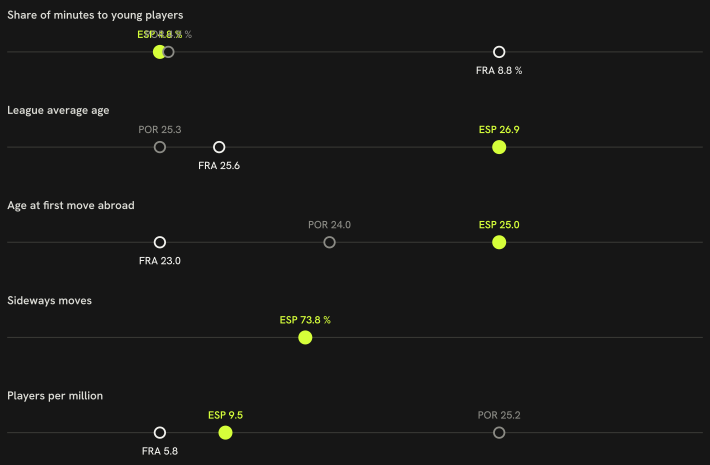
How to read it: one rung per stage of the argument, each on its own scale, so the dots show the distance between countries, not the size of the number. The filled acid dot is Spain; the open dots are the two comparison countries. Under each rung is which direction means a more open pathway. Hover a dot for the exact value.
Share of league minutes that went to players aged 21 or under
ESP 4.8 %FRA 8.8 %POR 4.9 %
Clubs that gave those young players more than a tenth of their own playing time
ESP 7 of 20 clubsFRA 14 of 18 clubsPOR 11 of 18 clubs
Under-21 nationals who were regular starters, per club in the league
ESP 0.70 per club (14 players)FRA 1.28 per club (23 players)POR 0.78 per club (14 players)
The regular-starter line is drawn at ten starts; at five it is 1.2 per club, at fifteen 0.5 (ten: 0.7).
The shortage is one of selection, not of late cameos: 4.7 % of the league’s starts went to them against 4.8 % of its minutes, so they are picked to start about as often as they are played at all. They are, though, taken off early — 73 minutes in a start against the league’s own 78.
Players in Europe's strongest leagues, for every million people
ESP 9.54FRA 5.79POR 25.19
If you take one thing from this: the single measured link that carries the most of the gap with both France and Portugal is how strong the domestic league is. That is one decomposition over 8 countries — a description of the gap, not a weight to plan by.
What this does not show
Money: transfer fees, wages and academy budgets play no part in any number above.
How the academy and coaching set-up actually work day to day, which no public data source used here can see.
Agents, and how a move abroad actually gets arranged, which happens off any table this pipeline can read.
The direction of the arrow: a low share of playing time for young players at home could help cause a thin generation, or just as easily be a symptom of one — the five numbers above are associations measured the same way for every country.
How deep is the pool?
The next three questions count who is in the pool and where the count runs thin.
Is the Spanish pool thin?
Spain ranks 4th of 8 countries at 9.54 per million; Portugal leads at 25.19.
POR
Portugal
25.19
BEL
Belgium
21.46
NED
Netherlands
20.69
ESP
Spain
9.54
FRA
France
5.79
ENG
England
3.60
ITA
Italy
3.41
GER
Germany
3.13
How we know
As an analytics question In numbers: distinct players with ≥ 450 minutes on 2025/26 rosters of the 9 strongest leagues, per million inhabitants, against 8 peers.
What we did We counted every player with the home nation's nationality who had real playing time in one of Europe's strongest leagues that season, then divided the count by the country's population.
Sources Distinct players with ≥ 450 minutes on 2025/26 rosters of the 9 strongest leagues ÷ population (Eurostat 2024); every country counted the same way.
A federation tracking this would watch the per-million rank move over seasons, not any one year's number.
Where exactly is it thin?
The largest cohort gap: Midfielders aged U22, 17 Spanish players vs a peer median of 22.
Group
Cohort
ESP
Peer median
Midfielders
U22
17
22
Forwards
U22
6
5
Forwards
23-25
10
6
Forwards
26-29
12
8
Forwards
30+
10
6
How we know
As an analytics question In numbers: Spanish player count against the peer-country median, by age cohort and position group, ≥ 450 minutes, 2025/26 season.
What we did We split players into position groups and age bands, counted how many the home nation had in each one, and compared that count with the middle value among the other countries.
Sources Age at season start; cohorts U22 / 23–25 / 26–29 / 30+; ≥ 450 minutes.
A federation tracking this would watch which cohort's gap narrows or widens season to season, not just today's snapshot.
Where does the path leak?
From here the questions follow a player through youth minutes at home, the move abroad, and how that move turns out.
Do young players get minutes at home?
Under-21s get 4.8 % of the home league’s minutes. In Netherlands, the best of the peers, 13.6 %.
How sure is the link to the top? Across 8 countries, ten points more under-21 share go with +13.94 more top-9 players per million, but the interval (−4.93 to 33.09) includes zero; within countries, from one season to the next, the estimate is +1.56 (−1.29 to 4.33) — nothing. The share is a fact; its weight in the gap is not settled.
NED
Netherlands
13.6 %
FRA
France
8.8 %
BEL
Belgium
8.7 %
GER
Germany
6.1 %
POR
Portugal
4.9 %
ESP
Spain
4.8 %
ENG
England
3.0 %
ITA
Italy
2.7 %
Across countries
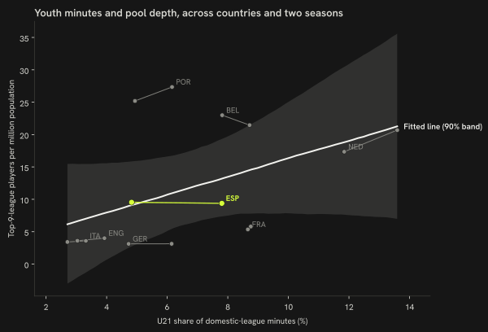
How we know
Across the 8 countries (country averages over both seasons), 10 points more U21 share go with +13.94 more top-9 players per million (−4.93–33.09).
As an analytics question In numbers: share of domestic-league minutes played by players aged ≤ 21 at season start, 2025/26, by country's top flight.
What we did We counted every minute played in the league and looked at how many of them went to players aged 21 or younger.
Sources Share of all league minutes played by players aged ≤ 21 at season start, 2025/26, per domestic top flight.
A federation tracking this would watch the U21 share season by season, not the export count.
126 of 353 play abroad; 64 % in the 9 strongest leagues, 74 % moved sideways (to a league no stronger than the Spanish one).
81
top-9 median multiplier 0.666
64 %
43
other median multiplier 0.438
34 %
2
stepping stone median multiplier 0.473
2 %
How we know
As an analytics question In numbers: destination-league tier of every Spanish-eligible player's 2025/26 row, split into top-9, sideways and other abroad moves.
What we did We looked at where every eligible player was actually playing that season and grouped each one by how strong that league is compared with the player's own home league.
Sources Destination league of every Spanish-eligible player's 2025/26 row; sideways = destination multiplier ≤ Spanish league multiplier (league strength: two estimates, § Methodology). La Liga is itself one of Europe's top-9 leagues; here 'abroad' means the other 8.
A federation tracking this would watch the sideways-move share over time, not the raw count of players abroad.
Does leaving later cost anything?
Arrive in the top-9 at 21 and you produce +0.017 more league-adjusted G+A per 90 over your first two seasons than arriving at 24. Spanish exports arrive at a median age of 22.
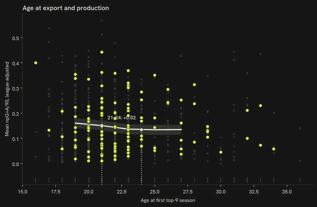
How to read it: the horizontal axis is a player’s age in his first top-9 season; the vertical axis is his league-adjusted goals plus assists per 90 over the first two seasons there. The line is the model’s expected value at each age, the band its 90 % interval; a flat line means arriving later costs nothing measurable. Acid dots are Spanish exports — hover for the name.
How we know
At 21: 0.15 (0.13–0.17); at 24: 0.13 (0.11–0.15); the difference +0.017 (0.004–0.028).
As an analytics question In numbers: mean league-adjusted goals + assists per 90 over the first two top-9 seasons, as a function of age at the first one, given origin-league strength and position, 691 peer-nationality exports.
What we did We looked at the age a player first arrived in one of the strongest leagues and checked whether players who arrived earlier ended up producing more, once we accounted for the strength of the league they came from.
Sources Age curve (natural cubic spline) on league-adjusted production, given origin-league strength (§ Methodology), position and a country effect, 691 peer-nationality exports (Gelman et al., 2013; Hoffman and Gelman, 2014); better players tend to leave earlier, so the curve mixes selection with development and this report does not separate them.
A federation tracking this would watch how the age-at-export curve shifts across cohorts, not any single player's outcome.
How do they fare there?
Spanish exports keep 36 % of their club's minutes (3rd of 8).
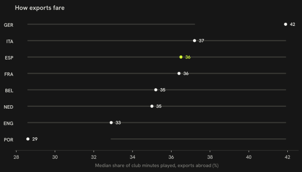
How to read it: one row per country, sorted; the dot is the median share of his club’s minutes that a country’s exported player keeps, the thin line the range across its exports. Spanish exports are the acid row. Further right means exports who play, not sit.Country-by-country figures
GER
Germany n = 262
42 %
ITA
Italy n = 201
37 %
ESP
Spain n = 464
36 %
FRA
France n = 395
36 %
BEL
Belgium n = 253
35 %
NED
Netherlands n = 372
35 %
ENG
England n = 208
33 %
POR
Portugal n = 268
29 %
How we know
A La Liga season converts to 0.91 of a Premier League one by the transfer-graph model (0.86–0.95), against 0.81 by UEFA coefficient.
As an analytics question In numbers: median share of a club's 2025/26 minutes kept by players abroad, by country of origin.
What we did We worked out what share of each club's playing time the player actually got, and where that club stood in its own league's scoring table that season.
Sources Median share of club minutes for players abroad, per country of origin (league strength: two estimates, § Methodology). La Liga is itself one of Europe's top-9 leagues; here 'abroad' means the other 8.
A federation tracking this would watch whether an export's minutes share holds after the first season, not just the median.
What reaches the national team?
The last stretch looks at what actually gets picked, and when the door to the biggest leagues opened and shut.
What is the national-team squad built from?
96 % of the 2026 FIFA World Cup squad plays in the 9 strongest leagues; Germany 100 %.
Top-9 %
Stepping %
Domestic %
Other %
David Raya
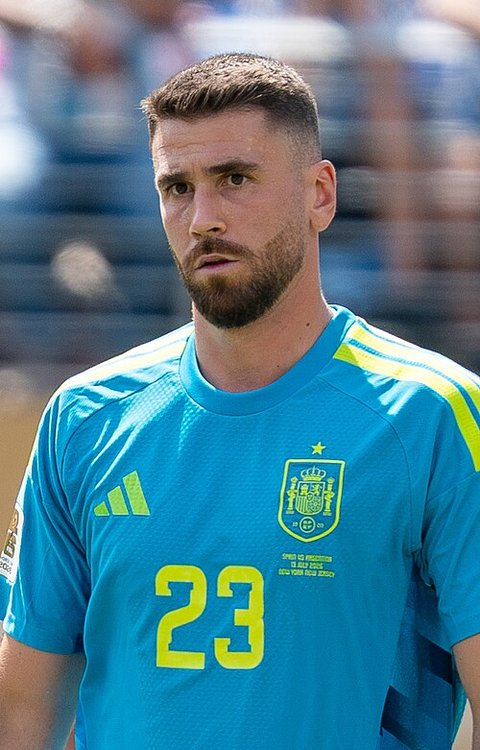
Unai Simón
Martín Zubimendi
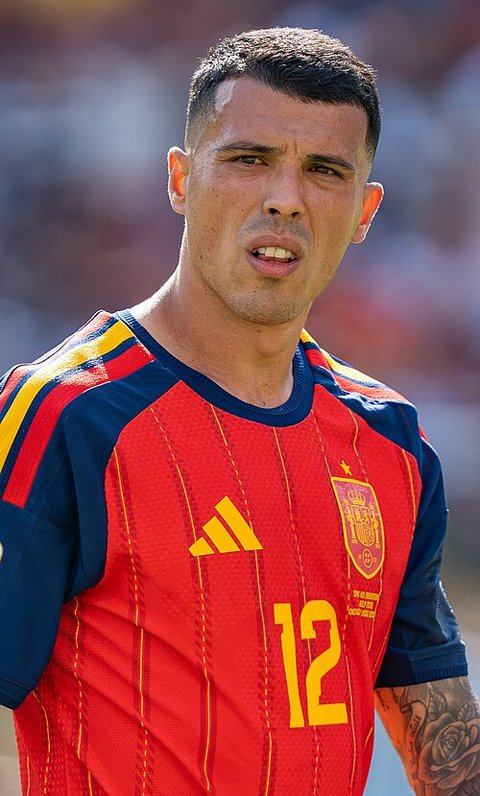
Pedro Porro
Eric García
Mikel Oyarzabal
Marc Cucurella
Pau Cubarsí
Joan Garcia
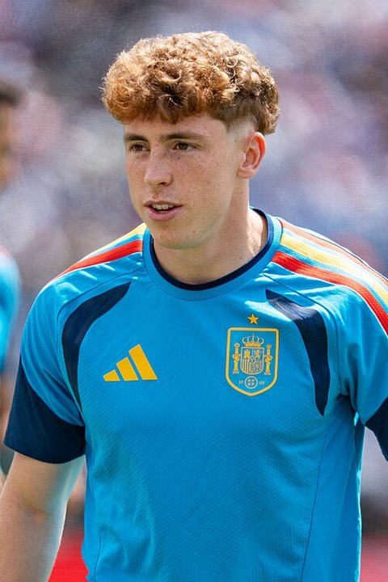
Víctor Muñoz
Álex Grimaldo
Lamine Yamal
Marcos Llorente
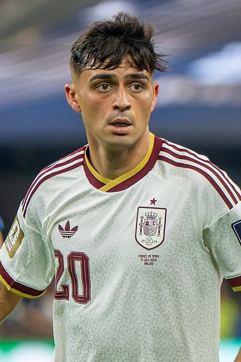
Pedri
Yéremy Pino
Dani Olmo
Aymeric Laporte
Ferran Torres
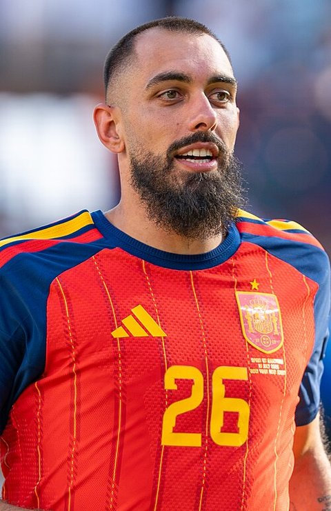
Borja Iglesias
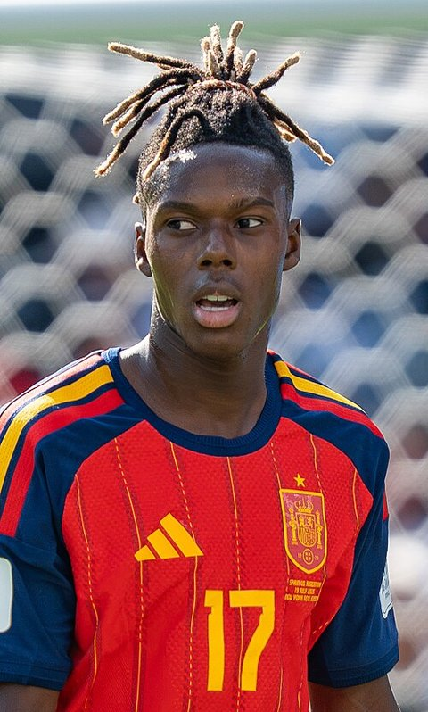
Nico Williams
Álex Baena
Rodri
Marc Pubill
Mikel Merino
Gavi
FRFabián Ruiz
How the peers are sourced
Top-9 %
Stepping %
Domestic %
Other %
ESP Spain
Squad 26
96 %
GER Germany
Squad 26
100 %
FRA France
Squad 26
96 %
ENG England
Squad 26
96 %
NED Netherlands
Squad 26
96 %
BEL Belgium
Squad 26
96 %
POR Portugal
Squad 26
88 %
How we know
As an analytics question In numbers: league tier of every 2026 FIFA World Cup squad member's most-minutes 2025/26 row, matched by name and birth year, per country.
What we did We matched every named squad player to his club season and recorded which level of league he was actually playing in.
Sources Wikipedia squad lists matched to 2025/26 league rows; tier = league of the most-minutes row.
A federation tracking this would watch the tier mix of future squads over cycles, not one tournament's snapshot.
When did the train leave?
Spanish players with ≥ 450 Big-5 minutes: 323 at the 1995/96 peak, 228 at the 1997/98 low, 284 in 2025/26. The model finds no step change: its best candidate, 2001/02, carries 2 % and a ×1.02 change — a flat series.
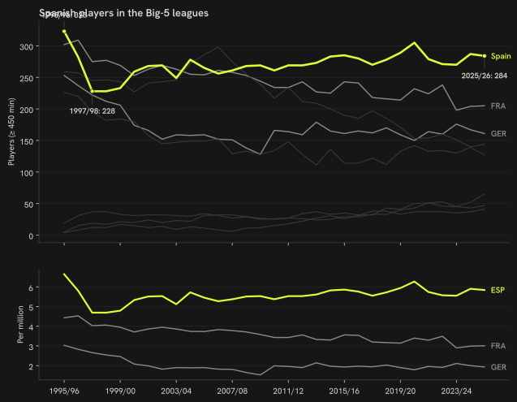
How to read it: each line is one country’s count of players with at least 450 minutes in the five biggest leagues, season by season since 1995/96. Spanish players are the acid line; the dashed rules are the seasons the model dates the rise and the fall to, with their probabilities; the point past the last season is the forecast for next season with its 90 % interval. Toggle countries and switch to per million to compare fairly across sizes.
How we know
Break posterior 2 %; a level change of ×1.02 (0.90–1.12).
As an analytics question In numbers: Spanish players with ≥ 450 minutes in the Big-5 leagues each season since 2020/21, with the rise and the fall each dated by a change-point model.
What we did We counted, season by season, how many home-nation players had real playing time in Europe's five biggest leagues, then looked for the two seasons where that count changed level for good — once up, once down — and stayed there.
Sources FBref Big-5 player tables 1995/96 → 2025/26; peers on the same rule; the names are the most-minutes Spanish players of each peak season, goalkeepers included — a lineup of presence, not a quality ranking: 1995/96: Javier Falagán, Francisco Leal Rodríguez, José Molina; 2020/21: Álex Remiro, Fernando Pacheco, Vicente Guaita; 2019/20: David de Gea, David Soria, Jesús Navas. The break dates come from a Bayesian local-level model with two ordered change points, one for the rise and one for the fall (Adams and MacKay, 2007); detail in § Methodology.
A federation tracking this would watch whether the post-break level holds for another season, not treat one break as final.
On the same six numbers France gives U21 players 9 % of domestic minutes against 5 % and sends 96 % of its squad to the 9 strongest leagues against 96 %.
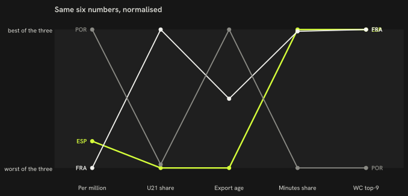
How to read it: six measures, each rescaled so 0 is the worst of the three countries and 1 the best, one line per country. A line that stays high is a pathway that is open at every stage; where the acid line dips is where Spain loses ground.The six numbers, unscaled
Metric
ESP
FRA
POR
Players per million
9.54
5.79
25.19
U21 share of domestic minutes
4.8 %
8.8 %
4.9 %
Export age (recent)
21.5
21
20.5
Sideways moves
74 %
—
—
Exports' club-minutes share
36 %
36 %
29 %
National-team squad in the top-9 leagues
96 %
96 %
88 %
Big-5 players now
284
205
47
How we know
As an analytics question In numbers: France and Portugal against Spain on the same six 9-strongest-league pathway definitions, same seasons.
What we did We compared the home nation with the two comparison countries on six numbers, each one defined and measured in exactly the same way for all three.
Sources Same definitions, same seasons; a comparison, not a causal claim. Each metric is rescaled 0-1 across the three countries for the chart above, direction chosen so 1.0 is always the more open pathway (more players per million, more U21 minutes, an earlier export age, fewer sideways moves, a bigger minutes share abroad, more of the squad in the top-9); the table below keeps the raw numbers.
A federation tracking this would watch which of the six numbers moves first, not the overall picture alone.
Do goalkeepers follow a different path?
20 Spanish goalkeepers play ≥ 450 minutes in the top-9 leagues — rank 4 of 8 per million — and they get there later than outfield exports.
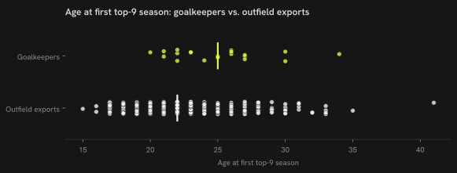
How to read it: one dot per player at the age of his first season in a top-9 league; goalkeepers in the upper strip, outfield exports in the lower, medians marked. Further left is an earlier first appearance.Club tier: Spanish top-9 goalkeepers, 2025/26
Player
Club
League
Minutes
Club goals percentile
David Soria
Getafe
ESP-La Liga
3420
10 %
Antonio Sivera
Alavés
ESP-La Liga
3420
23 %
David Raya
Arsenal
ENG-Premier League
3330
95 %
David de Gea
Fiorentina
ITA-Serie A
3330
38 %
Álex Remiro
Real Sociedad
ESP-La Liga
3330
75 %
Unai Simón
Athletic Club
ESP-La Liga
3330
35 %
Sergio Herrera
Osasuna
ESP-La Liga
3284
35 %
Aarón Escandell
Oviedo
ESP-La Liga
3240
5 %
Robert Sánchez
Chelsea
ENG-Premier League
3039
78 %
Leo Román
Mallorca
ESP-La Liga
2970
60 %
Nacho Miras
Mechelen
BEL-Pro League
2925
38 %
Joel Robles
Estoril
POR-Primeira Liga
2790
78 %
Joan García
Barcelona
ESP-La Liga
2700
100 %
Álvaro Vallés
Real Betis
ESP-La Liga
2520
82 %
Julián Cuesta
Antalyaspor
TUR-Süper Lig
1800
31 %
Julen Agirrezabala
Valencia
ESP-La Liga
1620
50 %
Iñaki Peña
Elche
ESP-La Liga
1440
60 %
Arnau Tenas
Villarreal
ESP-La Liga
900
90 %
Pau López
Real Betis
ESP-La Liga
810
82 %
Josep Martinez
Inter
ITA-Serie A
450
100 %
Goalkeeper production: Spanish keepers, 2025/26
Player
Club
League
Minutes
GA/90
Saves/90
Save %
Clean-sheet share
GA/90, quality-adj.
David Raya
Arsenal
ENG-Premier League
3330
0.70
1.59
66.3 %
51 %
0.84
Robert Sánchez
Chelsea
ENG-Premier League
3039
1.45
2.87
66.0 %
26 %
1.43
David de Gea
Fiorentina
ITA-Serie A
3330
1.32
3.22
68.7 %
27 %
1.54
Josep Martinez
Inter
ITA-Serie A
450
0.80
2.00
68.4 %
60 %
1.31
Antonio Sivera
Alavés
ESP-La Liga
3420
1.47
2.55
68.1 %
13 %
1.80
Unai Simón
Athletic Club
ESP-La Liga
3330
1.46
2.62
68.2 %
16 %
1.78
Joan García
Barcelona
ESP-La Liga
2700
0.70
2.47
69.7 %
50 %
1.07
Iñaki Peña
Elche
ESP-La Liga
1440
1.75
3.44
68.7 %
25 %
1.98
David Soria
Getafe
ESP-La Liga
3420
1.00
3.03
69.7 %
32 %
1.33
Leo Román
Mallorca
ESP-La Liga
2970
1.52
3.00
68.5 %
12 %
1.83
Sergio Herrera
Osasuna
ESP-La Liga
3284
1.29
3.10
69.2 %
19 %
1.62
Aarón Escandell
Oviedo
ESP-La Liga
3240
1.56
4.03
69.5 %
28 %
1.88
Pau López
Real Betis
ESP-La Liga
810
1.22
3.22
69.0 %
22 %
1.61
Álvaro Vallés
Real Betis
ESP-La Liga
2520
1.29
3.11
69.1 %
29 %
1.62
Álex Remiro
Real Sociedad
ESP-La Liga
3330
1.62
2.68
67.9 %
8 %
1.94
Julen Agirrezabala
Valencia
ESP-La Liga
1620
1.67
2.89
68.4 %
22 %
1.93
Arnau Tenas
Villarreal
ESP-La Liga
900
1.60
3.00
68.7 %
0 %
1.84
Joel Robles
Estoril
POR-Primeira Liga
2790
1.74
2.68
65.6 %
16 %
2.59
Nacho Miras
Mechelen
BEL-Pro League
2925
1.51
4.18
69.9 %
24 %
2.61
Julián Cuesta
Antalyaspor
TUR-Süper Lig
1800
1.70
3.95
68.8 %
15 %
3.28
Peer median quality-adjusted GA/90:
ESP 1.79 · FRA 2.07 · GER 2.72 · ITA 1.49 · ENG 1.40 · NED 3.09 · POR 2.34 · BEL 2.21
Goalkeepers per million, by country
BEL
Belgium
1.78
NED
Netherlands
1.39
POR
Portugal
1.03
ESP
Spain
0.41
ITA
Italy
0.29
GER
Germany
0.24
FRA
France
0.21
ENG
England
0.09
How we know
0.41 per million; first top-9 season at a median age of 25, against 22 for outfield exports.
As an analytics question In numbers: Spanish goalkeepers with ≥ 450 minutes in the top-9 leagues, per million inhabitants, against outfield export age.
What we did We counted goalkeepers the same way we counted outfield players, then compared the age each group first reached one of the strongest leagues.
Sources 450-minute floor, 2025/26 rosters, same K = 900 shrinkage as the rest of the report; first season in a fetched top-9 table; players already there in 2020/21 are censored — 55 % of the goalkeepers, 33 % of the outfield exports; a comparison of two pathways inside one nation, not a causal claim. First top-9 season needs no move for a La Liga keeper.
A federation tracking this would watch whether the goalkeeper pathway keeps diverging from outfield export age, not one season's gap.
What is the gap made of?
Of the −3.75 players per million between France and Spain, U21 minutes go with −2.33, league strength with +4.99, export age with +2.13.
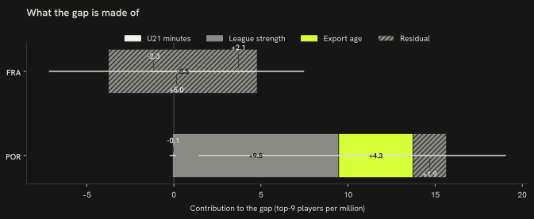
How to read it: the whole bar is the gap in players per million between the comparison country and Spain. Each segment is how much of that gap goes with one measured channel — youth minutes, league strength, export age — under the decomposition; the hatched remainder is what the three channels do not carry. A segment can be negative when the channel works the other way.
How we know
−8.53 is not carried by the three channels.
As an analytics question In numbers: a linear split of the per-capita gap into U21 minutes, league strength and export age across 8 peer countries.
What we did We used the players who changed leagues to work out what a season in one league is worth in another, then split the gap between countries into the parts that line up with young players' minutes, league strength and the age players move abroad.
Sources Ridge-regression linear split, Blinder-Oaxaca-style (Oaxaca, 1973; Blinder, 1973), fit on the 8 peer countries with data on all three channels; bootstrap 90 % intervals, 1000 resamples; a decomposition of a correlation, not a causal accounting.
A federation tracking this would watch which channel's contribution grows, not treat the split as fixed.
Why these cards: one card per position group per rule, applied in this order — (a) highest goals + assists per 90, league-adjusted, (b) youngest national-team call-up, (c) most top-9 minutes among the 2026 FIFA World Cup squad, (d) most domestic-league minutes among the 2026 FIFA World Cup squad, (e) most top-9 minutes, (f) most domestic minutes under 23 without a top-9 season. A player already chosen by an earlier rule falls through to the next name, so a later row can show the second name by its measure. Rows group the six rules; the national-team core row holds two of them.
Style mapPrimary scorersQuality mapHigh-volume scorers in top-five leagues
Tactical read
Primary scorers — non-penalty goal rate nearly double the forward median on starter minutes (56 %). The finishing forward of a first-choice line (Duro, Torres, Jutglà).
Trajectory 2024/25 → 2025/26
↓declining−0.16G+A / 90 adj.1106 min → 1965 min
Historical analogs at age 26
Christopher NkunkuFRA
GER-Bundesliga 2022/23 · 1897 min · 0.56 ·
d = 0.16
Georges MikautadzeGEO
ESP-La Liga 2025/26 · 2109 min · 0.56 ·
d = 0.19
Ademola LookmanNGA
ITA-Serie A 2022/23 · 1729 min · 0.57 ·
d = 0.39
2026 FIFA World Cup · UEFA Euro 2024
Selected as: highest goals + assists per 90, league-adjusted among FW.
Style mapHigh-minutes creative midfieldersQuality mapProductive midfielders in top-five leagues
Tactical read
Starting playmakers — assist rate three times the midfield median on 62 % of minutes, scoring nearly double. The creative hub of the middle third (Milla, García, Grimaldo).
Trajectory 2024/25 → 2025/26
↑improving+0.13G+A / 90 adj.2856 min → 2262 min
Historical analogs at age 19
Florian WirtzGER
GER-Bundesliga 2021/22 · 1851 min · 0.49 ·
d = 1.01
Mathys TelFRA
GER-Bundesliga 2023/24 · 1050 min · 0.52 ·
d = 1.72
Jamal MusialaGER
GER-Bundesliga 2021/22 · 1465 min · 0.36 ·
d = 2.22
2026 FIFA World Cup · UEFA Euro 2024
Selected as: highest goals + assists per 90, league-adjusted among MF.
Every-week starters — three quarters of the season's minutes, assist rate about 1.5 times the forward median, scoring at median. Mostly a top-five-league footprint: the first-choice forward who links play as much as he finishes (Ferri, Martínez, Oyarzabal).
Trajectory 2024/25 → 2025/26
↑improving+0.05G+A / 90 adj.2250 min → 2710 min
Historical analogs at age 29
Iñaki WilliamsGHA
ESP-La Liga 2022/23 · 2836 min · 0.31 ·
d = 0.21
Tim KleindienstGER
GER-Bundesliga 2023/24 · 2869 min · 0.33 ·
d = 0.23
Ché AdamsSCO
ITA-Serie A 2024/25 · 2652 min · 0.35 ·
d = 0.29
2026 FIFA World Cup · UEFA Euro 2024
Selected as: most top-9 minutes among 2026 FIFA World Cup squad FW.
The engine room — nearly 80 % of minutes with median output: holding and box-to-box midfielders whose value is continuity and structure, not numbers (Febas, Blanco, Moncayola).
Trajectory 2024/25 → 2025/26
↑improving+0.10G+A / 90 adj.2962 min → 2992 min
Historical analogs at age 27
Tomáš SoučekCZE
ENG-Premier League 2021/22 · 3062 min · 0.18 ·
d = 0.14
Josh BrownhillENG
ENG-Premier League 2021/22 · 2955 min · 0.16 ·
d = 0.27
RodriESP
ENG-Premier League 2022/23 · 2911 min · 0.24 ·
d = 0.43
2026 FIFA World Cup · UEFA Euro 2024
Selected as: most top-9 minutes among 2026 FIFA World Cup squad MF.
Style mapEveryday starting defendersQuality mapHigh-assist defenders in top-five leagues
Tactical read
The defensive core — 85 % of minutes, output at the DF floor. Availability and continuity are the signal; production is not (Iglesias, Catena, Sadick).
Trajectory 2024/25 → 2025/26
↓declining−0.13G+A / 90 adj.2610 min → 2796 min
Historical analogs at age 27
Trevoh ChalobahENG
ENG-Premier League 2025/26 · 2783 min · 0.09 ·
d = 0.02
Matt TargettENG
ENG-Premier League 2021/22 · 2871 min · 0.06 ·
d = 0.23
James JustinENG
ENG-Premier League 2024/25 · 2912 min · 0.11 ·
d = 0.23
2026 FIFA World Cup
Selected as: most top-9 minutes among 2026 FIFA World Cup squad DF.
Style mapOlder forwards with moderate playing timeQuality mapHigh-volume scorers in top-five leagues
Tactical read
Experienced forwards on managed minutes — median age 31, about 40 % of minutes, output at median. The impact or target forward used in rotation (Iglesias, Félix, Mir).
Trajectory 2024/25 → 2025/26
→stable−0.03G+A / 90 adj.1952 min → 1900 min
Historical analogs at age 33
Max KruseGER
GER-Bundesliga 2020/21 · 1629 min · 0.45 ·
d = 0.41
Marius BülterGER
GER-Bundesliga 2025/26 · 1597 min · 0.39 ·
d = 0.50
Ciro ImmobileITA
ITA-Serie A 2022/23 · 2219 min · 0.41 ·
d = 0.51
2026 FIFA World Cup
Selected as: most domestic minutes among 2026 FIFA World Cup squad FW.
The engine room — nearly 80 % of minutes with median output: holding and box-to-box midfielders whose value is continuity and structure, not numbers (Febas, Blanco, Moncayola).
Historical analogs at age 23
Nathaniel BrownGER
GER-Bundesliga 2025/26 · 2656 min · 0.20 ·
d = 0.10
Ritsu DoanJPN
GER-Bundesliga 2020/21 · 2768 min · 0.17 ·
d = 0.28
Arthur AttaFRA
ITA-Serie A 2025/26 · 2557 min · 0.22 ·
d = 0.30
2026 FIFA World Cup
Selected as: most domestic minutes among 2026 FIFA World Cup squad MF.
The defensive core — 85 % of minutes, output at the DF floor. Availability and continuity are the signal; production is not (Iglesias, Catena, Sadick).
Trajectory 2024/25 → 2025/26
↓declining−0.10G+A / 90 adj.1566 min → 2721 min
Historical analogs at age 25
Loïc BadeFRA
ESP-La Liga 2024/25 · 2686 min · 0.05 ·
d = 0.08
Sergi CardonaESP
ESP-La Liga 2023/24 · 2814 min · 0.07 ·
d = 0.20
Nico SchlotterbeckGER
GER-Bundesliga 2023/24 · 2859 min · 0.06 ·
d = 0.22
2026 FIFA World Cup
Selected as: most domestic minutes among 2026 FIFA World Cup squad DF.
Every-week starters — three quarters of the season's minutes, assist rate about 1.5 times the forward median, scoring at median. Mostly a top-five-league footprint: the first-choice forward who links play as much as he finishes (Ferri, Martínez, Oyarzabal).
Trajectory 2024/25 → 2025/26
→stable+0.01G+A / 90 adj.2002 min → 2382 min
Historical analogs at age 24
Benedict HollerbachGER
GER-Bundesliga 2024/25 · 2540 min · 0.31 ·
d = 0.25
Samuel ChukwuezeNGA
ESP-La Liga 2022/23 · 2339 min · 0.34 ·
d = 0.37
Lorenzo ColomboITA
ITA-Serie A 2025/26 · 2326 min · 0.25 ·
d = 0.44
UEFA European Under-21 Championship 2025
Selected as: youngest national-team call-up among FW.
The defensive core — 85 % of minutes, output at the DF floor. Availability and continuity are the signal; production is not (Iglesias, Catena, Sadick).
Trajectory 2024/25 → 2025/26
→stable−0.03G+A / 90 adj.2618 min → 2703 min
Historical analogs at age 19
Leny YoroFRA
FRA-Ligue 1 2023/24 · 2673 min · 0.04 ·
d = 0.69
Abdoul CoulibalyGER
GER-Bundesliga 2025/26 · 2120 min · 0.04 ·
d = 0.78
Luka VuškovićCRO
GER-Bundesliga 2025/26 · 2442 min · 0.12 ·
d = 0.84
2026 FIFA World Cup
Selected as: youngest national-team call-up among DF.
Every-week starters — three quarters of the season's minutes, assist rate about 1.5 times the forward median, scoring at median. Mostly a top-five-league footprint: the first-choice forward who links play as much as he finishes (Ferri, Martínez, Oyarzabal).
Trajectory 2024/25 → 2025/26
→stable+0.01G+A / 90 adj.2287 min → 2891 min
Historical analogs at age 22
Thom van BergenNED
NED-Eredivisie 2025/26 · 2966 min · 0.20 ·
d = 0.39
Hélio VarelaCPV
POR-Primeira Liga 2023/24 · 2743 min · 0.20 ·
d = 0.40
Matthis AblineFRA
FRA-Ligue 1 2024/25 · 2768 min · 0.25 ·
d = 0.50
Starting playmakers — assist rate three times the midfield median on 62 % of minutes, scoring nearly double. The creative hub of the middle third (Milla, García, Grimaldo).
Trajectory 2024/25 → 2025/26
↑improving+0.11G+A / 90 adj.2875 min → 3271 min
Historical analogs at age 32
Daniel ParejoESP
ESP-La Liga 2020/21 · 3112 min · 0.17 ·
d = 0.48
Sergi DarderESP
ESP-La Liga 2024/25 · 2744 min · 0.20 ·
d = 0.73
Darko LazovićSRB
ITA-Serie A 2021/22 · 2766 min · 0.20 ·
d = 0.73
Barcelona (ESP-La Liga) · 100 % of the league's goals scored
2026 FIFA World Cup
Selected as: youngest home goalkeeper with minimum top-9 minutes.
* Each card renders the existing dataset; no computation beyond the join. Age on the name line is the 2026/27 season-start age (start year − birth year); the club is from the 2026/27 tables, or — labelled "latest known" — from FBref's country page where the player has no 2026/27 row. Age on the analog line follows the analog finder's convention (season start year + 1 − birth year).
The atlas: every player-season of 2025/26, one dot each
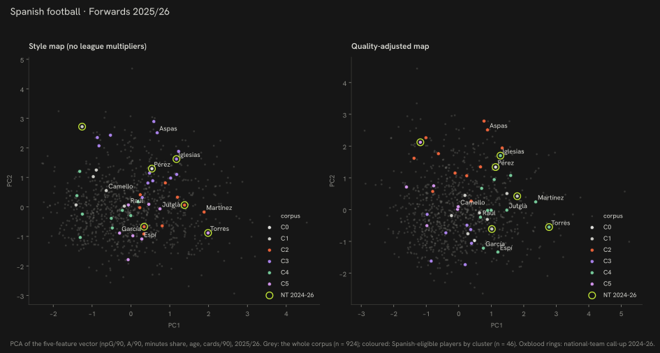
How to read it: every dot is the 2025/26 season of one of the forwards in the leagues this report covers. The two axes are the first two principal components of his five per-90 numbers (goals, assists, minutes share, age, cards) — dots that sit close together had similar seasons. The style projection uses the raw numbers, the quality projection the league-adjusted ones, so switching shows who moves when the strength of his league is counted. Colours are the clusters named below; acid dots are Spanish-eligible players, a white ring marks a national-team call-up. Hover a dot for the player, click to pin, scroll to zoom, type a name to find him.
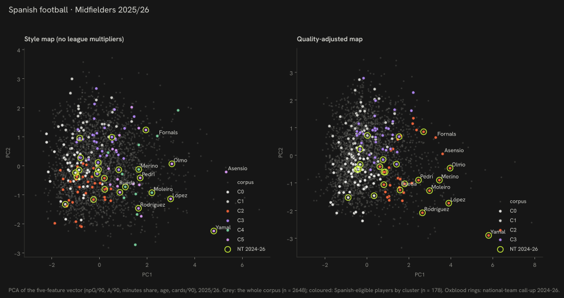
How to read it: every dot is the 2025/26 season of one of the midfielders in the leagues this report covers. The two axes are the first two principal components of his five per-90 numbers (goals, assists, minutes share, age, cards) — dots that sit close together had similar seasons. The style projection uses the raw numbers, the quality projection the league-adjusted ones, so switching shows who moves when the strength of his league is counted. Colours are the clusters named below; acid dots are Spanish-eligible players, a white ring marks a national-team call-up. Hover a dot for the player, click to pin, scroll to zoom, type a name to find him.
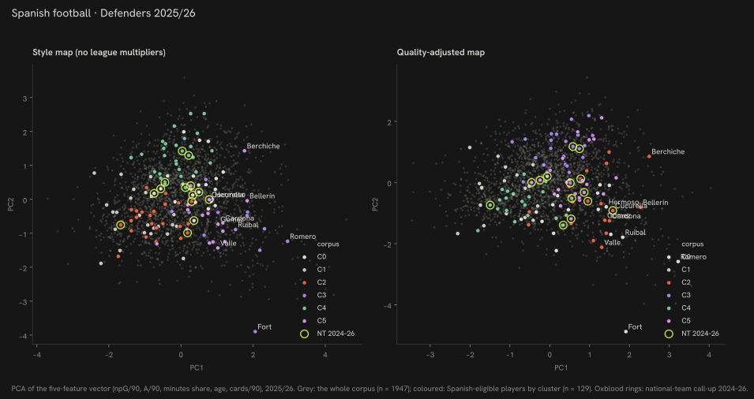
How to read it: every dot is the 2025/26 season of one of the defenders in the leagues this report covers. The two axes are the first two principal components of his five per-90 numbers (goals, assists, minutes share, age, cards) — dots that sit close together had similar seasons. The style projection uses the raw numbers, the quality projection the league-adjusted ones, so switching shows who moves when the strength of his league is counted. Colours are the clusters named below; acid dots are Spanish-eligible players, a white ring marks a national-team call-up. Hover a dot for the player, click to pin, scroll to zoom, type a name to find him.
Every player in the 2025/26 pool — all 381, searchable
The cards above pick by rule. This is everyone with a 2025/26 season in the data: 46 forwards, 178 midfielders, 129 defenders and 28 goalkeepers. Open a name for what the report measures about him, in plain words. Rank is within his own position group on quality-adjusted production; the two arrows mark a mid-season move.
381 of 381
PlayerAgePosClubMinutesRank
Luis Milla30MFGetafe3 27128/178
playing time98
selection96
output88
crossing95
defending64
drawing fouls47
Percentiles among all midfielders with at least 450 minutes in the covered leagues, 2025/26 — 100 is the top.
30, midfielder, Getafe (La Liga).
Started 37 games and came on 0 times, finishing 31 of the starts; 88 minutes in a typical start and 96 % of his club’s available minutes.
0.03 non-penalty goals and 0.28 assists per 90; adjusted for the strength of his league that is 0.22, which ranks him 28 of 178 midfielders in the pool.
Per 90 he attempts 6.2 crosses, wins 0.9 tackles, makes 1.2 interceptions and is fouled 1.2 times.
Percentiles among all defenders with at least 450 minutes in the covered leagues, 2025/26 — 100 is the top.
23, defender, Espanyol (La Liga).
Started 36 games and came on 0 times, finishing 32 of the starts; 89 minutes in a typical start and 93 % of his club’s available minutes.
0.17 non-penalty goals and 0.08 assists per 90; adjusted for the strength of his league that is 0.17, which ranks him 3 of 129 defenders in the pool.
Per 90 he attempts 2.5 crosses, wins 1.7 tackles, makes 1.1 interceptions and is fouled 0.5 times.
Percentiles among all defenders with at least 450 minutes in the covered leagues, 2025/26 — 100 is the top.
27, defender, Getafe (La Liga).
Started 36 games and came on 1 times, finishing 31 of the starts; 88 minutes in a typical start and 93 % of his club’s available minutes.
0.03 non-penalty goals and 0.06 assists per 90; adjusted for the strength of his league that is 0.07, which ranks him 54 of 129 defenders in the pool.
Per 90 he attempts 3.1 crosses, wins 2.0 tackles, makes 0.8 interceptions and is fouled 2.0 times.
Percentiles among all midfielders with at least 450 minutes in the covered leagues, 2025/26 — 100 is the top.
29, midfielder, Elche (La Liga).
Started 36 games and came on 0 times, finishing 30 of the starts; 88 minutes in a typical start and 98 % of his club’s available minutes.
0.06 non-penalty goals and 0.06 assists per 90; adjusted for the strength of his league that is 0.10, which ranks him 123 of 178 midfielders in the pool.
Per 90 he attempts 0.6 crosses, wins 1.3 tackles, makes 0.8 interceptions and is fouled 3.4 times.
Percentiles among all midfielders with at least 450 minutes in the covered leagues, 2025/26 — 100 is the top.
25, midfielder, Alavés (La Liga).
Started 36 games and came on 0 times, finishing 28 of the starts; 86 minutes in a typical start and 91 % of his club’s available minutes.
0.06 non-penalty goals and 0.09 assists per 90; adjusted for the strength of his league that is 0.12, which ranks him 101 of 178 midfielders in the pool.
Per 90 he attempts 0.9 crosses, wins 1.4 tackles, makes 1.5 interceptions and is fouled 1.2 times.
Percentiles among all defenders with at least 450 minutes in the covered leagues, 2025/26 — 100 is the top.
30, defender, Osasuna (La Liga).
Started 35 games and came on 0 times, finishing 32 of the starts; 88 minutes in a typical start and 92 % of his club’s available minutes.
0.09 non-penalty goals and 0.06 assists per 90; adjusted for the strength of his league that is 0.10, which ranks him 20 of 129 defenders in the pool.
Per 90 he attempts 0.0 crosses, wins 0.8 tackles, makes 0.9 interceptions and is fouled 0.4 times.
Percentiles among all midfielders with at least 450 minutes in the covered leagues, 2025/26 — 100 is the top.
27, midfielder, Osasuna (La Liga).
Started 35 games and came on 1 times, finishing 21 of the starts; 85 minutes in a typical start and 91 % of his club’s available minutes.
0.00 non-penalty goals and 0.12 assists per 90; adjusted for the strength of his league that is 0.11, which ranks him 121 of 178 midfielders in the pool.
Per 90 he attempts 4.2 crosses, wins 0.8 tackles, makes 0.8 interceptions and is fouled 0.4 times.
Percentiles among all defenders with at least 450 minutes in the covered leagues, 2025/26 — 100 is the top.
25, defender, Genk (BEL-Pro League, top-9 league).
Started 34 games and came on 2 times, finishing 33 of the starts; 88 minutes in a typical start and 86 % of his club’s available minutes.
0.06 non-penalty goals and 0.00 assists per 90; adjusted for the strength of his league that is 0.04, which ranks him 96 of 129 defenders in the pool.
Per 90 he attempts 0.1 crosses, wins 1.5 tackles, makes 0.9 interceptions and is fouled 0.4 times.
Percentiles among all defenders with at least 450 minutes in the covered leagues, 2025/26 — 100 is the top.
31, defender, Alavés (La Liga).
Started 34 games and came on 0 times, finishing 30 of the starts; 88 minutes in a typical start and 88 % of his club’s available minutes.
0.00 non-penalty goals and 0.00 assists per 90; adjusted for the strength of his league that is 0.01, which ranks him 124 of 129 defenders in the pool.
Per 90 he attempts 0.7 crosses, wins 1.2 tackles, makes 1.2 interceptions and is fouled 0.9 times.
Percentiles among all midfielders with at least 450 minutes in the covered leagues, 2025/26 — 100 is the top.
26, midfielder, Arsenal (ENG-Premier League, top-9 league).
Started 34 games and came on 4 times, finishing 22 of the starts; 84 minutes in a typical start and 87 % of his club’s available minutes.
0.15 non-penalty goals and 0.03 assists per 90; adjusted for the strength of his league that is 0.19, which ranks him 47 of 178 midfielders in the pool.
Per 90 he attempts 0.4 crosses, wins 1.2 tackles, makes 1.2 interceptions and is fouled 0.5 times.
Percentiles among all forwards with at least 450 minutes in the covered leagues, 2025/26 — 100 is the top.
20, forward, Westerlo (BEL-Pro League, top-9 league).
Started 34 games and came on 2 times, finishing 9 of the starts; 84 minutes in a typical start and 80 % of his club’s available minutes.
0.34 non-penalty goals and 0.06 assists per 90; adjusted for the strength of his league that is 0.23, which ranks him 33 of 46 forwards in the pool.
Per 90 he attempts 0.4 crosses, wins 0.5 tackles, makes 0.2 interceptions and is fouled 2.2 times.
Percentiles among all midfielders with at least 450 minutes in the covered leagues, 2025/26 — 100 is the top.
23, midfielder, Elche (La Liga).
Started 33 games and came on 3 times, finishing 17 of the starts; 85 minutes in a typical start and 88 % of his club’s available minutes.
0.13 non-penalty goals and 0.16 assists per 90; adjusted for the strength of his league that is 0.21, which ranks him 35 of 178 midfielders in the pool.
Per 90 he attempts 3.3 crosses, wins 1.3 tackles, makes 0.7 interceptions and is fouled 2.2 times.
Percentiles among all midfielders with at least 450 minutes in the covered leagues, 2025/26 — 100 is the top.
29, midfielder, Real Betis (La Liga).
Started 34 games and came on 3 times, finishing 15 of the starts; 80 minutes in a typical start and 86 % of his club’s available minutes.
0.28 non-penalty goals and 0.19 assists per 90; adjusted for the strength of his league that is 0.33, which ranks him 8 of 178 midfielders in the pool.
Per 90 he attempts 4.4 crosses, wins 0.8 tackles, makes 1.1 interceptions and is fouled 0.8 times.
Percentiles among all midfielders with at least 450 minutes in the covered leagues, 2025/26 — 100 is the top.
27, midfielder, Casa Pia (POR-Primeira Liga, top-9 league).
Started 33 games and came on 0 times, finishing 21 of the starts; 86 minutes in a typical start and 96 % of his club’s available minutes.
0.16 non-penalty goals and 0.13 assists per 90; adjusted for the strength of his league that is 0.16, which ranks him 64 of 178 midfielders in the pool.
Per 90 he attempts 2.5 crosses, wins 0.9 tackles, makes 1.0 interceptions and is fouled 0.4 times.
Percentiles among all midfielders with at least 450 minutes in the covered leagues, 2025/26 — 100 is the top.
21, midfielder, Athletic Club (La Liga).
Started 34 games and came on 2 times, finishing 19 of the starts; 82 minutes in a typical start and 85 % of his club’s available minutes.
0.06 non-penalty goals and 0.00 assists per 90; adjusted for the strength of his league that is 0.07, which ranks him 157 of 178 midfielders in the pool.
Per 90 he attempts 2.3 crosses, wins 1.4 tackles, makes 1.5 interceptions and is fouled 1.1 times.
Percentiles among all defenders with at least 450 minutes in the covered leagues, 2025/26 — 100 is the top.
24, defender, Levante (La Liga).
Started 31 games and came on 2 times, finishing 25 of the starts; 88 minutes in a typical start and 85 % of his club’s available minutes.
0.03 non-penalty goals and 0.06 assists per 90; adjusted for the strength of his league that is 0.07, which ranks him 46 of 129 defenders in the pool.
Per 90 he attempts 2.4 crosses, wins 1.7 tackles, makes 1.1 interceptions and is fouled 0.6 times.
Percentiles among all defenders with at least 450 minutes in the covered leagues, 2025/26 — 100 is the top.
25, defender, Tottenham (ENG-Premier League, top-9 league).
Started 32 games and came on 2 times, finishing 26 of the starts; 86 minutes in a typical start and 89 % of his club’s available minutes.
0.03 non-penalty goals and 0.06 assists per 90; adjusted for the strength of his league that is 0.09, which ranks him 27 of 129 defenders in the pool.
Per 90 he attempts 7.5 crosses, wins 1.6 tackles, makes 1.0 interceptions and is fouled 0.8 times.
Percentiles among all midfielders with at least 450 minutes in the covered leagues, 2025/26 — 100 is the top.
34, midfielder, Jagiellonia (POL-Ekstraklasa, other covered league).
Started 32 games and came on 1 times, finishing 20 of the starts; 86 minutes in a typical start and 94 % of his club’s available minutes.
0.42 non-penalty goals and 0.19 assists per 90; adjusted for the strength of his league that is 0.23, which ranks him 27 of 178 midfielders in the pool.
Per 90 he attempts 0.6 crosses, wins 0.6 tackles, makes 0.3 interceptions and is fouled 0.7 times.
Percentiles among all defenders with at least 450 minutes in the covered leagues, 2025/26 — 100 is the top.
34, defender, Celta Vigo (La Liga).
Started 31 games and came on 1 times, finishing 28 of the starts; 88 minutes in a typical start and 81 % of his club’s available minutes.
0.00 non-penalty goals and 0.00 assists per 90; adjusted for the strength of his league that is 0.01, which ranks him 122 of 129 defenders in the pool.
Per 90 he attempts 0.6 crosses, wins 0.8 tackles, makes 1.0 interceptions and is fouled 0.7 times.
Percentiles among all defenders with at least 450 minutes in the covered leagues, 2025/26 — 100 is the top.
20, defender, Como (ITA-Serie A, top-9 league).
Started 30 games and came on 2 times, finishing 28 of the starts; 88 minutes in a typical start and 80 % of his club’s available minutes.
0.07 non-penalty goals and 0.00 assists per 90; adjusted for the strength of his league that is 0.05, which ranks him 73 of 129 defenders in the pool.
Per 90 he attempts 0.4 crosses, wins 1.1 tackles, makes 1.2 interceptions and is fouled 0.4 times.
Percentiles among all defenders with at least 450 minutes in the covered leagues, 2025/26 — 100 is the top.
24, defender, Barcelona (La Liga).
Started 32 games and came on 2 times, finishing 21 of the starts; 83 minutes in a typical start and 89 % of his club’s available minutes.
0.03 non-penalty goals and 0.03 assists per 90; adjusted for the strength of his league that is 0.05, which ranks him 66 of 129 defenders in the pool.
Per 90 he attempts 0.5 crosses, wins 1.5 tackles, makes 1.7 interceptions and is fouled 0.8 times.
Percentiles among all forwards with at least 450 minutes in the covered leagues, 2025/26 — 100 is the top.
28, forward, Alavés (La Liga).
Started 32 games and came on 5 times, finishing 12 of the starts; 80 minutes in a typical start and 79 % of his club’s available minutes.
0.43 non-penalty goals and 0.10 assists per 90; adjusted for the strength of his league that is 0.41, which ranks him 9 of 46 forwards in the pool.
Per 90 he attempts 0.5 crosses, wins 0.5 tackles, makes 0.1 interceptions and is fouled 1.2 times.
Percentiles among all defenders with at least 450 minutes in the covered leagues, 2025/26 — 100 is the top.
26, defender, Levante (La Liga).
Started 30 games and came on 3 times, finishing 28 of the starts; 89 minutes in a typical start and 81 % of his club’s available minutes.
0.07 non-penalty goals and 0.03 assists per 90; adjusted for the strength of his league that is 0.08, which ranks him 42 of 129 defenders in the pool.
Per 90 he attempts 1.3 crosses, wins 0.6 tackles, makes 1.6 interceptions and is fouled 0.9 times.
Percentiles among all forwards with at least 450 minutes in the covered leagues, 2025/26 — 100 is the top.
28, forward, Real Sociedad (La Liga).
Started 30 games and came on 4 times, finishing 21 of the starts; 86 minutes in a typical start and 81 % of his club’s available minutes.
0.27 non-penalty goals and 0.13 assists per 90; adjusted for the strength of his league that is 0.33, which ranks him 18 of 46 forwards in the pool.
Per 90 he attempts 0.7 crosses, wins 0.7 tackles, makes 0.2 interceptions and is fouled 1.4 times.
Percentiles among all defenders with at least 450 minutes in the covered leagues, 2025/26 — 100 is the top.
27, defender, Chelsea (ENG-Premier League, top-9 league).
Started 31 games and came on 3 times, finishing 26 of the starts; 84 minutes in a typical start and 84 % of his club’s available minutes.
0.03 non-penalty goals and 0.13 assists per 90; adjusted for the strength of his league that is 0.14, which ranks him 6 of 129 defenders in the pool.
Per 90 he attempts 1.4 crosses, wins 1.3 tackles, makes 0.9 interceptions and is fouled 1.0 times.
Percentiles among all midfielders with at least 450 minutes in the covered leagues, 2025/26 — 100 is the top.
24, midfielder, Gorica (CRO-HNL, other covered league).
Started 32 games and came on 0 times, finishing 23 of the starts; 85 minutes in a typical start and 84 % of his club’s available minutes.
0.13 non-penalty goals and 0.20 assists per 90; adjusted for the strength of his league that is 0.07, which ranks him 156 of 178 midfielders in the pool.
Per 90 he attempts 0.4 crosses, wins 1.5 tackles, makes 1.6 interceptions and is fouled 2.2 times.
Percentiles among all defenders with at least 450 minutes in the covered leagues, 2025/26 — 100 is the top.
35, defender, Athletic Club (La Liga).
Started 31 games and came on 1 times, finishing 27 of the starts; 86 minutes in a typical start and 81 % of his club’s available minutes.
0.00 non-penalty goals and 0.20 assists per 90; adjusted for the strength of his league that is 0.14, which ranks him 10 of 129 defenders in the pool.
Per 90 he attempts 2.1 crosses, wins 1.0 tackles, makes 1.1 interceptions and is fouled 1.1 times.
Percentiles among all defenders with at least 450 minutes in the covered leagues, 2025/26 — 100 is the top.
18, defender, Barcelona (La Liga).
Started 31 games and came on 0 times, finishing 25 of the starts; 87 minutes in a typical start and 88 % of his club’s available minutes.
0.03 non-penalty goals and 0.00 assists per 90; adjusted for the strength of his league that is 0.03, which ranks him 98 of 129 defenders in the pool.
Per 90 he attempts 0.0 crosses, wins 0.9 tackles, makes 1.0 interceptions and is fouled 0.3 times.
Percentiles among all defenders with at least 450 minutes in the covered leagues, 2025/26 — 100 is the top.
24, defender, Real Sociedad (La Liga).
Started 30 games and came on 5 times, finishing 20 of the starts; 86 minutes in a typical start and 81 % of his club’s available minutes.
0.00 non-penalty goals and 0.20 assists per 90; adjusted for the strength of his league that is 0.14, which ranks him 9 of 129 defenders in the pool.
Per 90 he attempts 5.1 crosses, wins 1.8 tackles, makes 1.1 interceptions and is fouled 0.5 times.
Percentiles among all midfielders with at least 450 minutes in the covered leagues, 2025/26 — 100 is the top.
24, midfielder, Celta Vigo (La Liga).
Started 29 games and came on 5 times, finishing 26 of the starts; 89 minutes in a typical start and 79 % of his club’s available minutes.
0.07 non-penalty goals and 0.03 assists per 90; adjusted for the strength of his league that is 0.10, which ranks him 133 of 178 midfielders in the pool.
Per 90 he attempts 1.1 crosses, wins 0.6 tackles, makes 0.9 interceptions and is fouled 1.2 times.
Percentiles among all defenders with at least 450 minutes in the covered leagues, 2025/26 — 100 is the top.
27, defender, Rayo Vallecano (La Liga).
Started 29 games and came on 4 times, finishing 26 of the starts; 89 minutes in a typical start and 83 % of his club’s available minutes.
0.03 non-penalty goals and 0.07 assists per 90; adjusted for the strength of his league that is 0.08, which ranks him 41 of 129 defenders in the pool.
Per 90 he attempts 3.2 crosses, wins 1.0 tackles, makes 1.1 interceptions and is fouled 1.2 times.
Percentiles among all midfielders with at least 450 minutes in the covered leagues, 2025/26 — 100 is the top.
31, midfielder, Mallorca (La Liga).
Started 30 games and came on 8 times, finishing 13 of the starts; 82 minutes in a typical start and 78 % of his club’s available minutes.
0.03 non-penalty goals and 0.17 assists per 90; adjusted for the strength of his league that is 0.16, which ranks him 68 of 178 midfielders in the pool.
Per 90 he attempts 5.5 crosses, wins 0.4 tackles, makes 0.8 interceptions and is fouled 1.0 times.
Percentiles among all midfielders with at least 450 minutes in the covered leagues, 2025/26 — 100 is the top.
28, midfielder, Leverkusen (GER-Bundesliga, top-9 league).
Started 31 games and came on 2 times, finishing 19 of the starts; 83 minutes in a typical start and 90 % of his club’s available minutes.
0.10 non-penalty goals and 0.27 assists per 90; adjusted for the strength of his league that is 0.26, which ranks him 20 of 178 midfielders in the pool.
Per 90 he attempts 4.2 crosses, wins 0.7 tackles, makes 0.7 interceptions and is fouled 0.6 times.
Percentiles among all defenders with at least 450 minutes in the covered leagues, 2025/26 — 100 is the top.
22, defender, Girona (La Liga).
Started 33 games and came on 2 times, finishing 18 of the starts; 80 minutes in a typical start and 82 % of his club’s available minutes.
0.07 non-penalty goals and 0.10 assists per 90; adjusted for the strength of his league that is 0.12, which ranks him 16 of 129 defenders in the pool.
Per 90 he attempts 1.7 crosses, wins 1.3 tackles, makes 1.2 interceptions and is fouled 1.0 times.
Percentiles among all defenders with at least 450 minutes in the covered leagues, 2025/26 — 100 is the top.
28, defender, Mallorca (La Liga).
Started 30 games and came on 1 times, finishing 20 of the starts; 87 minutes in a typical start and 78 % of his club’s available minutes.
0.03 non-penalty goals and 0.07 assists per 90; adjusted for the strength of his league that is 0.08, which ranks him 39 of 129 defenders in the pool.
Per 90 he attempts 2.9 crosses, wins 1.1 tackles, makes 1.1 interceptions and is fouled 0.8 times.
Percentiles among all midfielders with at least 450 minutes in the covered leagues, 2025/26 — 100 is the top.
22, midfielder, Osasuna (La Liga).
Started 31 games and came on 3 times, finishing 15 of the starts; 82 minutes in a typical start and 80 % of his club’s available minutes.
0.20 non-penalty goals and 0.07 assists per 90; adjusted for the strength of his league that is 0.20, which ranks him 41 of 178 midfielders in the pool.
Per 90 he attempts 3.4 crosses, wins 0.4 tackles, makes 0.3 interceptions and is fouled 1.8 times.
Percentiles among all defenders with at least 450 minutes in the covered leagues, 2025/26 — 100 is the top.
29, defender, Górnik Zabrze (POL-Ekstraklasa, other covered league).
Started 31 games and came on 0 times, finishing 25 of the starts; 86 minutes in a typical start and 89 % of his club’s available minutes.
0.00 non-penalty goals and 0.00 assists per 90; adjusted for the strength of his league that is 0.01, which ranks him 127 of 129 defenders in the pool.
Per 90 he attempts 0.4 crosses, wins 1.1 tackles, makes 1.4 interceptions and is fouled 0.6 times.
Percentiles among all midfielders with at least 450 minutes in the covered leagues, 2025/26 — 100 is the top.
23, midfielder, Gil Vicente FC (POR-Primeira Liga, top-9 league).
Started 31 games and came on 2 times, finishing 19 of the starts; 83 minutes in a typical start and 89 % of his club’s available minutes.
0.20 non-penalty goals and 0.10 assists per 90; adjusted for the strength of his league that is 0.17, which ranks him 58 of 178 midfielders in the pool.
Per 90 he attempts 1.1 crosses, wins 1.1 tackles, makes 0.4 interceptions and is fouled 2.2 times.
Percentiles among all midfielders with at least 450 minutes in the covered leagues, 2025/26 — 100 is the top.
31, midfielder, Valencia (La Liga).
Started 31 games and came on 6 times, finishing 13 of the starts; 79 minutes in a typical start and 79 % of his club’s available minutes.
0.10 non-penalty goals and 0.21 assists per 90; adjusted for the strength of his league that is 0.22, which ranks him 29 of 178 midfielders in the pool.
Per 90 he attempts 5.2 crosses, wins 0.9 tackles, makes 0.6 interceptions and is fouled 1.0 times.
Percentiles among all midfielders with at least 450 minutes in the covered leagues, 2025/26 — 100 is the top.
24, midfielder, Espanyol (La Liga).
Started 28 games and came on 7 times, finishing 23 of the starts; 88 minutes in a typical start and 77 % of his club’s available minutes.
0.00 non-penalty goals and 0.03 assists per 90; adjusted for the strength of his league that is 0.06, which ranks him 171 of 178 midfielders in the pool.
Per 90 he attempts 0.4 crosses, wins 1.1 tackles, makes 1.0 interceptions and is fouled 1.4 times.
Percentiles among all defenders with at least 450 minutes in the covered leagues, 2025/26 — 100 is the top.
23, defender, Valencia (La Liga).
Started 29 games and came on 3 times, finishing 28 of the starts; 88 minutes in a typical start and 78 % of his club’s available minutes.
0.00 non-penalty goals and 0.00 assists per 90; adjusted for the strength of his league that is 0.02, which ranks him 121 of 129 defenders in the pool.
Per 90 he attempts 0.0 crosses, wins 0.8 tackles, makes 0.8 interceptions and is fouled 0.5 times.
Percentiles among all defenders with at least 450 minutes in the covered leagues, 2025/26 — 100 is the top.
23, defender, Mechelen (BEL-Pro League, top-9 league).
Started 28 games and came on 5 times, finishing 22 of the starts; 88 minutes in a typical start and 76 % of his club’s available minutes.
0.03 non-penalty goals and 0.07 assists per 90; adjusted for the strength of his league that is 0.05, which ranks him 67 of 129 defenders in the pool.
Per 90 he attempts 1.3 crosses, wins 0.9 tackles, makes 1.3 interceptions and is fouled 0.9 times.
Percentiles among all defenders with at least 450 minutes in the covered leagues, 2025/26 — 100 is the top.
20, defender, Dinamo Zagreb (CRO-HNL, other covered league).
Started 29 games and came on 1 times, finishing 26 of the starts; 88 minutes in a typical start and 79 % of his club’s available minutes.
0.07 non-penalty goals and 0.10 assists per 90; adjusted for the strength of his league that is 0.04, which ranks him 95 of 129 defenders in the pool.
Per 90 he attempts 0.1 crosses, wins 1.0 tackles, makes 1.3 interceptions and is fouled 0.3 times.
Percentiles among all defenders with at least 450 minutes in the covered leagues, 2025/26 — 100 is the top.
25, defender, Bologna (ITA-Serie A, top-9 league).
Started 29 games and came on 3 times, finishing 25 of the starts; 87 minutes in a typical start and 82 % of his club’s available minutes.
0.03 non-penalty goals and 0.10 assists per 90; adjusted for the strength of his league that is 0.10, which ranks him 24 of 129 defenders in the pool.
Per 90 he attempts 6.0 crosses, wins 1.1 tackles, makes 1.2 interceptions and is fouled 1.2 times.
Percentiles among all defenders with at least 450 minutes in the covered leagues, 2025/26 — 100 is the top.
23, defender, Sevilla (La Liga).
Started 29 games and came on 6 times, finishing 21 of the starts; 82 minutes in a typical start and 81 % of his club’s available minutes.
0.04 non-penalty goals and 0.11 assists per 90; adjusted for the strength of his league that is 0.10, which ranks him 22 of 129 defenders in the pool.
Per 90 he attempts 1.7 crosses, wins 1.4 tackles, makes 1.6 interceptions and is fouled 1.5 times.
Percentiles among all defenders with at least 450 minutes in the covered leagues, 2025/26 — 100 is the top.
26, defender, Athletic Club (La Liga).
Started 28 games and came on 3 times, finishing 26 of the starts; 87 minutes in a typical start and 77 % of his club’s available minutes.
0.04 non-penalty goals and 0.00 assists per 90; adjusted for the strength of his league that is 0.04, which ranks him 92 of 129 defenders in the pool.
Per 90 he attempts 0.4 crosses, wins 1.3 tackles, makes 1.2 interceptions and is fouled 0.6 times.
Percentiles among all defenders with at least 450 minutes in the covered leagues, 2025/26 — 100 is the top.
32, defender, Girona (La Liga).
Started 28 games and came on 3 times, finishing 27 of the starts; 89 minutes in a typical start and 79 % of his club’s available minutes.
0.00 non-penalty goals and 0.11 assists per 90; adjusted for the strength of his league that is 0.08, which ranks him 35 of 129 defenders in the pool.
Per 90 he attempts 2.3 crosses, wins 1.0 tackles, makes 1.0 interceptions and is fouled 0.7 times.
Percentiles among all defenders with at least 450 minutes in the covered leagues, 2025/26 — 100 is the top.
22, defender, Celta Vigo (La Liga).
Started 28 games and came on 5 times, finishing 21 of the starts; 85 minutes in a typical start and 75 % of his club’s available minutes.
0.00 non-penalty goals and 0.04 assists per 90; adjusted for the strength of his league that is 0.04, which ranks him 91 of 129 defenders in the pool.
Per 90 he attempts 0.0 crosses, wins 0.8 tackles, makes 1.0 interceptions and is fouled 1.2 times.
Percentiles among all defenders with at least 450 minutes in the covered leagues, 2025/26 — 100 is the top.
25, defender, Arouca (POR-Primeira Liga, top-9 league).
Started 29 games and came on 1 times, finishing 26 of the starts; 87 minutes in a typical start and 83 % of his club’s available minutes.
0.07 non-penalty goals and 0.11 assists per 90; adjusted for the strength of his league that is 0.09, which ranks him 25 of 129 defenders in the pool.
Per 90 he attempts 0.7 crosses, wins 0.7 tackles, makes 1.2 interceptions and is fouled 0.6 times.
Percentiles among all midfielders with at least 450 minutes in the covered leagues, 2025/26 — 100 is the top.
26, midfielder, Girona (La Liga).
Started 29 games and came on 6 times, finishing 15 of the starts; 83 minutes in a typical start and 78 % of his club’s available minutes.
0.00 non-penalty goals and 0.04 assists per 90; adjusted for the strength of his league that is 0.06, which ranks him 169 of 178 midfielders in the pool.
Per 90 he attempts 0.5 crosses, wins 1.4 tackles, makes 0.6 interceptions and is fouled 1.1 times.
Percentiles among all midfielders with at least 450 minutes in the covered leagues, 2025/26 — 100 is the top.
28, midfielder, Espanyol (La Liga).
Started 32 games and came on 4 times, finishing 9 of the starts; 76 minutes in a typical start and 74 % of his club’s available minutes.
0.04 non-penalty goals and 0.21 assists per 90; adjusted for the strength of his league that is 0.19, which ranks him 49 of 178 midfielders in the pool.
Per 90 he attempts 9.1 crosses, wins 1.0 tackles, makes 0.9 interceptions and is fouled 1.5 times.
Percentiles among all midfielders with at least 450 minutes in the covered leagues, 2025/26 — 100 is the top.
29, midfielder, Leverkusen (GER-Bundesliga, top-9 league).
Started 29 games and came on 0 times, finishing 25 of the starts; 87 minutes in a typical start and 85 % of his club’s available minutes.
0.18 non-penalty goals and 0.25 assists per 90; adjusted for the strength of his league that is 0.29, which ranks him 12 of 178 midfielders in the pool.
Per 90 he attempts 6.2 crosses, wins 0.9 tackles, makes 0.6 interceptions and is fouled 1.0 times.
Percentiles among all defenders with at least 450 minutes in the covered leagues, 2025/26 — 100 is the top.
29, defender, Radomiak (POL-Ekstraklasa, other covered league).
Started 28 games and came on 0 times, finishing 26 of the starts; 90 minutes in a typical start and 82 % of his club’s available minutes.
0.04 non-penalty goals and 0.07 assists per 90; adjusted for the strength of his league that is 0.04, which ranks him 80 of 129 defenders in the pool.
Per 90 he attempts 0.2 crosses, wins 0.8 tackles, makes 1.2 interceptions and is fouled 1.0 times.
Percentiles among all defenders with at least 450 minutes in the covered leagues, 2025/26 — 100 is the top.
31, defender, Fortuna Sittard (NED-Eredivisie, top-9 league).
Started 28 games and came on 4 times, finishing 22 of the starts; 87 minutes in a typical start and 82 % of his club’s available minutes.
0.04 non-penalty goals and 0.00 assists per 90; adjusted for the strength of his league that is 0.02, which ranks him 110 of 129 defenders in the pool.
Per 90 he attempts 0.0 crosses, wins 0.9 tackles, makes 1.0 interceptions and is fouled 0.4 times.
Percentiles among all midfielders with at least 450 minutes in the covered leagues, 2025/26 — 100 is the top.
25, midfielder, Elche (La Liga).
Started 30 games and came on 5 times, finishing 9 of the starts; 80 minutes in a typical start and 77 % of his club’s available minutes.
0.04 non-penalty goals and 0.07 assists per 90; adjusted for the strength of his league that is 0.10, which ranks him 126 of 178 midfielders in the pool.
Per 90 he attempts 0.1 crosses, wins 0.9 tackles, makes 1.5 interceptions and is fouled 0.8 times.
Percentiles among all defenders with at least 450 minutes in the covered leagues, 2025/26 — 100 is the top.
33, defender, Alverca (POR-Primeira Liga, top-9 league).
Started 28 games and came on 1 times, finishing 25 of the starts; 88 minutes in a typical start and 84 % of his club’s available minutes.
0.00 non-penalty goals and 0.00 assists per 90; adjusted for the strength of his league that is 0.01, which ranks him 128 of 129 defenders in the pool.
Per 90 he attempts 0.0 crosses, wins 0.8 tackles, makes 0.8 interceptions and is fouled 0.2 times.
Percentiles among all midfielders with at least 450 minutes in the covered leagues, 2025/26 — 100 is the top.
21, midfielder, Villarreal (La Liga).
Started 30 games and came on 7 times, finishing 9 of the starts; 77 minutes in a typical start and 74 % of his club’s available minutes.
0.36 non-penalty goals and 0.18 assists per 90; adjusted for the strength of his league that is 0.36, which ranks him 7 of 178 midfielders in the pool.
Per 90 he attempts 1.1 crosses, wins 0.8 tackles, makes 0.5 interceptions and is fouled 1.0 times.
Percentiles among all midfielders with at least 450 minutes in the covered leagues, 2025/26 — 100 is the top.
25, midfielder, Braga (POR-Primeira Liga, top-9 league).
Started 27 games and came on 5 times, finishing 19 of the starts; 86 minutes in a typical start and 83 % of his club’s available minutes.
0.04 non-penalty goals and 0.15 assists per 90; adjusted for the strength of his league that is 0.11, which ranks him 112 of 178 midfielders in the pool.
Per 90 he attempts 3.0 crosses, wins 0.8 tackles, makes 0.9 interceptions and is fouled 1.3 times.
Percentiles among all defenders with at least 450 minutes in the covered leagues, 2025/26 — 100 is the top.
24, defender, Lazio (ITA-Serie A, top-9 league).
Started 31 games and came on 0 times, finishing 19 of the starts; 80 minutes in a typical start and 83 % of his club’s available minutes.
0.00 non-penalty goals and 0.00 assists per 90; adjusted for the strength of his league that is 0.01, which ranks him 129 of 129 defenders in the pool.
Per 90 he attempts 0.0 crosses, wins 1.2 tackles, makes 0.9 interceptions and is fouled 0.9 times.
Percentiles among all midfielders with at least 450 minutes in the covered leagues, 2025/26 — 100 is the top.
24, midfielder, Parma (ITA-Serie A, top-9 league).
Started 31 games and came on 1 times, finishing 6 of the starts; 79 minutes in a typical start and 74 % of his club’s available minutes.
0.11 non-penalty goals and 0.04 assists per 90; adjusted for the strength of his league that is 0.13, which ranks him 95 of 178 midfielders in the pool.
Per 90 he attempts 3.0 crosses, wins 0.8 tackles, makes 0.6 interceptions and is fouled 2.2 times.
Percentiles among all forwards with at least 450 minutes in the covered leagues, 2025/26 — 100 is the top.
28, forward, Rayo Vallecano (La Liga).
Started 31 games and came on 5 times, finishing 6 of the starts; 74 minutes in a typical start and 76 % of his club’s available minutes.
0.33 non-penalty goals and 0.04 assists per 90; adjusted for the strength of his league that is 0.31, which ranks him 21 of 46 forwards in the pool.
Per 90 he attempts 1.7 crosses, wins 0.6 tackles, makes 0.4 interceptions and is fouled 1.4 times.
Percentiles among all midfielders with at least 450 minutes in the covered leagues, 2025/26 — 100 is the top.
27, midfielder, Oviedo (La Liga).
Started 31 games and came on 6 times, finishing 9 of the starts; 75 minutes in a typical start and 74 % of his club’s available minutes.
0.15 non-penalty goals and 0.04 assists per 90; adjusted for the strength of his league that is 0.15, which ranks him 76 of 178 midfielders in the pool.
Per 90 he attempts 1.9 crosses, wins 0.7 tackles, makes 0.7 interceptions and is fouled 1.7 times.
Percentiles among all defenders with at least 450 minutes in the covered leagues, 2025/26 — 100 is the top.
30, defender, Valencia (La Liga).
Started 31 games and came on 1 times, finishing 16 of the starts; 79 minutes in a typical start and 74 % of his club’s available minutes.
0.04 non-penalty goals and 0.07 assists per 90; adjusted for the strength of his league that is 0.08, which ranks him 31 of 129 defenders in the pool.
Per 90 he attempts 3.2 crosses, wins 1.6 tackles, makes 0.8 interceptions and is fouled 0.7 times.
Percentiles among all midfielders with at least 450 minutes in the covered leagues, 2025/26 — 100 is the top.
26, midfielder, Jagiellonia (POL-Ekstraklasa, other covered league).
Started 28 games and came on 5 times, finishing 8 of the starts; 80 minutes in a typical start and 81 % of his club’s available minutes.
0.07 non-penalty goals and 0.15 assists per 90; adjusted for the strength of his league that is 0.10, which ranks him 130 of 178 midfielders in the pool.
Per 90 he attempts 3.7 crosses, wins 0.9 tackles, makes 1.0 interceptions and is fouled 1.2 times.
Percentiles among all midfielders with at least 450 minutes in the covered leagues, 2025/26 — 100 is the top.
28, midfielder, Villarreal (La Liga).
Started 28 games and came on 6 times, finishing 14 of the starts; 81 minutes in a typical start and 72 % of his club’s available minutes.
0.11 non-penalty goals and 0.22 assists per 90; adjusted for the strength of his league that is 0.24, which ranks him 25 of 178 midfielders in the pool.
Per 90 he attempts 0.4 crosses, wins 0.9 tackles, makes 1.2 interceptions and is fouled 1.0 times.
Percentiles among all defenders with at least 450 minutes in the covered leagues, 2025/26 — 100 is the top.
26, defender, Piast Gliwice (POL-Ekstraklasa, other covered league).
Started 26 games and came on 3 times, finishing 26 of the starts; 90 minutes in a typical start and 78 % of his club’s available minutes.
0.15 non-penalty goals and 0.04 assists per 90; adjusted for the strength of his league that is 0.07, which ranks him 50 of 129 defenders in the pool.
Per 90 he attempts 0.1 crosses, wins 0.7 tackles, makes 1.2 interceptions and is fouled 0.6 times.
Percentiles among all forwards with at least 450 minutes in the covered leagues, 2025/26 — 100 is the top.
23, forward, Espanyol (La Liga).
Started 25 games and came on 13 times, finishing 10 of the starts; 80 minutes in a typical start and 70 % of his club’s available minutes.
0.23 non-penalty goals and 0.11 assists per 90; adjusted for the strength of his league that is 0.30, which ranks him 24 of 46 forwards in the pool.
Per 90 he attempts 0.3 crosses, wins 0.2 tackles, makes 0.2 interceptions and is fouled 1.8 times.
Percentiles among all midfielders with at least 450 minutes in the covered leagues, 2025/26 — 100 is the top.
27, midfielder, Widzew Łódź (POL-Ekstraklasa, other covered league).
Started 28 games and came on 3 times, finishing 14 of the starts; 83 minutes in a typical start and 83 % of his club’s available minutes.
0.26 non-penalty goals and 0.11 assists per 90; adjusted for the strength of his league that is 0.15, which ranks him 75 of 178 midfielders in the pool.
Per 90 he attempts 6.1 crosses, wins 0.8 tackles, makes 0.5 interceptions and is fouled 1.4 times.
Percentiles among all midfielders with at least 450 minutes in the covered leagues, 2025/26 — 100 is the top.
22, midfielder, Wolves (ENG-Premier League, top-9 league).
Started 26 games and came on 9 times, finishing 17 of the starts; 84 minutes in a typical start and 75 % of his club’s available minutes.
0.04 non-penalty goals and 0.08 assists per 90; adjusted for the strength of his league that is 0.14, which ranks him 81 of 178 midfielders in the pool.
Per 90 he attempts 6.3 crosses, wins 1.3 tackles, makes 1.3 interceptions and is fouled 0.9 times.
Percentiles among all forwards with at least 450 minutes in the covered leagues, 2025/26 — 100 is the top.
28, forward, Athletic Club (La Liga).
Started 28 games and came on 7 times, finishing 13 of the starts; 77 minutes in a typical start and 71 % of his club’s available minutes.
0.34 non-penalty goals and 0.11 assists per 90; adjusted for the strength of his league that is 0.36, which ranks him 12 of 46 forwards in the pool.
Per 90 he attempts 0.3 crosses, wins 0.2 tackles, makes 0.4 interceptions and is fouled 1.1 times.
Percentiles among all defenders with at least 450 minutes in the covered leagues, 2025/26 — 100 is the top.
22, defender, Real Madrid (La Liga).
Started 26 games and came on 2 times, finishing 23 of the starts; 90 minutes in a typical start and 72 % of his club’s available minutes.
0.08 non-penalty goals and 0.12 assists per 90; adjusted for the strength of his league that is 0.13, which ranks him 12 of 129 defenders in the pool.
Per 90 he attempts 1.2 crosses, wins 0.7 tackles, makes 1.5 interceptions and is fouled 1.3 times.
Percentiles among all defenders with at least 450 minutes in the covered leagues, 2025/26 — 100 is the top.
20, defender, Bournemouth (ENG-Premier League, top-9 league).
Started 26 games and came on 5 times, finishing 12 of the starts; 84 minutes in a typical start and 68 % of his club’s available minutes.
0.04 non-penalty goals and 0.00 assists per 90; adjusted for the strength of his league that is 0.05, which ranks him 75 of 129 defenders in the pool.
Per 90 he attempts 2.0 crosses, wins 1.7 tackles, makes 1.0 interceptions and is fouled 0.8 times.
Percentiles among all midfielders with at least 450 minutes in the covered leagues, 2025/26 — 100 is the top.
28, midfielder, Real Sociedad (La Liga).
Started 26 games and came on 7 times, finishing 10 of the starts; 81 minutes in a typical start and 70 % of his club’s available minutes.
0.16 non-penalty goals and 0.12 assists per 90; adjusted for the strength of his league that is 0.20, which ranks him 42 of 178 midfielders in the pool.
Per 90 he attempts 2.8 crosses, wins 0.9 tackles, makes 0.6 interceptions and is fouled 0.8 times.
Percentiles among all midfielders with at least 450 minutes in the covered leagues, 2025/26 — 100 is the top.
28, midfielder, OH Leuven (BEL-Pro League, top-9 league).
Started 29 games and came on 4 times, finishing 14 of the starts; 75 minutes in a typical start and 64 % of his club’s available minutes.
0.08 non-penalty goals and 0.04 assists per 90; adjusted for the strength of his league that is 0.08, which ranks him 154 of 178 midfielders in the pool.
Per 90 he attempts 1.3 crosses, wins 1.6 tackles, makes 1.1 interceptions and is fouled 1.9 times.
Percentiles among all midfielders with at least 450 minutes in the covered leagues, 2025/26 — 100 is the top.
31, midfielder, Osasuna (La Liga).
Started 31 games and came on 3 times, finishing 12 of the starts; 73 minutes in a typical start and 69 % of his club’s available minutes.
0.00 non-penalty goals and 0.04 assists per 90; adjusted for the strength of his league that is 0.06, which ranks him 165 of 178 midfielders in the pool.
Per 90 he attempts 0.1 crosses, wins 0.7 tackles, makes 1.2 interceptions and is fouled 1.1 times.
Percentiles among all defenders with at least 450 minutes in the covered leagues, 2025/26 — 100 is the top.
26, defender, Darmstadt 98 (GER-2. Bundesliga, stepping-stone league).
Started 27 games and came on 1 times, finishing 14 of the starts; 84 minutes in a typical start and 74 % of his club’s available minutes.
0.00 non-penalty goals and 0.20 assists per 90; adjusted for the strength of his league that is 0.08, which ranks him 38 of 129 defenders in the pool.
Per 90 he attempts 4.0 crosses, wins 0.9 tackles, makes 0.8 interceptions and is fouled 0.2 times.
Percentiles among all midfielders with at least 450 minutes in the covered leagues, 2025/26 — 100 is the top.
32, midfielder, Katowice (POL-Ekstraklasa, other covered league).
Started 25 games and came on 5 times, finishing 18 of the starts; 86 minutes in a typical start and 74 % of his club’s available minutes.
0.12 non-penalty goals and 0.12 assists per 90; adjusted for the strength of his league that is 0.10, which ranks him 125 of 178 midfielders in the pool.
Per 90 he attempts 2.6 crosses, wins 0.7 tackles, makes 0.7 interceptions and is fouled 1.8 times.
Percentiles among all defenders with at least 450 minutes in the covered leagues, 2025/26 — 100 is the top.
30, defender, Oviedo (La Liga).
Started 27 games and came on 2 times, finishing 16 of the starts; 83 minutes in a typical start and 68 % of his club’s available minutes.
0.00 non-penalty goals and 0.00 assists per 90; adjusted for the strength of his league that is 0.02, which ranks him 120 of 129 defenders in the pool.
Per 90 he attempts 1.6 crosses, wins 1.2 tackles, makes 1.2 interceptions and is fouled 1.1 times.
Percentiles among all midfielders with at least 450 minutes in the covered leagues, 2025/26 — 100 is the top.
18, midfielder, Barcelona (La Liga).
Started 26 games and came on 2 times, finishing 16 of the starts; 85 minutes in a typical start and 74 % of his club’s available minutes.
0.52 non-penalty goals and 0.44 assists per 90; adjusted for the strength of his league that is 0.59, which ranks him 1 of 178 midfielders in the pool.
Per 90 he attempts 3.1 crosses, wins 0.8 tackles, makes 0.3 interceptions and is fouled 2.1 times.
Percentiles among all forwards with at least 450 minutes in the covered leagues, 2025/26 — 100 is the top.
23, forward, Braga (POR-Primeira Liga, top-9 league).
Started 27 games and came on 5 times, finishing 10 of the starts; 78 minutes in a typical start and 76 % of his club’s available minutes.
0.36 non-penalty goals and 0.16 assists per 90; adjusted for the strength of his league that is 0.30, which ranks him 23 of 46 forwards in the pool.
Per 90 he attempts 0.8 crosses, wins 0.6 tackles, makes 0.3 interceptions and is fouled 1.3 times.
Percentiles among all forwards with at least 450 minutes in the covered leagues, 2025/26 — 100 is the top.
24, forward, Levante (La Liga).
Started 28 games and came on 4 times, finishing 4 of the starts; 77 minutes in a typical start and 68 % of his club’s available minutes.
0.28 non-penalty goals and 0.04 assists per 90; adjusted for the strength of his league that is 0.28, which ranks him 25 of 46 forwards in the pool.
Per 90 he attempts 0.8 crosses, wins 0.9 tackles, makes 0.5 interceptions and is fouled 3.1 times.
Percentiles among all defenders with at least 450 minutes in the covered leagues, 2025/26 — 100 is the top.
19, defender, Real Sociedad (La Liga).
Started 25 games and came on 0 times, finishing 25 of the starts; 90 minutes in a typical start and 68 % of his club’s available minutes.
0.08 non-penalty goals and 0.00 assists per 90; adjusted for the strength of his league that is 0.06, which ranks him 56 of 129 defenders in the pool.
Per 90 he attempts 0.0 crosses, wins 0.6 tackles, makes 1.4 interceptions and is fouled 0.5 times.
Isaac Palazón Camacho30MFRayo Vallecano2 24889/178
playing time74
selection73
output63
crossing83
defending2
drawing fouls85
Percentiles among all midfielders with at least 450 minutes in the covered leagues, 2025/26 — 100 is the top.
30, midfielder, Rayo Vallecano (La Liga).
Started 27 games and came on 4 times, finishing 8 of the starts; 79 minutes in a typical start and 69 % of his club’s available minutes.
0.04 non-penalty goals and 0.12 assists per 90; adjusted for the strength of his league that is 0.13, which ranks him 89 of 178 midfielders in the pool.
Per 90 he attempts 4.2 crosses, wins 0.5 tackles, makes 0.1 interceptions and is fouled 2.0 times.
Percentiles among all midfielders with at least 450 minutes in the covered leagues, 2025/26 — 100 is the top.
26, midfielder, Alavés (La Liga).
Started 28 games and came on 9 times, finishing 6 of the starts; 71 minutes in a typical start and 65 % of his club’s available minutes.
0.04 non-penalty goals and 0.04 assists per 90; adjusted for the strength of his league that is 0.09, which ranks him 148 of 178 midfielders in the pool.
Per 90 he attempts 1.5 crosses, wins 1.5 tackles, makes 0.8 interceptions and is fouled 2.7 times.
Percentiles among all midfielders with at least 450 minutes in the covered leagues, 2025/26 — 100 is the top.
32, midfielder, Osasuna (La Liga).
Started 28 games and came on 7 times, finishing 4 of the starts; 73 minutes in a typical start and 67 % of his club’s available minutes.
0.08 non-penalty goals and 0.20 assists per 90; adjusted for the strength of his league that is 0.20, which ranks him 38 of 178 midfielders in the pool.
Per 90 he attempts 6.2 crosses, wins 1.3 tackles, makes 0.7 interceptions and is fouled 1.1 times.
Percentiles among all midfielders with at least 450 minutes in the covered leagues, 2025/26 — 100 is the top.
26, midfielder, Valencia (La Liga).
Started 26 games and came on 5 times, finishing 12 of the starts; 82 minutes in a typical start and 67 % of his club’s available minutes.
0.04 non-penalty goals and 0.00 assists per 90; adjusted for the strength of his league that is 0.07, which ranks him 164 of 178 midfielders in the pool.
Per 90 he attempts 1.9 crosses, wins 1.3 tackles, makes 0.8 interceptions and is fouled 0.6 times.
Percentiles among all midfielders with at least 450 minutes in the covered leagues, 2025/26 — 100 is the top.
33, midfielder, Atlético Madrid (La Liga).
Started 24 games and came on 10 times, finishing 14 of the starts; 79 minutes in a typical start and 70 % of his club’s available minutes.
0.08 non-penalty goals and 0.08 assists per 90; adjusted for the strength of his league that is 0.14, which ranks him 87 of 178 midfielders in the pool.
Per 90 he attempts 1.8 crosses, wins 1.2 tackles, makes 0.8 interceptions and is fouled 0.9 times.
Percentiles among all midfielders with at least 450 minutes in the covered leagues, 2025/26 — 100 is the top.
23, midfielder, Real Sociedad (La Liga).
Started 26 games and came on 4 times, finishing 15 of the starts; 80 minutes in a typical start and 66 % of his club’s available minutes.
0.04 non-penalty goals and 0.12 assists per 90; adjusted for the strength of his league that is 0.14, which ranks him 86 of 178 midfielders in the pool.
Per 90 he attempts 0.2 crosses, wins 1.2 tackles, makes 1.3 interceptions and is fouled 1.1 times.
Percentiles among all midfielders with at least 450 minutes in the covered leagues, 2025/26 — 100 is the top.
33, midfielder, Diósgyőr (HUN-NB I, other covered league).
Started 25 games and came on 2 times, finishing 19 of the starts; 86 minutes in a typical start and 88 % of his club’s available minutes.
0.08 non-penalty goals and 0.00 assists per 90; adjusted for the strength of his league that is 0.03, which ranks him 177 of 178 midfielders in the pool.
Per 90 he attempts 1.1 crosses, wins 1.0 tackles, makes 1.8 interceptions and is fouled 0.7 times.
Iñigo Ruiz de Galarreta31MFAthletic Club2 206115/178
playing time71
selection75
output53
crossing61
defending72
drawing fouls73
Percentiles among all midfielders with at least 450 minutes in the covered leagues, 2025/26 — 100 is the top.
31, midfielder, Athletic Club (La Liga).
Started 30 games and came on 4 times, finishing 4 of the starts; 68 minutes in a typical start and 66 % of his club’s available minutes.
0.04 non-penalty goals and 0.08 assists per 90; adjusted for the strength of his league that is 0.11, which ranks him 115 of 178 midfielders in the pool.
Per 90 he attempts 2.5 crosses, wins 1.3 tackles, makes 1.0 interceptions and is fouled 1.7 times.
Percentiles among all defenders with at least 450 minutes in the covered leagues, 2025/26 — 100 is the top.
23, defender, Sevilla (La Liga).
Started 24 games and came on 2 times, finishing 23 of the starts; 90 minutes in a typical start and 70 % of his club’s available minutes.
0.08 non-penalty goals and 0.00 assists per 90; adjusted for the strength of his league that is 0.06, which ranks him 55 of 129 defenders in the pool.
Per 90 he attempts 0.4 crosses, wins 1.4 tackles, makes 1.5 interceptions and is fouled 0.8 times.
Percentiles among all midfielders with at least 450 minutes in the covered leagues, 2025/26 — 100 is the top.
34, midfielder, Wisła Płock (POL-Ekstraklasa, other covered league).
Started 26 games and came on 5 times, finishing 10 of the starts; 78 minutes in a typical start and 71 % of his club’s available minutes.
0.08 non-penalty goals and 0.12 assists per 90; adjusted for the strength of his league that is 0.09, which ranks him 140 of 178 midfielders in the pool.
Per 90 he attempts 4.1 crosses, wins 1.0 tackles, makes 1.2 interceptions and is fouled 0.8 times.
Percentiles among all defenders with at least 450 minutes in the covered leagues, 2025/26 — 100 is the top.
30, defender, Atlético Madrid (La Liga).
Started 25 games and came on 4 times, finishing 19 of the starts; 83 minutes in a typical start and 69 % of his club’s available minutes.
0.00 non-penalty goals and 0.17 assists per 90; adjusted for the strength of his league that is 0.11, which ranks him 18 of 129 defenders in the pool.
Per 90 he attempts 2.0 crosses, wins 1.7 tackles, makes 0.5 interceptions and is fouled 0.5 times.
Percentiles among all defenders with at least 450 minutes in the covered leagues, 2025/26 — 100 is the top.
28, defender, Hellas Verona (ITA-Serie A, top-9 league).
Started 25 games and came on 5 times, finishing 18 of the starts; 82 minutes in a typical start and 37 % of his club’s available minutes.
0.00 non-penalty goals and 0.00 assists per 90; adjusted for the strength of his league that is 0.02, which ranks him 117 of 129 defenders in the pool.
Per 90 he attempts 0.6 crosses, wins 1.2 tackles, makes 1.4 interceptions and is fouled 0.7 times.
Two clubs this season: Hellas Verona → Valencia; the numbers above are the whole season.
Percentiles among all defenders with at least 450 minutes in the covered leagues, 2025/26 — 100 is the top.
25, defender, Elche (La Liga).
Started 22 games and came on 9 times, finishing 16 of the starts; 88 minutes in a typical start and 67 % of his club’s available minutes.
0.04 non-penalty goals and 0.00 assists per 90; adjusted for the strength of his league that is 0.04, which ranks him 86 of 129 defenders in the pool.
Per 90 he attempts 1.5 crosses, wins 1.5 tackles, makes 0.8 interceptions and is fouled 0.4 times.
Percentiles among all midfielders with at least 450 minutes in the covered leagues, 2025/26 — 100 is the top.
25, midfielder, Espanyol (La Liga).
Started 28 games and came on 5 times, finishing 10 of the starts; 74 minutes in a typical start and 63 % of his club’s available minutes.
0.08 non-penalty goals and 0.04 assists per 90; adjusted for the strength of his league that is 0.11, which ranks him 113 of 178 midfielders in the pool.
Per 90 he attempts 1.2 crosses, wins 0.8 tackles, makes 1.0 interceptions and is fouled 1.2 times.
Percentiles among all midfielders with at least 450 minutes in the covered leagues, 2025/26 — 100 is the top.
28, midfielder, Genoa (ITA-Serie A, top-9 league).
Started 26 games and came on 7 times, finishing 15 of the starts; 79 minutes in a typical start and 63 % of his club’s available minutes.
0.04 non-penalty goals and 0.21 assists per 90; adjusted for the strength of his league that is 0.19, which ranks him 44 of 178 midfielders in the pool.
Per 90 he attempts 8.1 crosses, wins 1.2 tackles, makes 0.4 interceptions and is fouled 1.1 times.
Percentiles among all midfielders with at least 450 minutes in the covered leagues, 2025/26 — 100 is the top.
30, midfielder, Athletic Club (La Liga).
Started 25 games and came on 6 times, finishing 10 of the starts; 78 minutes in a typical start and 65 % of his club’s available minutes.
0.08 non-penalty goals and 0.13 assists per 90; adjusted for the strength of his league that is 0.16, which ranks him 66 of 178 midfielders in the pool.
Per 90 he attempts 8.3 crosses, wins 0.7 tackles, makes 0.5 interceptions and is fouled 1.6 times.
Percentiles among all defenders with at least 450 minutes in the covered leagues, 2025/26 — 100 is the top.
29, defender, Espanyol (La Liga).
Started 24 games and came on 4 times, finishing 18 of the starts; 85 minutes in a typical start and 63 % of his club’s available minutes.
0.00 non-penalty goals and 0.00 assists per 90; adjusted for the strength of his league that is 0.02, which ranks him 119 of 129 defenders in the pool.
Per 90 he attempts 0.1 crosses, wins 0.8 tackles, makes 1.3 interceptions and is fouled 0.4 times.
Percentiles among all defenders with at least 450 minutes in the covered leagues, 2025/26 — 100 is the top.
23, defender, Alavés (La Liga).
Started 25 games and came on 5 times, finishing 15 of the starts; 82 minutes in a typical start and 63 % of his club’s available minutes.
0.00 non-penalty goals and 0.13 assists per 90; adjusted for the strength of his league that is 0.09, which ranks him 26 of 129 defenders in the pool.
Per 90 he attempts 1.3 crosses, wins 0.6 tackles, makes 0.4 interceptions and is fouled 0.6 times.
Percentiles among all defenders with at least 450 minutes in the covered leagues, 2025/26 — 100 is the top.
20, defender, PSV (NED-Eredivisie, top-9 league).
Started 25 games and came on 3 times, finishing 20 of the starts; 82 minutes in a typical start and 72 % of his club’s available minutes.
0.13 non-penalty goals and 0.08 assists per 90; adjusted for the strength of his league that is 0.09, which ranks him 28 of 129 defenders in the pool.
Per 90 he attempts 0.0 crosses, wins 0.8 tackles, makes 1.6 interceptions and is fouled 0.4 times.
Percentiles among all midfielders with at least 450 minutes in the covered leagues, 2025/26 — 100 is the top.
23, midfielder, Osasuna (La Liga).
Started 26 games and came on 5 times, finishing 6 of the starts; 77 minutes in a typical start and 64 % of his club’s available minutes.
0.00 non-penalty goals and 0.08 assists per 90; adjusted for the strength of his league that is 0.09, which ranks him 145 of 178 midfielders in the pool.
Per 90 he attempts 1.3 crosses, wins 0.8 tackles, makes 0.3 interceptions and is fouled 2.8 times.
Percentiles among all midfielders with at least 450 minutes in the covered leagues, 2025/26 — 100 is the top.
21, midfielder, Getafe (La Liga).
Started 26 games and came on 9 times, finishing 6 of the starts; 71 minutes in a typical start and 62 % of his club’s available minutes.
0.08 non-penalty goals and 0.04 assists per 90; adjusted for the strength of his league that is 0.12, which ranks him 111 of 178 midfielders in the pool.
Per 90 he attempts 0.6 crosses, wins 1.4 tackles, makes 0.7 interceptions and is fouled 1.4 times.
Percentiles among all defenders with at least 450 minutes in the covered leagues, 2025/26 — 100 is the top.
23, defender, Barcelona (La Liga).
Started 26 games and came on 6 times, finishing 15 of the starts; 79 minutes in a typical start and 69 % of his club’s available minutes.
0.00 non-penalty goals and 0.00 assists per 90; adjusted for the strength of his league that is 0.02, which ranks him 118 of 129 defenders in the pool.
Per 90 he attempts 0.6 crosses, wins 1.2 tackles, makes 1.3 interceptions and is fouled 0.3 times.
Percentiles among all midfielders with at least 450 minutes in the covered leagues, 2025/26 — 100 is the top.
30, midfielder, Rayo Vallecano (La Liga).
Started 26 games and came on 7 times, finishing 11 of the starts; 76 minutes in a typical start and 65 % of his club’s available minutes.
0.04 non-penalty goals and 0.00 assists per 90; adjusted for the strength of his league that is 0.07, which ranks him 162 of 178 midfielders in the pool.
Per 90 he attempts 0.1 crosses, wins 1.8 tackles, makes 1.2 interceptions and is fouled 0.9 times.
Percentiles among all midfielders with at least 450 minutes in the covered leagues, 2025/26 — 100 is the top.
22, midfielder, Barcelona (La Liga).
Started 23 games and came on 6 times, finishing 11 of the starts; 83 minutes in a typical start and 69 % of his club’s available minutes.
0.09 non-penalty goals and 0.38 assists per 90; adjusted for the strength of his league that is 0.31, which ranks him 9 of 178 midfielders in the pool.
Per 90 he attempts 0.5 crosses, wins 1.4 tackles, makes 1.0 interceptions and is fouled 1.8 times.
Percentiles among all midfielders with at least 450 minutes in the covered leagues, 2025/26 — 100 is the top.
32, midfielder, Rayo Vallecano (La Liga).
Started 23 games and came on 9 times, finishing 7 of the starts; 79 minutes in a typical start and 65 % of his club’s available minutes.
0.17 non-penalty goals and 0.21 assists per 90; adjusted for the strength of his league that is 0.26, which ranks him 21 of 178 midfielders in the pool.
Per 90 he attempts 3.9 crosses, wins 0.6 tackles, makes 0.6 interceptions and is fouled 0.5 times.
Percentiles among all defenders with at least 450 minutes in the covered leagues, 2025/26 — 100 is the top.
30, defender, Roma (ITA-Serie A, top-9 league).
Started 25 games and came on 2 times, finishing 14 of the starts; 80 minutes in a typical start and 61 % of his club’s available minutes.
0.13 non-penalty goals and 0.09 assists per 90; adjusted for the strength of his league that is 0.14, which ranks him 8 of 129 defenders in the pool.
Per 90 he attempts 0.4 crosses, wins 0.9 tackles, makes 1.3 interceptions and is fouled 0.8 times.
Percentiles among all defenders with at least 450 minutes in the covered leagues, 2025/26 — 100 is the top.
28, defender, Real Sociedad (La Liga).
Started 23 games and came on 2 times, finishing 22 of the starts; 88 minutes in a typical start and 63 % of his club’s available minutes.
0.00 non-penalty goals and 0.04 assists per 90; adjusted for the strength of his league that is 0.04, which ranks him 85 of 129 defenders in the pool.
Per 90 he attempts 0.0 crosses, wins 0.9 tackles, makes 1.0 interceptions and is fouled 0.2 times.
Percentiles among all midfielders with at least 450 minutes in the covered leagues, 2025/26 — 100 is the top.
22, midfielder, Crystal Palace (ENG-Premier League, top-9 league).
Started 26 games and came on 8 times, finishing 4 of the starts; 73 minutes in a typical start and 61 % of his club’s available minutes.
0.09 non-penalty goals and 0.09 assists per 90; adjusted for the strength of his league that is 0.19, which ranks him 48 of 178 midfielders in the pool.
Per 90 he attempts 3.4 crosses, wins 0.9 tackles, makes 0.3 interceptions and is fouled 1.0 times.
Percentiles among all defenders with at least 450 minutes in the covered leagues, 2025/26 — 100 is the top.
33, defender, Mallorca (La Liga).
Started 23 games and came on 1 times, finishing 22 of the starts; 88 minutes in a typical start and 61 % of his club’s available minutes.
0.00 non-penalty goals and 0.04 assists per 90; adjusted for the strength of his league that is 0.04, which ranks him 84 of 129 defenders in the pool.
Per 90 he attempts 0.2 crosses, wins 0.6 tackles, makes 0.5 interceptions and is fouled 0.7 times.
Percentiles among all midfielders with at least 450 minutes in the covered leagues, 2025/26 — 100 is the top.
27, midfielder, Barcelona (La Liga).
Started 24 games and came on 9 times, finishing 8 of the starts; 75 minutes in a typical start and 68 % of his club’s available minutes.
0.30 non-penalty goals and 0.35 assists per 90; adjusted for the strength of his league that is 0.41, which ranks him 4 of 178 midfielders in the pool.
Per 90 he attempts 1.2 crosses, wins 1.0 tackles, makes 0.6 interceptions and is fouled 1.8 times.
Percentiles among all defenders with at least 450 minutes in the covered leagues, 2025/26 — 100 is the top.
30, defender, Oviedo (La Liga).
Started 22 games and came on 3 times, finishing 21 of the starts; 89 minutes in a typical start and 62 % of his club’s available minutes.
0.04 non-penalty goals and 0.00 assists per 90; adjusted for the strength of his league that is 0.04, which ranks him 83 of 129 defenders in the pool.
Per 90 he attempts 0.0 crosses, wins 1.0 tackles, makes 1.2 interceptions and is fouled 0.4 times.
Percentiles among all defenders with at least 450 minutes in the covered leagues, 2025/26 — 100 is the top.
34, defender, Elche (La Liga).
Started 25 games and came on 3 times, finishing 15 of the starts; 81 minutes in a typical start and 64 % of his club’s available minutes.
0.04 non-penalty goals and 0.13 assists per 90; adjusted for the strength of his league that is 0.12, which ranks him 17 of 129 defenders in the pool.
Per 90 he attempts 1.1 crosses, wins 1.0 tackles, makes 1.3 interceptions and is fouled 0.8 times.
Percentiles among all midfielders with at least 450 minutes in the covered leagues, 2025/26 — 100 is the top.
22, midfielder, Valencia (La Liga).
Started 25 games and came on 11 times, finishing 6 of the starts; 75 minutes in a typical start and 62 % of his club’s available minutes.
0.17 non-penalty goals and 0.26 assists per 90; adjusted for the strength of his league that is 0.29, which ranks him 14 of 178 midfielders in the pool.
Per 90 he attempts 2.0 crosses, wins 0.7 tackles, makes 1.0 interceptions and is fouled 0.9 times.
Percentiles among all defenders with at least 450 minutes in the covered leagues, 2025/26 — 100 is the top.
24, defender, Korona Kielce (POL-Ekstraklasa, other covered league).
Started 23 games and came on 1 times, finishing 22 of the starts; 89 minutes in a typical start and 67 % of his club’s available minutes.
0.09 non-penalty goals and 0.04 assists per 90; adjusted for the strength of his league that is 0.05, which ranks him 71 of 129 defenders in the pool.
Per 90 he attempts 0.2 crosses, wins 0.7 tackles, makes 1.0 interceptions and is fouled 0.2 times.
Percentiles among all defenders with at least 450 minutes in the covered leagues, 2025/26 — 100 is the top.
31, defender, Athletic Club (La Liga).
Started 24 games and came on 1 times, finishing 20 of the starts; 85 minutes in a typical start and 62 % of his club’s available minutes.
0.00 non-penalty goals and 0.04 assists per 90; adjusted for the strength of his league that is 0.04, which ranks him 82 of 129 defenders in the pool.
Per 90 he attempts 0.1 crosses, wins 0.7 tackles, makes 1.2 interceptions and is fouled 0.6 times.
Percentiles among all defenders with at least 450 minutes in the covered leagues, 2025/26 — 100 is the top.
20, defender, Real Madrid (La Liga).
Started 24 games and came on 4 times, finishing 16 of the starts; 81 minutes in a typical start and 63 % of his club’s available minutes.
0.09 non-penalty goals and 0.09 assists per 90; adjusted for the strength of his league that is 0.12, which ranks him 15 of 129 defenders in the pool.
Per 90 he attempts 0.0 crosses, wins 0.8 tackles, makes 0.8 interceptions and is fouled 0.6 times.
Percentiles among all defenders with at least 450 minutes in the covered leagues, 2025/26 — 100 is the top.
21, defender, Como (ITA-Serie A, top-9 league).
Started 23 games and came on 5 times, finishing 18 of the starts; 84 minutes in a typical start and 59 % of his club’s available minutes.
0.04 non-penalty goals and 0.18 assists per 90; adjusted for the strength of his league that is 0.14, which ranks him 7 of 129 defenders in the pool.
Per 90 he attempts 2.0 crosses, wins 1.4 tackles, makes 1.1 interceptions and is fouled 0.8 times.
Percentiles among all midfielders with at least 450 minutes in the covered leagues, 2025/26 — 100 is the top.
28, midfielder, Real Betis (La Liga).
Started 23 games and came on 6 times, finishing 17 of the starts; 82 minutes in a typical start and 61 % of his club’s available minutes.
0.04 non-penalty goals and 0.04 assists per 90; adjusted for the strength of his league that is 0.09, which ranks him 137 of 178 midfielders in the pool.
Per 90 he attempts 0.4 crosses, wins 1.3 tackles, makes 1.0 interceptions and is fouled 1.0 times.
Percentiles among all defenders with at least 450 minutes in the covered leagues, 2025/26 — 100 is the top.
34, defender, Getafe (La Liga).
Started 25 games and came on 3 times, finishing 8 of the starts; 76 minutes in a typical start and 59 % of his club’s available minutes.
0.04 non-penalty goals and 0.04 assists per 90; adjusted for the strength of his league that is 0.07, which ranks him 51 of 129 defenders in the pool.
Per 90 he attempts 1.9 crosses, wins 1.1 tackles, makes 1.6 interceptions and is fouled 0.5 times.
Percentiles among all midfielders with at least 450 minutes in the covered leagues, 2025/26 — 100 is the top.
21, midfielder, Sevilla (La Liga).
Started 23 games and came on 9 times, finishing 9 of the starts; 75 minutes in a typical start and 63 % of his club’s available minutes.
0.00 non-penalty goals and 0.14 assists per 90; adjusted for the strength of his league that is 0.12, which ranks him 103 of 178 midfielders in the pool.
Per 90 he attempts 2.7 crosses, wins 1.9 tackles, makes 0.5 interceptions and is fouled 1.9 times.
Percentiles among all midfielders with at least 450 minutes in the covered leagues, 2025/26 — 100 is the top.
27, midfielder, Alavés (La Liga).
Started 23 games and came on 11 times, finishing 4 of the starts; 73 minutes in a typical start and 58 % of his club’s available minutes.
0.00 non-penalty goals and 0.18 assists per 90; adjusted for the strength of his league that is 0.15, which ranks him 78 of 178 midfielders in the pool.
Per 90 he attempts 5.5 crosses, wins 1.1 tackles, makes 0.5 interceptions and is fouled 1.6 times.
Percentiles among all defenders with at least 450 minutes in the covered leagues, 2025/26 — 100 is the top.
23, defender, Villarreal (La Liga).
Started 21 games and came on 2 times, finishing 19 of the starts; 89 minutes in a typical start and 59 % of his club’s available minutes.
0.05 non-penalty goals and 0.00 assists per 90; adjusted for the strength of his league that is 0.04, which ranks him 78 of 129 defenders in the pool.
Per 90 he attempts 0.0 crosses, wins 1.0 tackles, makes 0.9 interceptions and is fouled 0.4 times.
Percentiles among all forwards with at least 450 minutes in the covered leagues, 2025/26 — 100 is the top.
25, forward, Valencia (La Liga).
Started 22 games and came on 14 times, finishing 7 of the starts; 74 minutes in a typical start and 59 % of his club’s available minutes.
0.41 non-penalty goals and 0.00 assists per 90; adjusted for the strength of his league that is 0.34, which ranks him 16 of 46 forwards in the pool.
Per 90 he attempts 0.0 crosses, wins 0.4 tackles, makes 0.1 interceptions and is fouled 1.7 times.
Percentiles among all defenders with at least 450 minutes in the covered leagues, 2025/26 — 100 is the top.
34, defender, Real Betis (La Liga).
Started 21 games and came on 4 times, finishing 19 of the starts; 86 minutes in a typical start and 59 % of his club’s available minutes.
0.05 non-penalty goals and 0.00 assists per 90; adjusted for the strength of his league that is 0.04, which ranks him 77 of 129 defenders in the pool.
Per 90 he attempts 0.1 crosses, wins 0.8 tackles, makes 1.3 interceptions and is fouled 0.5 times.
Percentiles among all midfielders with at least 450 minutes in the covered leagues, 2025/26 — 100 is the top.
30, midfielder, Arka Gdynia (POL-Ekstraklasa, other covered league).
Started 22 games and came on 6 times, finishing 16 of the starts; 84 minutes in a typical start and 67 % of his club’s available minutes.
0.09 non-penalty goals and 0.18 assists per 90; adjusted for the strength of his league that is 0.11, which ranks him 114 of 178 midfielders in the pool.
Per 90 he attempts 6.6 crosses, wins 1.2 tackles, makes 0.7 interceptions and is fouled 0.7 times.
Percentiles among all midfielders with at least 450 minutes in the covered leagues, 2025/26 — 100 is the top.
32, midfielder, Espanyol (La Liga).
Started 24 games and came on 9 times, finishing 1 of the starts; 73 minutes in a typical start and 58 % of his club’s available minutes.
0.32 non-penalty goals and 0.05 assists per 90; adjusted for the strength of his league that is 0.25, which ranks him 23 of 178 midfielders in the pool.
Per 90 he attempts 1.6 crosses, wins 1.1 tackles, makes 0.8 interceptions and is fouled 1.7 times.
Percentiles among all defenders with at least 450 minutes in the covered leagues, 2025/26 — 100 is the top.
26, defender, Villarreal (La Liga).
Started 20 games and came on 11 times, finishing 16 of the starts; 87 minutes in a typical start and 59 % of his club’s available minutes.
0.05 non-penalty goals and 0.18 assists per 90; adjusted for the strength of his league that is 0.15, which ranks him 5 of 129 defenders in the pool.
Per 90 he attempts 3.4 crosses, wins 1.4 tackles, makes 1.7 interceptions and is fouled 1.1 times.
Percentiles among all defenders with at least 450 minutes in the covered leagues, 2025/26 — 100 is the top.
25, defender, Estoril (POR-Primeira Liga, top-9 league).
Started 25 games and came on 1 times, finishing 11 of the starts; 78 minutes in a typical start and 64 % of his club’s available minutes.
0.09 non-penalty goals and 0.18 assists per 90; adjusted for the strength of his league that is 0.13, which ranks him 13 of 129 defenders in the pool.
Per 90 he attempts 2.5 crosses, wins 1.1 tackles, makes 0.8 interceptions and is fouled 1.7 times.
Percentiles among all midfielders with at least 450 minutes in the covered leagues, 2025/26 — 100 is the top.
26, midfielder, Celta Vigo (La Liga).
Started 21 games and came on 13 times, finishing 9 of the starts; 78 minutes in a typical start and 58 % of his club’s available minutes.
0.05 non-penalty goals and 0.18 assists per 90; adjusted for the strength of his league that is 0.17, which ranks him 59 of 178 midfielders in the pool.
Per 90 he attempts 3.1 crosses, wins 0.9 tackles, makes 0.4 interceptions and is fouled 1.3 times.
Percentiles among all forwards with at least 450 minutes in the covered leagues, 2025/26 — 100 is the top.
25, forward, Barcelona (La Liga).
Started 23 games and came on 10 times, finishing 5 of the starts; 74 minutes in a typical start and 64 % of his club’s available minutes.
0.73 non-penalty goals and 0.09 assists per 90; adjusted for the strength of his league that is 0.57, which ranks him 1 of 46 forwards in the pool.
Per 90 he attempts 0.1 crosses, wins 0.3 tackles, makes 0.2 interceptions and is fouled 0.9 times.
Percentiles among all defenders with at least 450 minutes in the covered leagues, 2025/26 — 100 is the top.
20, defender, Villarreal (La Liga).
Started 23 games and came on 0 times, finishing 18 of the starts; 84 minutes in a typical start and 58 % of his club’s available minutes.
0.00 non-penalty goals and 0.00 assists per 90; adjusted for the strength of his league that is 0.02, which ranks him 116 of 129 defenders in the pool.
Per 90 he attempts 0.1 crosses, wins 1.6 tackles, makes 0.8 interceptions and is fouled 0.5 times.
Percentiles among all forwards with at least 450 minutes in the covered leagues, 2025/26 — 100 is the top.
32, forward, Celta Vigo (La Liga).
Started 21 games and came on 14 times, finishing 4 of the starts; 75 minutes in a typical start and 56 % of his club’s available minutes.
0.47 non-penalty goals and 0.09 assists per 90; adjusted for the strength of his league that is 0.42, which ranks him 8 of 46 forwards in the pool.
Per 90 he attempts 0.1 crosses, wins 0.2 tackles, makes 0.0 interceptions and is fouled 1.4 times.
Percentiles among all forwards with at least 450 minutes in the covered leagues, 2025/26 — 100 is the top.
26, forward, Arouca (POR-Primeira Liga, top-9 league).
Started 24 games and came on 7 times, finishing 4 of the starts; 74 minutes in a typical start and 62 % of his club’s available minutes.
0.29 non-penalty goals and 0.10 assists per 90; adjusted for the strength of his league that is 0.24, which ranks him 31 of 46 forwards in the pool.
Per 90 he attempts 0.1 crosses, wins 0.7 tackles, makes 0.7 interceptions and is fouled 0.8 times.
Percentiles among all midfielders with at least 450 minutes in the covered leagues, 2025/26 — 100 is the top.
21, midfielder, Levante (La Liga).
Started 23 games and came on 7 times, finishing 7 of the starts; 76 minutes in a typical start and 57 % of his club’s available minutes.
0.14 non-penalty goals and 0.05 assists per 90; adjusted for the strength of his league that is 0.15, which ranks him 73 of 178 midfielders in the pool.
Per 90 he attempts 2.6 crosses, wins 0.6 tackles, makes 0.6 interceptions and is fouled 2.3 times.
Percentiles among all forwards with at least 450 minutes in the covered leagues, 2025/26 — 100 is the top.
33, forward, Piast Gliwice (POL-Ekstraklasa, other covered league).
Started 21 games and came on 12 times, finishing 3 of the starts; 73 minutes in a typical start and 62 % of his club’s available minutes.
0.14 non-penalty goals and 0.14 assists per 90; adjusted for the strength of his league that is 0.13, which ranks him 42 of 46 forwards in the pool.
Per 90 he attempts 0.6 crosses, wins 0.4 tackles, makes 0.5 interceptions and is fouled 2.1 times.
Percentiles among all midfielders with at least 450 minutes in the covered leagues, 2025/26 — 100 is the top.
29, midfielder, Fenerbahçe (TUR-Süper Lig, top-9 league).
Started 22 games and came on 3 times, finishing 12 of the starts; 82 minutes in a typical start and 67 % of his club’s available minutes.
0.53 non-penalty goals and 0.58 assists per 90; adjusted for the strength of his league that is 0.39, which ranks him 5 of 178 midfielders in the pool.
Per 90 he attempts 6.0 crosses, wins 0.4 tackles, makes 0.5 interceptions and is fouled 0.3 times.
Percentiles among all midfielders with at least 450 minutes in the covered leagues, 2025/26 — 100 is the top.
27, midfielder, Rayo Vallecano (La Liga).
Started 21 games and came on 13 times, finishing 9 of the starts; 76 minutes in a typical start and 58 % of his club’s available minutes.
0.00 non-penalty goals and 0.05 assists per 90; adjusted for the strength of his league that is 0.07, which ranks him 159 of 178 midfielders in the pool.
Per 90 he attempts 1.8 crosses, wins 1.2 tackles, makes 0.4 interceptions and is fouled 0.6 times.
Percentiles among all defenders with at least 450 minutes in the covered leagues, 2025/26 — 100 is the top.
21, defender, Barcelona (La Liga).
Started 21 games and came on 7 times, finishing 8 of the starts; 78 minutes in a typical start and 61 % of his club’s available minutes.
0.00 non-penalty goals and 0.10 assists per 90; adjusted for the strength of his league that is 0.07, which ranks him 48 of 129 defenders in the pool.
Per 90 he attempts 1.2 crosses, wins 1.0 tackles, makes 0.3 interceptions and is fouled 1.2 times.
Percentiles among all midfielders with at least 450 minutes in the covered leagues, 2025/26 — 100 is the top.
27, midfielder, Levante (La Liga).
Started 21 games and came on 6 times, finishing 8 of the starts; 81 minutes in a typical start and 56 % of his club’s available minutes.
0.05 non-penalty goals and 0.24 assists per 90; adjusted for the strength of his league that is 0.21, which ranks him 37 of 178 midfielders in the pool.
Per 90 he attempts 4.2 crosses, wins 0.5 tackles, makes 0.9 interceptions and is fouled 0.6 times.
Percentiles among all defenders with at least 450 minutes in the covered leagues, 2025/26 — 100 is the top.
29, defender, Thun (SUI-Super League, other covered league).
Started 21 games and came on 7 times, finishing 15 of the starts; 81 minutes in a typical start and 57 % of his club’s available minutes.
0.19 non-penalty goals and 0.05 assists per 90; adjusted for the strength of his league that is 0.06, which ranks him 61 of 129 defenders in the pool.
Per 90 he attempts 0.2 crosses, wins 1.1 tackles, makes 2.0 interceptions and is fouled 1.4 times.
Percentiles among all defenders with at least 450 minutes in the covered leagues, 2025/26 — 100 is the top.
30, defender, Real Betis (La Liga).
Started 20 games and came on 7 times, finishing 14 of the starts; 83 minutes in a typical start and 55 % of his club’s available minutes.
0.10 non-penalty goals and 0.15 assists per 90; adjusted for the strength of his league that is 0.15, which ranks him 4 of 129 defenders in the pool.
Per 90 he attempts 1.4 crosses, wins 0.8 tackles, makes 0.7 interceptions and is fouled 0.2 times.
Percentiles among all defenders with at least 450 minutes in the covered leagues, 2025/26 — 100 is the top.
29, defender, Real Betis (La Liga).
Started 20 games and came on 7 times, finishing 9 of the starts; 80 minutes in a typical start and 54 % of his club’s available minutes.
0.20 non-penalty goals and 0.10 assists per 90; adjusted for the strength of his league that is 0.18, which ranks him 2 of 129 defenders in the pool.
Per 90 he attempts 1.5 crosses, wins 1.6 tackles, makes 1.0 interceptions and is fouled 1.2 times.
Percentiles among all forwards with at least 450 minutes in the covered leagues, 2025/26 — 100 is the top.
28, forward, Elche (La Liga).
Started 21 games and came on 6 times, finishing 7 of the starts; 80 minutes in a typical start and 56 % of his club’s available minutes.
0.35 non-penalty goals and 0.00 assists per 90; adjusted for the strength of his league that is 0.30, which ranks him 22 of 46 forwards in the pool.
Per 90 he attempts 0.9 crosses, wins 0.3 tackles, makes 0.2 interceptions and is fouled 0.8 times.
Percentiles among all midfielders with at least 450 minutes in the covered leagues, 2025/26 — 100 is the top.
22, midfielder, Barcelona (La Liga).
Started 19 games and came on 11 times, finishing 7 of the starts; 75 minutes in a typical start and 59 % of his club’s available minutes.
0.30 non-penalty goals and 0.45 assists per 90; adjusted for the strength of his league that is 0.45, which ranks him 2 of 178 midfielders in the pool.
Per 90 he attempts 1.8 crosses, wins 1.1 tackles, makes 0.4 interceptions and is fouled 1.0 times.
Percentiles among all midfielders with at least 450 minutes in the covered leagues, 2025/26 — 100 is the top.
19, midfielder, Mallorca (La Liga).
Started 19 games and came on 12 times, finishing 5 of the starts; 79 minutes in a typical start and 52 % of his club’s available minutes.
0.10 non-penalty goals and 0.20 assists per 90; adjusted for the strength of his league that is 0.21, which ranks him 34 of 178 midfielders in the pool.
Per 90 he attempts 2.4 crosses, wins 0.5 tackles, makes 0.4 interceptions and is fouled 1.2 times.
Percentiles among all midfielders with at least 450 minutes in the covered leagues, 2025/26 — 100 is the top.
30, midfielder, Motor Lublin (POL-Ekstraklasa, other covered league).
Started 20 games and came on 10 times, finishing 5 of the starts; 75 minutes in a typical start and 59 % of his club’s available minutes.
0.00 non-penalty goals and 0.10 assists per 90; adjusted for the strength of his league that is 0.06, which ranks him 167 of 178 midfielders in the pool.
Per 90 he attempts 0.9 crosses, wins 1.2 tackles, makes 1.4 interceptions and is fouled 0.3 times.
Percentiles among all defenders with at least 450 minutes in the covered leagues, 2025/26 — 100 is the top.
28, defender, Atlético Madrid (La Liga).
Started 17 games and came on 11 times, finishing 14 of the starts; 84 minutes in a typical start and 57 % of his club’s available minutes.
0.05 non-penalty goals and 0.05 assists per 90; adjusted for the strength of his league that is 0.07, which ranks him 44 of 129 defenders in the pool.
Per 90 he attempts 0.2 crosses, wins 1.0 tackles, makes 1.0 interceptions and is fouled 0.7 times.
Percentiles among all midfielders with at least 450 minutes in the covered leagues, 2025/26 — 100 is the top.
25, midfielder, Athletic Club (La Liga).
Started 22 games and came on 6 times, finishing 2 of the starts; 71 minutes in a typical start and 54 % of his club’s available minutes.
0.10 non-penalty goals and 0.00 assists per 90; adjusted for the strength of his league that is 0.10, which ranks him 124 of 178 midfielders in the pool.
Per 90 he attempts 1.2 crosses, wins 0.7 tackles, makes 0.2 interceptions and is fouled 1.4 times.
Percentiles among all midfielders with at least 450 minutes in the covered leagues, 2025/26 — 100 is the top.
26, midfielder, Mallorca (La Liga).
Started 22 games and came on 10 times, finishing 2 of the starts; 72 minutes in a typical start and 52 % of his club’s available minutes.
0.15 non-penalty goals and 0.00 assists per 90; adjusted for the strength of his league that is 0.13, which ranks him 93 of 178 midfielders in the pool.
Per 90 he attempts 0.6 crosses, wins 1.5 tackles, makes 1.0 interceptions and is fouled 0.6 times.
Percentiles among all midfielders with at least 450 minutes in the covered leagues, 2025/26 — 100 is the top.
23, midfielder, Real Sociedad (La Liga).
Started 22 games and came on 8 times, finishing 5 of the starts; 69 minutes in a typical start and 53 % of his club’s available minutes.
0.15 non-penalty goals and 0.26 assists per 90; adjusted for the strength of his league that is 0.27, which ranks him 18 of 178 midfielders in the pool.
Per 90 he attempts 3.7 crosses, wins 0.9 tackles, makes 0.9 interceptions and is fouled 1.5 times.
Percentiles among all midfielders with at least 450 minutes in the covered leagues, 2025/26 — 100 is the top.
23, midfielder, Valencia (La Liga).
Started 20 games and came on 14 times, finishing 6 of the starts; 74 minutes in a typical start and 53 % of his club’s available minutes.
0.20 non-penalty goals and 0.05 assists per 90; adjusted for the strength of his league that is 0.19, which ranks him 50 of 178 midfielders in the pool.
Per 90 he attempts 2.1 crosses, wins 0.8 tackles, makes 0.7 interceptions and is fouled 1.7 times.
Percentiles among all defenders with at least 450 minutes in the covered leagues, 2025/26 — 100 is the top.
25, defender, Valencia (La Liga).
Started 19 games and came on 2 times, finishing 15 of the starts; 88 minutes in a typical start and 53 % of his club’s available minutes.
0.00 non-penalty goals and 0.00 assists per 90; adjusted for the strength of his league that is 0.02, which ranks him 115 of 129 defenders in the pool.
Per 90 he attempts 0.2 crosses, wins 0.8 tackles, makes 1.3 interceptions and is fouled 0.6 times.
Percentiles among all defenders with at least 450 minutes in the covered leagues, 2025/26 — 100 is the top.
32, defender, Getafe (La Liga).
Started 18 games and came on 10 times, finishing 15 of the starts; 86 minutes in a typical start and 51 % of his club’s available minutes.
0.00 non-penalty goals and 0.00 assists per 90; adjusted for the strength of his league that is 0.02, which ranks him 114 of 129 defenders in the pool.
Per 90 he attempts 3.4 crosses, wins 1.5 tackles, makes 1.7 interceptions and is fouled 1.8 times.
Percentiles among all defenders with at least 450 minutes in the covered leagues, 2025/26 — 100 is the top.
22, defender, Girona (La Liga).
Started 16 games and came on 17 times, finishing 9 of the starts; 83 minutes in a typical start and 54 % of his club’s available minutes.
0.05 non-penalty goals and 0.05 assists per 90; adjusted for the strength of his league that is 0.07, which ranks him 43 of 129 defenders in the pool.
Per 90 he attempts 1.8 crosses, wins 1.7 tackles, makes 0.3 interceptions and is fouled 2.7 times.
Percentiles among all defenders with at least 450 minutes in the covered leagues, 2025/26 — 100 is the top.
24, defender, Alavés (La Liga).
Started 20 games and came on 2 times, finishing 17 of the starts; 85 minutes in a typical start and 51 % of his club’s available minutes.
0.00 non-penalty goals and 0.00 assists per 90; adjusted for the strength of his league that is 0.02, which ranks him 113 of 129 defenders in the pool.
Per 90 he attempts 0.2 crosses, wins 0.8 tackles, makes 0.6 interceptions and is fouled 0.4 times.
Percentiles among all forwards with at least 450 minutes in the covered leagues, 2025/26 — 100 is the top.
35, forward, Espanyol (La Liga).
Started 17 games and came on 20 times, finishing 5 of the starts; 75 minutes in a typical start and 51 % of his club’s available minutes.
0.36 non-penalty goals and 0.05 assists per 90; adjusted for the strength of his league that is 0.34, which ranks him 15 of 46 forwards in the pool.
Per 90 he attempts 0.9 crosses, wins 0.4 tackles, makes 0.2 interceptions and is fouled 2.3 times.
Percentiles among all midfielders with at least 450 minutes in the covered leagues, 2025/26 — 100 is the top.
24, midfielder, Levante (La Liga).
Started 18 games and came on 15 times, finishing 9 of the starts; 81 minutes in a typical start and 52 % of his club’s available minutes.
0.05 non-penalty goals and 0.26 assists per 90; adjusted for the strength of his league that is 0.22, which ranks him 32 of 178 midfielders in the pool.
Per 90 he attempts 5.5 crosses, wins 0.8 tackles, makes 0.7 interceptions and is fouled 1.7 times.
Percentiles among all midfielders with at least 450 minutes in the covered leagues, 2025/26 — 100 is the top.
19, midfielder, Como (ITA-Serie A, top-9 league).
Started 18 games and came on 13 times, finishing 3 of the starts; 75 minutes in a typical start and 51 % of his club’s available minutes.
0.10 non-penalty goals and 0.47 assists per 90; adjusted for the strength of his league that is 0.37, which ranks him 6 of 178 midfielders in the pool.
Per 90 he attempts 3.0 crosses, wins 0.9 tackles, makes 0.2 interceptions and is fouled 1.7 times.
Percentiles among all defenders with at least 450 minutes in the covered leagues, 2025/26 — 100 is the top.
25, defender, Arka Gdynia (POL-Ekstraklasa, other covered league).
Started 18 games and came on 3 times, finishing 18 of the starts; 90 minutes in a typical start and 58 % of his club’s available minutes.
0.05 non-penalty goals and 0.11 assists per 90; adjusted for the strength of his league that is 0.06, which ranks him 64 of 129 defenders in the pool.
Per 90 he attempts 0.2 crosses, wins 0.8 tackles, makes 1.2 interceptions and is fouled 0.3 times.
Percentiles among all defenders with at least 450 minutes in the covered leagues, 2025/26 — 100 is the top.
25, defender, Zalaegerszeg (HUN-NB I, other covered league).
Started 19 games and came on 1 times, finishing 18 of the starts; 90 minutes in a typical start and 58 % of his club’s available minutes.
0.16 non-penalty goals and 0.05 assists per 90; adjusted for the strength of his league that is 0.04, which ranks him 79 of 129 defenders in the pool.
Per 90 he attempts 3.5 crosses, wins 0.7 tackles, makes 0.9 interceptions and is fouled 1.6 times.
Percentiles among all defenders with at least 450 minutes in the covered leagues, 2025/26 — 100 is the top.
23, defender, Oviedo (La Liga).
Started 20 games and came on 5 times, finishing 12 of the starts; 82 minutes in a typical start and 51 % of his club’s available minutes.
0.00 non-penalty goals and 0.05 assists per 90; adjusted for the strength of his league that is 0.05, which ranks him 74 of 129 defenders in the pool.
Per 90 he attempts 3.2 crosses, wins 1.2 tackles, makes 1.1 interceptions and is fouled 1.4 times.
Percentiles among all defenders with at least 450 minutes in the covered leagues, 2025/26 — 100 is the top.
24, defender, Widzew Łódź (POL-Ekstraklasa, other covered league).
Started 19 games and came on 0 times, finishing 18 of the starts; 90 minutes in a typical start and 59 % of his club’s available minutes.
0.00 non-penalty goals and 0.00 assists per 90; adjusted for the strength of his league that is 0.01, which ranks him 126 of 129 defenders in the pool.
Per 90 he attempts 0.3 crosses, wins 0.5 tackles, makes 0.7 interceptions and is fouled 0.5 times.
Percentiles among all defenders with at least 450 minutes in the covered leagues, 2025/26 — 100 is the top.
22, defender, Real Madrid (La Liga).
Started 18 games and came on 5 times, finishing 14 of the starts; 85 minutes in a typical start and 53 % of his club’s available minutes.
0.11 non-penalty goals and 0.00 assists per 90; adjusted for the strength of his league that is 0.08, which ranks him 40 of 129 defenders in the pool.
Per 90 he attempts 0.1 crosses, wins 0.6 tackles, makes 0.5 interceptions and is fouled 1.2 times.
Percentiles among all forwards with at least 450 minutes in the covered leagues, 2025/26 — 100 is the top.
20, forward, Getafe (La Liga).
Started 21 games and came on 7 times, finishing 4 of the starts; 75 minutes in a typical start and 50 % of his club’s available minutes.
0.16 non-penalty goals and 0.00 assists per 90; adjusted for the strength of his league that is 0.21, which ranks him 34 of 46 forwards in the pool.
Per 90 he attempts 2.2 crosses, wins 1.2 tackles, makes 0.2 interceptions and is fouled 2.3 times.
Percentiles among all midfielders with at least 450 minutes in the covered leagues, 2025/26 — 100 is the top.
21, midfielder, Mallorca (La Liga).
Started 19 games and came on 10 times, finishing 4 of the starts; 76 minutes in a typical start and 50 % of his club’s available minutes.
0.11 non-penalty goals and 0.16 assists per 90; adjusted for the strength of his league that is 0.19, which ranks him 46 of 178 midfielders in the pool.
Per 90 he attempts 0.7 crosses, wins 1.0 tackles, makes 0.7 interceptions and is fouled 1.6 times.
Percentiles among all defenders with at least 450 minutes in the covered leagues, 2025/26 — 100 is the top.
29, defender, Villarreal (La Liga).
Started 19 games and came on 8 times, finishing 10 of the starts; 80 minutes in a typical start and 51 % of his club’s available minutes.
0.05 non-penalty goals and 0.16 assists per 90; adjusted for the strength of his league that is 0.13, which ranks him 11 of 129 defenders in the pool.
Per 90 he attempts 4.5 crosses, wins 1.7 tackles, makes 1.5 interceptions and is fouled 1.2 times.
Percentiles among all forwards with at least 450 minutes in the covered leagues, 2025/26 — 100 is the top.
31, forward, Nieciecza (POL-Ekstraklasa, other covered league).
Started 19 games and came on 12 times, finishing 3 of the starts; 71 minutes in a typical start and 57 % of his club’s available minutes.
0.16 non-penalty goals and 0.11 assists per 90; adjusted for the strength of his league that is 0.13, which ranks him 43 of 46 forwards in the pool.
Per 90 he attempts 0.9 crosses, wins 0.3 tackles, makes 0.2 interceptions and is fouled 0.9 times.
Percentiles among all defenders with at least 450 minutes in the covered leagues, 2025/26 — 100 is the top.
28, defender, Aston Villa (ENG-Premier League, top-9 league).
Started 18 games and came on 3 times, finishing 15 of the starts; 88 minutes in a typical start and 50 % of his club’s available minutes.
0.00 non-penalty goals and 0.00 assists per 90; adjusted for the strength of his league that is 0.02, which ranks him 111 of 129 defenders in the pool.
Per 90 he attempts 0.2 crosses, wins 0.8 tackles, makes 0.6 interceptions and is fouled 0.3 times.
Percentiles among all midfielders with at least 450 minutes in the covered leagues, 2025/26 — 100 is the top.
23, midfielder, Athletic Club (La Liga).
Started 20 games and came on 5 times, finishing 2 of the starts; 74 minutes in a typical start and 50 % of his club’s available minutes.
0.27 non-penalty goals and 0.16 assists per 90; adjusted for the strength of his league that is 0.28, which ranks him 17 of 178 midfielders in the pool.
Per 90 he attempts 4.1 crosses, wins 0.5 tackles, makes 0.4 interceptions and is fouled 1.6 times.
Percentiles among all defenders with at least 450 minutes in the covered leagues, 2025/26 — 100 is the top.
30, defender, Osasuna (La Liga).
Started 19 games and came on 1 times, finishing 15 of the starts; 87 minutes in a typical start and 50 % of his club’s available minutes.
0.00 non-penalty goals and 0.05 assists per 90; adjusted for the strength of his league that is 0.05, which ranks him 72 of 129 defenders in the pool.
Per 90 he attempts 4.6 crosses, wins 1.6 tackles, makes 1.5 interceptions and is fouled 2.0 times.
Percentiles among all midfielders with at least 450 minutes in the covered leagues, 2025/26 — 100 is the top.
22, midfielder, Atlético Madrid (La Liga).
Started 20 games and came on 3 times, finishing 13 of the starts; 78 minutes in a typical start and 53 % of his club’s available minutes.
0.05 non-penalty goals and 0.05 assists per 90; adjusted for the strength of his league that is 0.11, which ranks him 120 of 178 midfielders in the pool.
Per 90 he attempts 1.6 crosses, wins 0.9 tackles, makes 1.4 interceptions and is fouled 1.2 times.
Percentiles among all midfielders with at least 450 minutes in the covered leagues, 2025/26 — 100 is the top.
28, midfielder, Real Sociedad (La Liga).
Started 21 games and came on 8 times, finishing 3 of the starts; 71 minutes in a typical start and 50 % of his club’s available minutes.
0.27 non-penalty goals and 0.11 assists per 90; adjusted for the strength of his league that is 0.25, which ranks him 22 of 178 midfielders in the pool.
Per 90 he attempts 3.4 crosses, wins 1.0 tackles, makes 0.4 interceptions and is fouled 1.9 times.
Percentiles among all midfielders with at least 450 minutes in the covered leagues, 2025/26 — 100 is the top.
30, midfielder, Gaziantep (TUR-Süper Lig, top-9 league).
Started 20 games and came on 4 times, finishing 12 of the starts; 79 minutes in a typical start and 56 % of his club’s available minutes.
0.00 non-penalty goals and 0.05 assists per 90; adjusted for the strength of his league that is 0.05, which ranks him 176 of 178 midfielders in the pool.
Per 90 he attempts 3.2 crosses, wins 1.4 tackles, makes 1.4 interceptions and is fouled 0.7 times.
Percentiles among all forwards with at least 450 minutes in the covered leagues, 2025/26 — 100 is the top.
26, forward, Celta Vigo (La Liga).
Started 21 games and came on 9 times, finishing 2 of the starts; 69 minutes in a typical start and 48 % of his club’s available minutes.
0.49 non-penalty goals and 0.16 assists per 90; adjusted for the strength of his league that is 0.47, which ranks him 3 of 46 forwards in the pool.
Per 90 he attempts 1.0 crosses, wins 0.2 tackles, makes 0.4 interceptions and is fouled 1.6 times.
Percentiles among all defenders with at least 450 minutes in the covered leagues, 2025/26 — 100 is the top.
25, defender, Elche (La Liga).
Started 19 games and came on 0 times, finishing 14 of the starts; 87 minutes in a typical start and 51 % of his club’s available minutes.
0.00 non-penalty goals and 0.11 assists per 90; adjusted for the strength of his league that is 0.08, which ranks him 36 of 129 defenders in the pool.
Per 90 he attempts 3.3 crosses, wins 0.8 tackles, makes 0.8 interceptions and is fouled 0.9 times.
Percentiles among all forwards with at least 450 minutes in the covered leagues, 2025/26 — 100 is the top.
25, forward, Korona Kielce (POL-Ekstraklasa, other covered league).
Started 20 games and came on 9 times, finishing 4 of the starts; 74 minutes in a typical start and 54 % of his club’s available minutes.
0.16 non-penalty goals and 0.05 assists per 90; adjusted for the strength of his league that is 0.11, which ranks him 44 of 46 forwards in the pool.
Per 90 he attempts 2.1 crosses, wins 0.5 tackles, makes 0.2 interceptions and is fouled 1.0 times.
Percentiles among all midfielders with at least 450 minutes in the covered leagues, 2025/26 — 100 is the top.
23, midfielder, Lech Poznań (POL-Ekstraklasa, other covered league).
Started 21 games and came on 6 times, finishing 4 of the starts; 70 minutes in a typical start and 55 % of his club’s available minutes.
0.16 non-penalty goals and 0.05 assists per 90; adjusted for the strength of his league that is 0.10, which ranks him 132 of 178 midfielders in the pool.
Per 90 he attempts 0.8 crosses, wins 0.7 tackles, makes 0.5 interceptions and is fouled 3.0 times.
Percentiles among all defenders with at least 450 minutes in the covered leagues, 2025/26 — 100 is the top.
25, defender, Athletic Club (La Liga).
Started 18 games and came on 1 times, finishing 18 of the starts; 90 minutes in a typical start and 49 % of his club’s available minutes.
0.11 non-penalty goals and 0.00 assists per 90; adjusted for the strength of his league that is 0.08, which ranks him 33 of 129 defenders in the pool.
Per 90 he attempts 0.1 crosses, wins 0.7 tackles, makes 1.4 interceptions and is fouled 0.4 times.
Percentiles among all midfielders with at least 450 minutes in the covered leagues, 2025/26 — 100 is the top.
24, midfielder, Osasuna (La Liga).
Started 17 games and came on 11 times, finishing 12 of the starts; 88 minutes in a typical start and 49 % of his club’s available minutes.
0.06 non-penalty goals and 0.11 assists per 90; adjusted for the strength of his league that is 0.14, which ranks him 85 of 178 midfielders in the pool.
Per 90 he attempts 1.9 crosses, wins 0.7 tackles, makes 0.9 interceptions and is fouled 1.1 times.
Percentiles among all defenders with at least 450 minutes in the covered leagues, 2025/26 — 100 is the top.
25, defender, Vit. Guimarães (POR-Primeira Liga, top-9 league).
Started 18 games and came on 0 times, finishing 18 of the starts; 90 minutes in a typical start and 60 % of his club’s available minutes.
0.06 non-penalty goals and 0.00 assists per 90; adjusted for the strength of his league that is 0.03, which ranks him 103 of 129 defenders in the pool.
Per 90 he attempts 0.2 crosses, wins 0.5 tackles, makes 1.7 interceptions and is fouled 0.7 times.
Percentiles among all midfielders with at least 450 minutes in the covered leagues, 2025/26 — 100 is the top.
23, midfielder, Porto (POR-Primeira Liga, top-9 league).
Started 20 games and came on 11 times, finishing 2 of the starts; 64 minutes in a typical start and 53 % of his club’s available minutes.
0.17 non-penalty goals and 0.45 assists per 90; adjusted for the strength of his league that is 0.29, which ranks him 15 of 178 midfielders in the pool.
Per 90 he attempts 6.3 crosses, wins 1.7 tackles, makes 0.9 interceptions and is fouled 1.2 times.
Percentiles among all midfielders with at least 450 minutes in the covered leagues, 2025/26 — 100 is the top.
29, midfielder, Rayo Vallecano (La Liga).
Started 19 games and came on 9 times, finishing 4 of the starts; 75 minutes in a typical start and 50 % of his club’s available minutes.
0.00 non-penalty goals and 0.22 assists per 90; adjusted for the strength of his league that is 0.17, which ranks him 61 of 178 midfielders in the pool.
Per 90 he attempts 3.5 crosses, wins 0.9 tackles, makes 1.2 interceptions and is fouled 0.8 times.
Percentiles among all defenders with at least 450 minutes in the covered leagues, 2025/26 — 100 is the top.
31, defender, Oviedo (La Liga).
Started 17 games and came on 3 times, finishing 17 of the starts; 90 minutes in a typical start and 48 % of his club’s available minutes.
0.00 non-penalty goals and 0.00 assists per 90; adjusted for the strength of his league that is 0.02, which ranks him 112 of 129 defenders in the pool.
Per 90 he attempts 0.1 crosses, wins 0.8 tackles, makes 0.6 interceptions and is fouled 0.3 times.
Percentiles among all forwards with at least 450 minutes in the covered leagues, 2025/26 — 100 is the top.
24, forward, Porto (POR-Primeira Liga, top-9 league).
Started 18 games and came on 12 times, finishing 5 of the starts; 71 minutes in a typical start and 52 % of his club’s available minutes.
0.28 non-penalty goals and 0.17 assists per 90; adjusted for the strength of his league that is 0.27, which ranks him 28 of 46 forwards in the pool.
Per 90 he attempts 0.8 crosses, wins 0.8 tackles, makes 0.6 interceptions and is fouled 1.7 times.
Percentiles among all defenders with at least 450 minutes in the covered leagues, 2025/26 — 100 is the top.
24, defender, Osasuna (La Liga).
Started 17 games and came on 11 times, finishing 9 of the starts; 79 minutes in a typical start and 48 % of his club’s available minutes.
0.00 non-penalty goals and 0.06 assists per 90; adjusted for the strength of his league that is 0.05, which ranks him 70 of 129 defenders in the pool.
Per 90 he attempts 0.1 crosses, wins 0.8 tackles, makes 1.2 interceptions and is fouled 0.5 times.
Percentiles among all midfielders with at least 450 minutes in the covered leagues, 2025/26 — 100 is the top.
22, midfielder, Mallorca (La Liga).
Started 19 games and came on 16 times, finishing 1 of the starts; 69 minutes in a typical start and 47 % of his club’s available minutes.
0.23 non-penalty goals and 0.23 assists per 90; adjusted for the strength of his league that is 0.29, which ranks him 16 of 178 midfielders in the pool.
Per 90 he attempts 5.1 crosses, wins 1.0 tackles, makes 0.5 interceptions and is fouled 2.0 times.
Percentiles among all defenders with at least 450 minutes in the covered leagues, 2025/26 — 100 is the top.
20, defender, Sporting CP (POR-Primeira Liga, top-9 league).
Started 21 games and came on 2 times, finishing 9 of the starts; 75 minutes in a typical start and 52 % of his club’s available minutes.
0.06 non-penalty goals and 0.00 assists per 90; adjusted for the strength of his league that is 0.03, which ranks him 101 of 129 defenders in the pool.
Per 90 he attempts 2.8 crosses, wins 1.0 tackles, makes 0.8 interceptions and is fouled 1.0 times.
Percentiles among all midfielders with at least 450 minutes in the covered leagues, 2025/26 — 100 is the top.
26, midfielder, Nieciecza (POL-Ekstraklasa, other covered league).
Started 18 games and came on 10 times, finishing 6 of the starts; 73 minutes in a typical start and 54 % of his club’s available minutes.
0.11 non-penalty goals and 0.11 assists per 90; adjusted for the strength of his league that is 0.10, which ranks him 129 of 178 midfielders in the pool.
Per 90 he attempts 0.8 crosses, wins 0.3 tackles, makes 1.0 interceptions and is fouled 1.2 times.
Percentiles among all forwards with at least 450 minutes in the covered leagues, 2025/26 — 100 is the top.
30, forward, Arka Gdynia (POL-Ekstraklasa, other covered league).
Started 17 games and came on 12 times, finishing 5 of the starts; 79 minutes in a typical start and 54 % of his club’s available minutes.
0.34 non-penalty goals and 0.00 assists per 90; adjusted for the strength of his league that is 0.15, which ranks him 40 of 46 forwards in the pool.
Per 90 he attempts 0.1 crosses, wins 0.5 tackles, makes 0.1 interceptions and is fouled 1.5 times.
Percentiles among all midfielders with at least 450 minutes in the covered leagues, 2025/26 — 100 is the top.
24, midfielder, Girona (La Liga).
Started 20 games and came on 9 times, finishing 1 of the starts; 69 minutes in a typical start and 49 % of his club’s available minutes.
0.00 non-penalty goals and 0.17 assists per 90; adjusted for the strength of his league that is 0.14, which ranks him 82 of 178 midfielders in the pool.
Per 90 he attempts 3.0 crosses, wins 1.0 tackles, makes 0.5 interceptions and is fouled 2.1 times.
Percentiles among all midfielders with at least 450 minutes in the covered leagues, 2025/26 — 100 is the top.
23, midfielder, Manchester City (ENG-Premier League, top-9 league).
Started 17 games and came on 8 times, finishing 10 of the starts; 81 minutes in a typical start and 46 % of his club’s available minutes.
0.06 non-penalty goals and 0.00 assists per 90; adjusted for the strength of his league that is 0.12, which ranks him 110 of 178 midfielders in the pool.
Per 90 he attempts 0.2 crosses, wins 1.7 tackles, makes 1.4 interceptions and is fouled 1.0 times.
Percentiles among all midfielders with at least 450 minutes in the covered leagues, 2025/26 — 100 is the top.
24, midfielder, Atlético Madrid (La Liga).
Started 21 games and came on 6 times, finishing 4 of the starts; 68 minutes in a typical start and 50 % of his club’s available minutes.
0.12 non-penalty goals and 0.17 assists per 90; adjusted for the strength of his league that is 0.20, which ranks him 40 of 178 midfielders in the pool.
Per 90 he attempts 6.8 crosses, wins 0.6 tackles, makes 0.9 interceptions and is fouled 1.7 times.
Percentiles among all midfielders with at least 450 minutes in the covered leagues, 2025/26 — 100 is the top.
26, midfielder, Girona (La Liga).
Started 18 games and came on 9 times, finishing 5 of the starts; 75 minutes in a typical start and 31 % of his club’s available minutes.
0.06 non-penalty goals and 0.00 assists per 90; adjusted for the strength of his league that is 0.10, which ranks him 127 of 178 midfielders in the pool.
Per 90 he attempts 0.6 crosses, wins 1.1 tackles, makes 1.1 interceptions and is fouled 0.7 times.
Two clubs this season: Girona → Celta Vigo; the numbers above are the whole season.
Percentiles among all defenders with at least 450 minutes in the covered leagues, 2025/26 — 100 is the top.
27, defender, Debrecen (HUN-NB I, other covered league).
Started 18 games and came on 5 times, finishing 10 of the starts; 79 minutes in a typical start and 51 % of his club’s available minutes.
0.18 non-penalty goals and 0.12 assists per 90; adjusted for the strength of his league that is 0.06, which ranks him 63 of 129 defenders in the pool.
Per 90 he attempts 2.5 crosses, wins 1.1 tackles, makes 0.5 interceptions and is fouled 0.6 times.
Percentiles among all midfielders with at least 450 minutes in the covered leagues, 2025/26 — 100 is the top.
25, midfielder, Piast Gliwice (POL-Ekstraklasa, other covered league).
Started 18 games and came on 9 times, finishing 4 of the starts; 74 minutes in a typical start and 50 % of his club’s available minutes.
0.24 non-penalty goals and 0.12 assists per 90; adjusted for the strength of his league that is 0.14, which ranks him 88 of 178 midfielders in the pool.
Per 90 he attempts 1.0 crosses, wins 0.8 tackles, makes 0.5 interceptions and is fouled 0.9 times.
Percentiles among all midfielders with at least 450 minutes in the covered leagues, 2025/26 — 100 is the top.
21, midfielder, Hajduk Split (CRO-HNL, other covered league).
Started 18 games and came on 3 times, finishing 6 of the starts; 82 minutes in a typical start and 53 % of his club’s available minutes.
0.12 non-penalty goals and 0.12 assists per 90; adjusted for the strength of his league that is 0.06, which ranks him 173 of 178 midfielders in the pool.
Per 90 he attempts 2.7 crosses, wins 0.2 tackles, makes 0.4 interceptions and is fouled 2.3 times.
Percentiles among all midfielders with at least 450 minutes in the covered leagues, 2025/26 — 100 is the top.
29, midfielder, Manchester City (ENG-Premier League, top-9 league).
Started 17 games and came on 4 times, finishing 12 of the starts; 84 minutes in a typical start and 44 % of his club’s available minutes.
0.06 non-penalty goals and 0.00 assists per 90; adjusted for the strength of his league that is 0.12, which ranks him 106 of 178 midfielders in the pool.
Per 90 he attempts 0.3 crosses, wins 1.5 tackles, makes 0.7 interceptions and is fouled 1.8 times.
Percentiles among all defenders with at least 450 minutes in the covered leagues, 2025/26 — 100 is the top.
26, defender, Athletic Club (La Liga).
Started 14 games and came on 12 times, finishing 7 of the starts; 83 minutes in a typical start and 45 % of his club’s available minutes.
0.00 non-penalty goals and 0.06 assists per 90; adjusted for the strength of his league that is 0.05, which ranks him 69 of 129 defenders in the pool.
Per 90 he attempts 5.1 crosses, wins 1.0 tackles, makes 1.2 interceptions and is fouled 0.4 times.
Percentiles among all midfielders with at least 450 minutes in the covered leagues, 2025/26 — 100 is the top.
22, midfielder, Real Sociedad (La Liga).
Started 15 games and came on 19 times, finishing 4 of the starts; 71 minutes in a typical start and 45 % of his club’s available minutes.
0.00 non-penalty goals and 0.06 assists per 90; adjusted for the strength of his league that is 0.09, which ranks him 149 of 178 midfielders in the pool.
Per 90 he attempts 1.0 crosses, wins 1.1 tackles, makes 0.5 interceptions and is fouled 1.4 times.
Percentiles among all midfielders with at least 450 minutes in the covered leagues, 2025/26 — 100 is the top.
22, midfielder, Moreirense (POR-Primeira Liga, top-9 league).
Started 17 games and came on 9 times, finishing 5 of the starts; 77 minutes in a typical start and 50 % of his club’s available minutes.
0.18 non-penalty goals and 0.18 assists per 90; adjusted for the strength of his league that is 0.19, which ranks him 53 of 178 midfielders in the pool.
Per 90 he attempts 0.7 crosses, wins 0.5 tackles, makes 0.5 interceptions and is fouled 1.4 times.
Percentiles among all midfielders with at least 450 minutes in the covered leagues, 2025/26 — 100 is the top.
24, midfielder, Napoli (ITA-Serie A, top-9 league).
Started 15 games and came on 13 times, finishing 9 of the starts; 82 minutes in a typical start and 49 % of his club’s available minutes.
0.06 non-penalty goals and 0.06 assists per 90; adjusted for the strength of his league that is 0.12, which ranks him 109 of 178 midfielders in the pool.
Per 90 he attempts 2.9 crosses, wins 1.3 tackles, makes 0.4 interceptions and is fouled 1.7 times.
Percentiles among all forwards with at least 450 minutes in the covered leagues, 2025/26 — 100 is the top.
25, forward, Sevilla (La Liga).
Started 18 games and came on 11 times, finishing 1 of the starts; 69 minutes in a typical start and 47 % of his club’s available minutes.
0.24 non-penalty goals and 0.00 assists per 90; adjusted for the strength of his league that is 0.25, which ranks him 30 of 46 forwards in the pool.
Per 90 he attempts 0.6 crosses, wins 0.6 tackles, makes 0.3 interceptions and is fouled 1.5 times.
Percentiles among all midfielders with at least 450 minutes in the covered leagues, 2025/26 — 100 is the top.
20, midfielder, Girona (La Liga).
Started 16 games and came on 16 times, finishing 5 of the starts; 70 minutes in a typical start and 45 % of his club’s available minutes.
0.18 non-penalty goals and 0.06 assists per 90; adjusted for the strength of his league that is 0.18, which ranks him 57 of 178 midfielders in the pool.
Per 90 he attempts 2.0 crosses, wins 0.7 tackles, makes 0.1 interceptions and is fouled 2.7 times.
Percentiles among all forwards with at least 450 minutes in the covered leagues, 2025/26 — 100 is the top.
24, forward, Celta Vigo (La Liga).
Started 17 games and came on 13 times, finishing 2 of the starts; 66 minutes in a typical start and 42 % of his club’s available minutes.
0.13 non-penalty goals and 0.13 assists per 90; adjusted for the strength of his league that is 0.26, which ranks him 29 of 46 forwards in the pool.
Per 90 he attempts 0.9 crosses, wins 0.7 tackles, makes 0.4 interceptions and is fouled 0.8 times.
Percentiles among all midfielders with at least 450 minutes in the covered leagues, 2025/26 — 100 is the top.
22, midfielder, Sevilla (La Liga).
Started 14 games and came on 7 times, finishing 9 of the starts; 86 minutes in a typical start and 45 % of his club’s available minutes.
0.13 non-penalty goals and 0.19 assists per 90; adjusted for the strength of his league that is 0.21, which ranks him 33 of 178 midfielders in the pool.
Per 90 he attempts 5.6 crosses, wins 1.3 tackles, makes 0.5 interceptions and is fouled 1.0 times.
Percentiles among all midfielders with at least 450 minutes in the covered leagues, 2025/26 — 100 is the top.
31, midfielder, Alavés (La Liga).
Started 15 games and came on 15 times, finishing 0 of the starts; 69 minutes in a typical start and 41 % of his club’s available minutes.
0.06 non-penalty goals and 0.13 assists per 90; adjusted for the strength of his league that is 0.15, which ranks him 71 of 178 midfielders in the pool.
Per 90 he attempts 2.6 crosses, wins 0.8 tackles, makes 0.4 interceptions and is fouled 1.7 times.
Percentiles among all midfielders with at least 450 minutes in the covered leagues, 2025/26 — 100 is the top.
23, midfielder, Celta Vigo (La Liga).
Started 16 games and came on 10 times, finishing 5 of the starts; 73 minutes in a typical start and 41 % of his club’s available minutes.
0.13 non-penalty goals and 0.38 assists per 90; adjusted for the strength of his league that is 0.31, which ranks him 10 of 178 midfielders in the pool.
Per 90 he attempts 1.7 crosses, wins 0.8 tackles, makes 1.3 interceptions and is fouled 1.3 times.
Percentiles among all forwards with at least 450 minutes in the covered leagues, 2025/26 — 100 is the top.
21, forward, Porto (POR-Primeira Liga, top-9 league).
Started 19 games and came on 1 times, finishing 4 of the starts; 73 minutes in a typical start and 46 % of his club’s available minutes.
0.51 non-penalty goals and 0.06 assists per 90; adjusted for the strength of his league that is 0.31, which ranks him 19 of 46 forwards in the pool.
Per 90 he attempts 0.3 crosses, wins 0.0 tackles, makes 0.1 interceptions and is fouled 1.7 times.
Percentiles among all midfielders with at least 450 minutes in the covered leagues, 2025/26 — 100 is the top.
36, midfielder, Villarreal (La Liga).
Started 16 games and came on 16 times, finishing 2 of the starts; 73 minutes in a typical start and 42 % of his club’s available minutes.
0.00 non-penalty goals and 0.00 assists per 90; adjusted for the strength of his league that is 0.06, which ranks him 172 of 178 midfielders in the pool.
Per 90 he attempts 2.5 crosses, wins 1.9 tackles, makes 0.9 interceptions and is fouled 1.7 times.
Percentiles among all defenders with at least 450 minutes in the covered leagues, 2025/26 — 100 is the top.
22, defender, Atlético Madrid (La Liga).
Started 15 games and came on 4 times, finishing 13 of the starts; 85 minutes in a typical start and 44 % of his club’s available minutes.
0.07 non-penalty goals and 0.07 assists per 90; adjusted for the strength of his league that is 0.09, which ranks him 29 of 129 defenders in the pool.
Per 90 he attempts 0.5 crosses, wins 1.0 tackles, makes 1.2 interceptions and is fouled 0.9 times.
Percentiles among all midfielders with at least 450 minutes in the covered leagues, 2025/26 — 100 is the top.
25, midfielder, Hajduk Split (CRO-HNL, other covered league).
Started 15 games and came on 8 times, finishing 7 of the starts; 81 minutes in a typical start and 48 % of his club’s available minutes.
0.00 non-penalty goals and 0.00 assists per 90; adjusted for the strength of his league that is 0.02, which ranks him 178 of 178 midfielders in the pool.
Per 90 he attempts 2.5 crosses, wins 1.4 tackles, makes 1.5 interceptions and is fouled 1.8 times.
Percentiles among all defenders with at least 450 minutes in the covered leagues, 2025/26 — 100 is the top.
28, defender, Athletic Club (La Liga).
Started 15 games and came on 9 times, finishing 8 of the starts; 78 minutes in a typical start and 41 % of his club’s available minutes.
0.00 non-penalty goals and 0.07 assists per 90; adjusted for the strength of his league that is 0.06, which ranks him 65 of 129 defenders in the pool.
Per 90 he attempts 3.6 crosses, wins 1.6 tackles, makes 1.2 interceptions and is fouled 0.8 times.
Percentiles among all midfielders with at least 450 minutes in the covered leagues, 2025/26 — 100 is the top.
24, midfielder, Widzew Łódź (POL-Ekstraklasa, other covered league).
Started 13 games and came on 16 times, finishing 2 of the starts; 77 minutes in a typical start and 47 % of his club’s available minutes.
0.13 non-penalty goals and 0.07 assists per 90; adjusted for the strength of his league that is 0.09, which ranks him 141 of 178 midfielders in the pool.
Per 90 he attempts 3.3 crosses, wins 0.7 tackles, makes 0.5 interceptions and is fouled 2.6 times.
Percentiles among all midfielders with at least 450 minutes in the covered leagues, 2025/26 — 100 is the top.
23, midfielder, Real Sociedad (La Liga).
Started 16 games and came on 11 times, finishing 4 of the starts; 70 minutes in a typical start and 40 % of his club’s available minutes.
0.00 non-penalty goals and 0.20 assists per 90; adjusted for the strength of his league that is 0.16, which ranks him 69 of 178 midfielders in the pool.
Per 90 he attempts 0.6 crosses, wins 1.5 tackles, makes 0.6 interceptions and is fouled 1.5 times.
Percentiles among all midfielders with at least 450 minutes in the covered leagues, 2025/26 — 100 is the top.
22, midfielder, Utrecht (NED-Eredivisie, top-9 league).
Started 15 games and came on 9 times, finishing 5 of the starts; 75 minutes in a typical start and 44 % of his club’s available minutes.
0.20 non-penalty goals and 0.00 assists per 90; adjusted for the strength of his league that is 0.12, which ranks him 107 of 178 midfielders in the pool.
Per 90 he attempts 2.3 crosses, wins 0.9 tackles, makes 0.9 interceptions and is fouled 2.5 times.
Percentiles among all forwards with at least 450 minutes in the covered leagues, 2025/26 — 100 is the top.
20, forward, Levante (La Liga).
Started 13 games and came on 12 times, finishing 5 of the starts; 84 minutes in a typical start and 40 % of his club’s available minutes.
0.74 non-penalty goals and 0.00 assists per 90; adjusted for the strength of his league that is 0.50, which ranks him 2 of 46 forwards in the pool.
Per 90 he attempts 0.1 crosses, wins 0.5 tackles, makes 0.6 interceptions and is fouled 1.7 times.
Percentiles among all forwards with at least 450 minutes in the covered leagues, 2025/26 — 100 is the top.
33, forward, Villarreal (La Liga).
Started 16 games and came on 6 times, finishing 4 of the starts; 73 minutes in a typical start and 40 % of his club’s available minutes.
0.47 non-penalty goals and 0.00 assists per 90; adjusted for the strength of his league that is 0.37, which ranks him 11 of 46 forwards in the pool.
Per 90 he attempts 0.7 crosses, wins 0.5 tackles, makes 0.2 interceptions and is fouled 1.1 times.
Percentiles among all forwards with at least 450 minutes in the covered leagues, 2025/26 — 100 is the top.
22, forward, Celta Vigo (La Liga).
Started 15 games and came on 13 times, finishing 4 of the starts; 70 minutes in a typical start and 39 % of his club’s available minutes.
0.27 non-penalty goals and 0.13 assists per 90; adjusted for the strength of his league that is 0.34, which ranks him 17 of 46 forwards in the pool.
Per 90 he attempts 1.5 crosses, wins 0.6 tackles, makes 0.7 interceptions and is fouled 1.1 times.
Percentiles among all midfielders with at least 450 minutes in the covered leagues, 2025/26 — 100 is the top.
21, midfielder, Celta Vigo (La Liga).
Started 16 games and came on 4 times, finishing 7 of the starts; 78 minutes in a typical start and 39 % of his club’s available minutes.
0.00 non-penalty goals and 0.13 assists per 90; adjusted for the strength of his league that is 0.12, which ranks him 100 of 178 midfielders in the pool.
Per 90 he attempts 3.0 crosses, wins 1.1 tackles, makes 0.9 interceptions and is fouled 0.9 times.
Percentiles among all defenders with at least 450 minutes in the covered leagues, 2025/26 — 100 is the top.
19, defender, Alavés (La Liga).
Started 13 games and came on 12 times, finishing 7 of the starts; 83 minutes in a typical start and 39 % of his club’s available minutes.
0.00 non-penalty goals and 0.07 assists per 90; adjusted for the strength of his league that is 0.06, which ranks him 62 of 129 defenders in the pool.
Per 90 he attempts 4.1 crosses, wins 0.7 tackles, makes 0.8 interceptions and is fouled 0.9 times.
Percentiles among all midfielders with at least 450 minutes in the covered leagues, 2025/26 — 100 is the top.
22, midfielder, Braga (POR-Primeira Liga, top-9 league).
Started 14 games and came on 14 times, finishing 3 of the starts; 74 minutes in a typical start and 45 % of his club’s available minutes.
0.07 non-penalty goals and 0.14 assists per 90; adjusted for the strength of his league that is 0.12, which ranks him 102 of 178 midfielders in the pool.
Per 90 he attempts 2.4 crosses, wins 1.6 tackles, makes 0.7 interceptions and is fouled 1.8 times.
Percentiles among all midfielders with at least 450 minutes in the covered leagues, 2025/26 — 100 is the top.
28, midfielder, AVS Futebol (POR-Primeira Liga, top-9 league).
Started 16 games and came on 2 times, finishing 10 of the starts; 81 minutes in a typical start and 43 % of his club’s available minutes.
0.00 non-penalty goals and 0.00 assists per 90; adjusted for the strength of his league that is 0.05, which ranks him 175 of 178 midfielders in the pool.
Per 90 he attempts 0.5 crosses, wins 1.4 tackles, makes 0.8 interceptions and is fouled 0.9 times.
Percentiles among all midfielders with at least 450 minutes in the covered leagues, 2025/26 — 100 is the top.
27, midfielder, Levante (La Liga).
Started 14 games and came on 6 times, finishing 9 of the starts; 84 minutes in a typical start and 40 % of his club’s available minutes.
0.00 non-penalty goals and 0.07 assists per 90; adjusted for the strength of his league that is 0.09, which ranks him 143 of 178 midfielders in the pool.
Per 90 he attempts 0.5 crosses, wins 0.8 tackles, makes 0.8 interceptions and is fouled 1.0 times.
Percentiles among all midfielders with at least 450 minutes in the covered leagues, 2025/26 — 100 is the top.
22, midfielder, Celta Vigo (La Liga).
Started 14 games and came on 5 times, finishing 10 of the starts; 88 minutes in a typical start and 38 % of his club’s available minutes.
0.07 non-penalty goals and 0.00 assists per 90; adjusted for the strength of his league that is 0.09, which ranks him 142 of 178 midfielders in the pool.
Per 90 he attempts 1.4 crosses, wins 1.2 tackles, makes 0.8 interceptions and is fouled 0.8 times.
Percentiles among all midfielders with at least 450 minutes in the covered leagues, 2025/26 — 100 is the top.
20, midfielder, Stuttgart (GER-Bundesliga, top-9 league).
Started 14 games and came on 11 times, finishing 8 of the starts; 85 minutes in a typical start and 43 % of his club’s available minutes.
0.21 non-penalty goals and 0.00 assists per 90; adjusted for the strength of his league that is 0.17, which ranks him 63 of 178 midfielders in the pool.
Per 90 he attempts 0.0 crosses, wins 1.1 tackles, makes 2.1 interceptions and is fouled 0.5 times.
Percentiles among all midfielders with at least 450 minutes in the covered leagues, 2025/26 — 100 is the top.
23, midfielder, Athletic Club (La Liga).
Started 10 games and came on 22 times, finishing 3 of the starts; 70 minutes in a typical start and 39 % of his club’s available minutes.
0.41 non-penalty goals and 0.07 assists per 90; adjusted for the strength of his league that is 0.29, which ranks him 13 of 178 midfielders in the pool.
Per 90 he attempts 5.1 crosses, wins 0.7 tackles, makes 0.5 interceptions and is fouled 1.1 times.
Percentiles among all midfielders with at least 450 minutes in the covered leagues, 2025/26 — 100 is the top.
24, midfielder, Estoril (POR-Primeira Liga, top-9 league).
Started 17 games and came on 2 times, finishing 3 of the starts; 73 minutes in a typical start and 43 % of his club’s available minutes.
0.00 non-penalty goals and 0.07 assists per 90; adjusted for the strength of his league that is 0.07, which ranks him 160 of 178 midfielders in the pool.
Per 90 he attempts 0.4 crosses, wins 1.0 tackles, makes 1.9 interceptions and is fouled 0.8 times.
Percentiles among all midfielders with at least 450 minutes in the covered leagues, 2025/26 — 100 is the top.
22, midfielder, Alavés (La Liga).
Started 14 games and came on 2 times, finishing 10 of the starts; 88 minutes in a typical start and 38 % of his club’s available minutes.
0.07 non-penalty goals and 0.21 assists per 90; adjusted for the strength of his league that is 0.19, which ranks him 43 of 178 midfielders in the pool.
Per 90 he attempts 5.9 crosses, wins 0.9 tackles, makes 0.6 interceptions and is fouled 1.2 times.
Percentiles among all midfielders with at least 450 minutes in the covered leagues, 2025/26 — 100 is the top.
22, midfielder, Athletic Club (La Liga).
Started 11 games and came on 18 times, finishing 5 of the starts; 76 minutes in a typical start and 38 % of his club’s available minutes.
0.07 non-penalty goals and 0.07 assists per 90; adjusted for the strength of his league that is 0.13, which ranks him 98 of 178 midfielders in the pool.
Per 90 he attempts 0.4 crosses, wins 1.4 tackles, makes 1.5 interceptions and is fouled 0.4 times.
Percentiles among all defenders with at least 450 minutes in the covered leagues, 2025/26 — 100 is the top.
22, defender, Sevilla (La Liga).
Started 13 games and came on 6 times, finishing 11 of the starts; 86 minutes in a typical start and 41 % of his club’s available minutes.
0.07 non-penalty goals and 0.00 assists per 90; adjusted for the strength of his league that is 0.06, which ranks him 60 of 129 defenders in the pool.
Per 90 he attempts 0.1 crosses, wins 1.1 tackles, makes 1.6 interceptions and is fouled 0.9 times.
Percentiles among all forwards with at least 450 minutes in the covered leagues, 2025/26 — 100 is the top.
27, forward, Braga (POR-Primeira Liga, top-9 league).
Started 14 games and came on 15 times, finishing 2 of the starts; 70 minutes in a typical start and 43 % of his club’s available minutes.
0.42 non-penalty goals and 0.07 assists per 90; adjusted for the strength of his league that is 0.28, which ranks him 26 of 46 forwards in the pool.
Per 90 he attempts 0.1 crosses, wins 0.2 tackles, makes 0.1 interceptions and is fouled 1.3 times.
Percentiles among all midfielders with at least 450 minutes in the covered leagues, 2025/26 — 100 is the top.
26, midfielder, Alavés (La Liga).
Started 11 games and came on 10 times, finishing 6 of the starts; 79 minutes in a typical start and 37 % of his club’s available minutes.
0.14 non-penalty goals and 0.00 assists per 90; adjusted for the strength of his league that is 0.13, which ranks him 96 of 178 midfielders in the pool.
Per 90 he attempts 9.2 crosses, wins 1.3 tackles, makes 0.5 interceptions and is fouled 3.0 times.
Percentiles among all midfielders with at least 450 minutes in the covered leagues, 2025/26 — 100 is the top.
30, midfielder, Alavés (La Liga).
Started 15 games and came on 13 times, finishing 1 of the starts; 66 minutes in a typical start and 36 % of his club’s available minutes.
0.00 non-penalty goals and 0.00 assists per 90; adjusted for the strength of his league that is 0.06, which ranks him 168 of 178 midfielders in the pool.
Per 90 he attempts 0.9 crosses, wins 1.4 tackles, makes 0.7 interceptions and is fouled 0.6 times.
Percentiles among all midfielders with at least 450 minutes in the covered leagues, 2025/26 — 100 is the top.
22, midfielder, Rayo Vallecano (La Liga).
Started 12 games and came on 17 times, finishing 0 of the starts; 65 minutes in a typical start and 38 % of his club’s available minutes.
0.15 non-penalty goals and 0.07 assists per 90; adjusted for the strength of his league that is 0.16, which ranks him 65 of 178 midfielders in the pool.
Per 90 he attempts 3.5 crosses, wins 0.7 tackles, makes 0.1 interceptions and is fouled 1.1 times.
Percentiles among all defenders with at least 450 minutes in the covered leagues, 2025/26 — 100 is the top.
33, defender, Como (ITA-Serie A, top-9 league).
Started 13 games and came on 6 times, finishing 7 of the starts; 84 minutes in a typical start and 36 % of his club’s available minutes.
0.15 non-penalty goals and 0.07 assists per 90; adjusted for the strength of his league that is 0.12, which ranks him 14 of 129 defenders in the pool.
Per 90 he attempts 2.5 crosses, wins 0.9 tackles, makes 0.5 interceptions and is fouled 0.9 times.
Percentiles among all defenders with at least 450 minutes in the covered leagues, 2025/26 — 100 is the top.
31, defender, Real Betis (La Liga).
Started 14 games and came on 4 times, finishing 10 of the starts; 78 minutes in a typical start and 37 % of his club’s available minutes.
0.07 non-penalty goals and 0.00 assists per 90; adjusted for the strength of his league that is 0.06, which ranks him 59 of 129 defenders in the pool.
Per 90 he attempts 0.1 crosses, wins 1.1 tackles, makes 2.0 interceptions and is fouled 1.0 times.
Percentiles among all defenders with at least 450 minutes in the covered leagues, 2025/26 — 100 is the top.
28, defender, Arouca (POR-Primeira Liga, top-9 league).
Started 15 games and came on 0 times, finishing 11 of the starts; 82 minutes in a typical start and 40 % of his club’s available minutes.
0.00 non-penalty goals and 0.07 assists per 90; adjusted for the strength of his league that is 0.04, which ranks him 87 of 129 defenders in the pool.
Per 90 he attempts 0.1 crosses, wins 0.8 tackles, makes 0.9 interceptions and is fouled 0.4 times.
Percentiles among all defenders with at least 450 minutes in the covered leagues, 2025/26 — 100 is the top.
35, defender, Sevilla (La Liga).
Started 17 games and came on 0 times, finishing 10 of the starts; 71 minutes in a typical start and 39 % of his club’s available minutes.
0.00 non-penalty goals and 0.07 assists per 90; adjusted for the strength of his league that is 0.06, which ranks him 58 of 129 defenders in the pool.
Per 90 he attempts 0.9 crosses, wins 1.4 tackles, makes 1.6 interceptions and is fouled 0.7 times.
Percentiles among all midfielders with at least 450 minutes in the covered leagues, 2025/26 — 100 is the top.
31, midfielder, Osasuna (La Liga).
Started 12 games and came on 14 times, finishing 3 of the starts; 78 minutes in a typical start and 36 % of his club’s available minutes.
0.00 non-penalty goals and 0.15 assists per 90; adjusted for the strength of his league that is 0.13, which ranks him 92 of 178 midfielders in the pool.
Per 90 he attempts 2.7 crosses, wins 0.7 tackles, makes 0.8 interceptions and is fouled 1.6 times.
Percentiles among all midfielders with at least 450 minutes in the covered leagues, 2025/26 — 100 is the top.
22, midfielder, Osasuna (La Liga).
Started 14 games and came on 14 times, finishing 1 of the starts; 67 minutes in a typical start and 20 % of his club’s available minutes.
0.00 non-penalty goals and 0.23 assists per 90; adjusted for the strength of his league that is 0.15, which ranks him 70 of 178 midfielders in the pool.
Per 90 he attempts 5.1 crosses, wins 0.2 tackles, makes 0.3 interceptions and is fouled 0.6 times.
Two clubs this season: Osasuna → Ajax; the numbers above are the whole season.
Percentiles among all midfielders with at least 450 minutes in the covered leagues, 2025/26 — 100 is the top.
23, midfielder, Real Betis (La Liga).
Started 13 games and came on 11 times, finishing 5 of the starts; 74 minutes in a typical start and 36 % of his club’s available minutes.
0.08 non-penalty goals and 0.15 assists per 90; adjusted for the strength of his league that is 0.17, which ranks him 62 of 178 midfielders in the pool.
Per 90 he attempts 0.2 crosses, wins 2.7 tackles, makes 1.5 interceptions and is fouled 1.7 times.
Percentiles among all forwards with at least 450 minutes in the covered leagues, 2025/26 — 100 is the top.
26, forward, Grasshopper (SUI-Super League, other covered league).
Started 11 games and came on 13 times, finishing 2 of the starts; 77 minutes in a typical start and 35 % of his club’s available minutes.
0.15 non-penalty goals and 0.00 assists per 90; adjusted for the strength of his league that is 0.09, which ranks him 46 of 46 forwards in the pool.
Per 90 he attempts 2.5 crosses, wins 0.7 tackles, makes 0.8 interceptions and is fouled 1.6 times.
Percentiles among all midfielders with at least 450 minutes in the covered leagues, 2025/26 — 100 is the top.
30, midfielder, Rayo Vallecano (La Liga).
Started 14 games and came on 14 times, finishing 3 of the starts; 69 minutes in a typical start and 36 % of his club’s available minutes.
0.00 non-penalty goals and 0.23 assists per 90; adjusted for the strength of his league that is 0.17, which ranks him 60 of 178 midfielders in the pool.
Per 90 he attempts 4.0 crosses, wins 1.2 tackles, makes 0.8 interceptions and is fouled 0.4 times.
Percentiles among all midfielders with at least 450 minutes in the covered leagues, 2025/26 — 100 is the top.
21, midfielder, Celta Vigo (La Liga).
Started 13 games and came on 4 times, finishing 5 of the starts; 81 minutes in a typical start and 34 % of his club’s available minutes.
0.08 non-penalty goals and 0.08 assists per 90; adjusted for the strength of his league that is 0.13, which ranks him 90 of 178 midfielders in the pool.
Per 90 he attempts 1.4 crosses, wins 0.8 tackles, makes 0.5 interceptions and is fouled 1.4 times.
Percentiles among all forwards with at least 450 minutes in the covered leagues, 2025/26 — 100 is the top.
37, forward, Celta Vigo (La Liga).
Started 11 games and came on 21 times, finishing 1 of the starts; 69 minutes in a typical start and 33 % of his club’s available minutes.
0.24 non-penalty goals and 0.24 assists per 90; adjusted for the strength of his league that is 0.37, which ranks him 10 of 46 forwards in the pool.
Per 90 he attempts 1.9 crosses, wins 0.9 tackles, makes 0.9 interceptions and is fouled 1.3 times.
Percentiles among all forwards with at least 450 minutes in the covered leagues, 2025/26 — 100 is the top.
18, forward, Lausanne-Sport (SUI-Super League, other covered league).
Started 12 games and came on 6 times, finishing 6 of the starts; 79 minutes in a typical start and 34 % of his club’s available minutes.
0.63 non-penalty goals and 0.08 assists per 90; adjusted for the strength of his league that is 0.18, which ranks him 37 of 46 forwards in the pool.
Per 90 he attempts 0.7 crosses, wins 0.2 tackles, makes 0.2 interceptions and is fouled 1.0 times.
Percentiles among all midfielders with at least 450 minutes in the covered leagues, 2025/26 — 100 is the top.
19, midfielder, Levante (La Liga).
Started 17 games and came on 4 times, finishing 2 of the starts; 64 minutes in a typical start and 34 % of his club’s available minutes.
0.00 non-penalty goals and 0.08 assists per 90; adjusted for the strength of his league that is 0.10, which ranks him 128 of 178 midfielders in the pool.
Per 90 he attempts 0.9 crosses, wins 0.9 tackles, makes 1.1 interceptions and is fouled 1.9 times.
Percentiles among all forwards with at least 450 minutes in the covered leagues, 2025/26 — 100 is the top.
23, forward, Celta Vigo (La Liga).
Started 13 games and came on 6 times, finishing 4 of the starts; 76 minutes in a typical start and 33 % of his club’s available minutes.
0.00 non-penalty goals and 0.08 assists per 90; adjusted for the strength of his league that is 0.19, which ranks him 36 of 46 forwards in the pool.
Per 90 he attempts 5.3 crosses, wins 0.4 tackles, makes 0.2 interceptions and is fouled 1.4 times.
Percentiles among all midfielders with at least 450 minutes in the covered leagues, 2025/26 — 100 is the top.
29, midfielder, Paris SG (FRA-Ligue 1, top-9 league).
Started 13 games and came on 7 times, finishing 6 of the starts; 74 minutes in a typical start and 39 % of his club’s available minutes.
0.08 non-penalty goals and 0.32 assists per 90; adjusted for the strength of his league that is 0.20, which ranks him 39 of 178 midfielders in the pool.
Per 90 he attempts 1.7 crosses, wins 0.9 tackles, makes 1.4 interceptions and is fouled 0.2 times.
Percentiles among all forwards with at least 450 minutes in the covered leagues, 2025/26 — 100 is the top.
32, forward, Villarreal (La Liga).
Started 12 games and came on 13 times, finishing 1 of the starts; 69 minutes in a typical start and 34 % of his club’s available minutes.
0.32 non-penalty goals and 0.32 assists per 90; adjusted for the strength of his league that is 0.44, which ranks him 5 of 46 forwards in the pool.
Per 90 he attempts 0.7 crosses, wins 0.9 tackles, makes 0.2 interceptions and is fouled 1.8 times.
Percentiles among all defenders with at least 450 minutes in the covered leagues, 2025/26 — 100 is the top.
22, defender, Girona (La Liga).
Started 11 games and came on 13 times, finishing 6 of the starts; 78 minutes in a typical start and 34 % of his club’s available minutes.
0.00 non-penalty goals and 0.16 assists per 90; adjusted for the strength of his league that is 0.10, which ranks him 23 of 129 defenders in the pool.
Per 90 he attempts 1.9 crosses, wins 1.2 tackles, makes 1.3 interceptions and is fouled 1.9 times.
Percentiles among all midfielders with at least 450 minutes in the covered leagues, 2025/26 — 100 is the top.
21, midfielder, Torino (ITA-Serie A, top-9 league).
Started 14 games and came on 2 times, finishing 4 of the starts; 77 minutes in a typical start and 34 % of his club’s available minutes.
0.08 non-penalty goals and 0.24 assists per 90; adjusted for the strength of his league that is 0.22, which ranks him 31 of 178 midfielders in the pool.
Per 90 he attempts 4.7 crosses, wins 0.6 tackles, makes 1.0 interceptions and is fouled 0.4 times.
Percentiles among all defenders with at least 450 minutes in the covered leagues, 2025/26 — 100 is the top.
30, defender, Oviedo (La Liga).
Started 11 games and came on 9 times, finishing 7 of the starts; 83 minutes in a typical start and 33 % of his club’s available minutes.
0.00 non-penalty goals and 0.08 assists per 90; adjusted for the strength of his league that is 0.06, which ranks him 57 of 129 defenders in the pool.
Per 90 he attempts 1.3 crosses, wins 2.4 tackles, makes 1.4 interceptions and is fouled 0.2 times.
Percentiles among all midfielders with at least 450 minutes in the covered leagues, 2025/26 — 100 is the top.
22, midfielder, Monaco (FRA-Ligue 1, top-9 league).
Started 10 games and came on 15 times, finishing 2 of the starts; 71 minutes in a typical start and 37 % of his club’s available minutes.
0.66 non-penalty goals and 0.00 assists per 90; adjusted for the strength of his league that is 0.30, which ranks him 11 of 178 midfielders in the pool.
Per 90 he attempts 0.7 crosses, wins 0.7 tackles, makes 0.2 interceptions and is fouled 0.5 times.
Percentiles among all defenders with at least 450 minutes in the covered leagues, 2025/26 — 100 is the top.
27, defender, Elche (La Liga).
Started 8 games and came on 18 times, finishing 3 of the starts; 82 minutes in a typical start and 34 % of his club’s available minutes.
0.08 non-penalty goals and 0.08 assists per 90; adjusted for the strength of his league that is 0.10, which ranks him 21 of 129 defenders in the pool.
Per 90 he attempts 4.2 crosses, wins 1.6 tackles, makes 1.3 interceptions and is fouled 0.7 times.
Percentiles among all midfielders with at least 450 minutes in the covered leagues, 2025/26 — 100 is the top.
26, midfielder, AVS Futebol (POR-Primeira Liga, top-9 league).
Started 15 games and came on 6 times, finishing 4 of the starts; 66 minutes in a typical start and 35 % of his club’s available minutes.
0.08 non-penalty goals and 0.00 assists per 90; adjusted for the strength of his league that is 0.08, which ranks him 152 of 178 midfielders in the pool.
Per 90 he attempts 1.0 crosses, wins 1.5 tackles, makes 0.3 interceptions and is fouled 0.3 times.
Percentiles among all forwards with at least 450 minutes in the covered leagues, 2025/26 — 100 is the top.
24, forward, Rio Ave (POR-Primeira Liga, top-9 league).
Started 12 games and came on 1 times, finishing 8 of the starts; 88 minutes in a typical start and 39 % of his club’s available minutes.
0.50 non-penalty goals and 0.00 assists per 90; adjusted for the strength of his league that is 0.28, which ranks him 27 of 46 forwards in the pool.
Per 90 he attempts 0.5 crosses, wins 0.8 tackles, makes 0.5 interceptions and is fouled 1.3 times.
Percentiles among all midfielders with at least 450 minutes in the covered leagues, 2025/26 — 100 is the top.
28, midfielder, Mallorca (La Liga).
Started 9 games and came on 21 times, finishing 1 of the starts; 75 minutes in a typical start and 31 % of his club’s available minutes.
0.00 non-penalty goals and 0.00 assists per 90; adjusted for the strength of his league that is 0.07, which ranks him 163 of 178 midfielders in the pool.
Per 90 he attempts 2.4 crosses, wins 1.0 tackles, makes 1.3 interceptions and is fouled 0.8 times.
Percentiles among all midfielders with at least 450 minutes in the covered leagues, 2025/26 — 100 is the top.
24, midfielder, Arouca (POR-Primeira Liga, top-9 league).
Started 12 games and came on 16 times, finishing 0 of the starts; 67 minutes in a typical start and 35 % of his club’s available minutes.
0.08 non-penalty goals and 0.17 assists per 90; adjusted for the strength of his league that is 0.14, which ranks him 83 of 178 midfielders in the pool.
Per 90 he attempts 2.4 crosses, wins 1.4 tackles, makes 0.6 interceptions and is fouled 2.4 times.
Percentiles among all forwards with at least 450 minutes in the covered leagues, 2025/26 — 100 is the top.
28, forward, Getafe (La Liga).
Started 12 games and came on 4 times, finishing 6 of the starts; 81 minutes in a typical start and 31 % of his club’s available minutes.
0.34 non-penalty goals and 0.09 assists per 90; adjusted for the strength of his league that is 0.35, which ranks him 14 of 46 forwards in the pool.
Per 90 he attempts 0.5 crosses, wins 0.4 tackles, makes 0.3 interceptions and is fouled 0.6 times.
Percentiles among all forwards with at least 450 minutes in the covered leagues, 2025/26 — 100 is the top.
24, forward, Osasuna (La Liga).
Started 6 games and came on 30 times, finishing 5 of the starts; 85 minutes in a typical start and 31 % of his club’s available minutes.
0.61 non-penalty goals and 0.09 assists per 90; adjusted for the strength of his league that is 0.46, which ranks him 4 of 46 forwards in the pool.
Per 90 he attempts 0.8 crosses, wins 1.1 tackles, makes 0.6 interceptions and is fouled 1.3 times.
Percentiles among all midfielders with at least 450 minutes in the covered leagues, 2025/26 — 100 is the top.
27, midfielder, Levante (La Liga).
Started 12 games and came on 9 times, finishing 1 of the starts; 68 minutes in a typical start and 31 % of his club’s available minutes.
0.17 non-penalty goals and 0.09 assists per 90; adjusted for the strength of his league that is 0.18, which ranks him 55 of 178 midfielders in the pool.
Per 90 he attempts 5.6 crosses, wins 1.3 tackles, makes 0.6 interceptions and is fouled 1.0 times.
Percentiles among all midfielders with at least 450 minutes in the covered leagues, 2025/26 — 100 is the top.
29, midfielder, Arsenal (ENG-Premier League, top-9 league).
Started 10 games and came on 12 times, finishing 5 of the starts; 77 minutes in a typical start and 30 % of his club’s available minutes.
0.35 non-penalty goals and 0.26 assists per 90; adjusted for the strength of his league that is 0.43, which ranks him 3 of 178 midfielders in the pool.
Per 90 he attempts 0.3 crosses, wins 1.1 tackles, makes 0.8 interceptions and is fouled 1.7 times.
Percentiles among all midfielders with at least 450 minutes in the covered leagues, 2025/26 — 100 is the top.
24, midfielder, Espanyol (La Liga).
Started 12 games and came on 17 times, finishing 0 of the starts; 63 minutes in a typical start and 30 % of his club’s available minutes.
0.09 non-penalty goals and 0.17 assists per 90; adjusted for the strength of his league that is 0.18, which ranks him 54 of 178 midfielders in the pool.
Per 90 he attempts 2.6 crosses, wins 1.1 tackles, makes 1.0 interceptions and is fouled 1.9 times.
Percentiles among all forwards with at least 450 minutes in the covered leagues, 2025/26 — 100 is the top.
34, forward, Korona Kielce (POL-Ekstraklasa, other covered league).
Started 12 games and came on 14 times, finishing 0 of the starts; 66 minutes in a typical start and 33 % of his club’s available minutes.
0.00 non-penalty goals and 0.18 assists per 90; adjusted for the strength of his league that is 0.11, which ranks him 45 of 46 forwards in the pool.
Per 90 he attempts 3.8 crosses, wins 1.3 tackles, makes 0.8 interceptions and is fouled 2.7 times.
Percentiles among all midfielders with at least 450 minutes in the covered leagues, 2025/26 — 100 is the top.
28, midfielder, Levante (La Liga).
Started 10 games and came on 9 times, finishing 2 of the starts; 74 minutes in a typical start and 30 % of his club’s available minutes.
0.09 non-penalty goals and 0.09 assists per 90; adjusted for the strength of his league that is 0.15, which ranks him 79 of 178 midfielders in the pool.
Per 90 he attempts 1.0 crosses, wins 0.5 tackles, makes 0.4 interceptions and is fouled 0.7 times.
Percentiles among all defenders with at least 450 minutes in the covered leagues, 2025/26 — 100 is the top.
21, defender, Arsenal (ENG-Premier League, top-9 league).
Started 9 games and came on 11 times, finishing 5 of the starts; 75 minutes in a typical start and 29 % of his club’s available minutes.
0.00 non-penalty goals and 0.00 assists per 90; adjusted for the strength of his league that is 0.03, which ranks him 107 of 129 defenders in the pool.
Per 90 he attempts 0.3 crosses, wins 1.9 tackles, makes 0.7 interceptions and is fouled 0.6 times.
Percentiles among all midfielders with at least 450 minutes in the covered leagues, 2025/26 — 100 is the top.
21, midfielder, Barcelona (La Liga).
Started 10 games and came on 14 times, finishing 5 of the starts; 76 minutes in a typical start and 32 % of his club’s available minutes.
0.00 non-penalty goals and 0.09 assists per 90; adjusted for the strength of his league that is 0.11, which ranks him 119 of 178 midfielders in the pool.
Per 90 he attempts 0.1 crosses, wins 0.8 tackles, makes 0.6 interceptions and is fouled 1.8 times.
Percentiles among all forwards with at least 450 minutes in the covered leagues, 2025/26 — 100 is the top.
38, forward, Lazio (ITA-Serie A, top-9 league).
Started 9 games and came on 20 times, finishing 0 of the starts; 63 minutes in a typical start and 33 % of his club’s available minutes.
0.27 non-penalty goals and 0.18 assists per 90; adjusted for the strength of his league that is 0.35, which ranks him 13 of 46 forwards in the pool.
Per 90 he attempts 2.8 crosses, wins 0.5 tackles, makes 0.4 interceptions and is fouled 2.4 times.
Percentiles among all midfielders with at least 450 minutes in the covered leagues, 2025/26 — 100 is the top.
22, midfielder, Sevilla (La Liga).
Started 12 games and came on 14 times, finishing 1 of the starts; 66 minutes in a typical start and 31 % of his club’s available minutes.
0.18 non-penalty goals and 0.09 assists per 90; adjusted for the strength of his league that is 0.19, which ranks him 51 of 178 midfielders in the pool.
Per 90 he attempts 2.6 crosses, wins 0.7 tackles, makes 0.1 interceptions and is fouled 4.3 times.
Percentiles among all midfielders with at least 450 minutes in the covered leagues, 2025/26 — 100 is the top.
29, midfielder, Pogoń Szczecin (POL-Ekstraklasa, other covered league).
Started 12 games and came on 7 times, finishing 4 of the starts; 70 minutes in a typical start and 32 % of his club’s available minutes.
0.18 non-penalty goals and 0.09 assists per 90; adjusted for the strength of his league that is 0.11, which ranks him 118 of 178 midfielders in the pool.
Per 90 he attempts 0.8 crosses, wins 0.7 tackles, makes 0.6 interceptions and is fouled 1.9 times.
Percentiles among all defenders with at least 450 minutes in the covered leagues, 2025/26 — 100 is the top.
20, defender, Gil Vicente FC (POR-Primeira Liga, top-9 league).
Started 9 games and came on 10 times, finishing 9 of the starts; 90 minutes in a typical start and 33 % of his club’s available minutes.
0.09 non-penalty goals and 0.00 assists per 90; adjusted for the strength of his league that is 0.04, which ranks him 81 of 129 defenders in the pool.
Per 90 he attempts 0.0 crosses, wins 0.6 tackles, makes 0.4 interceptions and is fouled 0.1 times.
Percentiles among all defenders with at least 450 minutes in the covered leagues, 2025/26 — 100 is the top.
33, defender, Real Madrid (La Liga).
Started 10 games and came on 7 times, finishing 4 of the starts; 79 minutes in a typical start and 30 % of his club’s available minutes.
0.00 non-penalty goals and 0.09 assists per 90; adjusted for the strength of his league that is 0.07, which ranks him 53 of 129 defenders in the pool.
Per 90 he attempts 1.0 crosses, wins 1.1 tackles, makes 0.6 interceptions and is fouled 0.8 times.
Percentiles among all defenders with at least 450 minutes in the covered leagues, 2025/26 — 100 is the top.
22, defender, Valencia (La Liga).
Started 7 games and came on 17 times, finishing 5 of the starts; 87 minutes in a typical start and 29 % of his club’s available minutes.
0.00 non-penalty goals and 0.00 assists per 90; adjusted for the strength of his league that is 0.03, which ranks him 109 of 129 defenders in the pool.
Per 90 he attempts 2.4 crosses, wins 0.9 tackles, makes 0.4 interceptions and is fouled 0.7 times.
Percentiles among all midfielders with at least 450 minutes in the covered leagues, 2025/26 — 100 is the top.
22, midfielder, La Louvière (BEL-Pro League, top-9 league).
Started 12 games and came on 8 times, finishing 2 of the starts; 69 minutes in a typical start and 32 % of his club’s available minutes.
0.00 non-penalty goals and 0.09 assists per 90; adjusted for the strength of his league that is 0.08, which ranks him 153 of 178 midfielders in the pool.
Per 90 he attempts 2.8 crosses, wins 1.1 tackles, makes 2.0 interceptions and is fouled 1.2 times.
Percentiles among all forwards with at least 450 minutes in the covered leagues, 2025/26 — 100 is the top.
21, forward, Real Madrid (La Liga).
Started 9 games and came on 21 times, finishing 2 of the starts; 74 minutes in a typical start and 30 % of his club’s available minutes.
0.56 non-penalty goals and 0.09 assists per 90; adjusted for the strength of his league that is 0.44, which ranks him 6 of 46 forwards in the pool.
Per 90 he attempts 0.3 crosses, wins 0.7 tackles, makes 0.2 interceptions and is fouled 0.6 times.
Percentiles among all midfielders with at least 450 minutes in the covered leagues, 2025/26 — 100 is the top.
21, midfielder, Utrecht (NED-Eredivisie, top-9 league).
Started 13 games and came on 0 times, finishing 1 of the starts; 74 minutes in a typical start and 31 % of his club’s available minutes.
0.28 non-penalty goals and 0.28 assists per 90; adjusted for the strength of his league that is 0.22, which ranks him 30 of 178 midfielders in the pool.
Per 90 he attempts 4.6 crosses, wins 0.5 tackles, makes 0.2 interceptions and is fouled 1.0 times.
Percentiles among all defenders with at least 450 minutes in the covered leagues, 2025/26 — 100 is the top.
32, defender, Levante (La Liga).
Started 11 games and came on 1 times, finishing 8 of the starts; 85 minutes in a typical start and 29 % of his club’s available minutes.
0.09 non-penalty goals and 0.00 assists per 90; adjusted for the strength of his league that is 0.07, which ranks him 52 of 129 defenders in the pool.
Per 90 he attempts 0.0 crosses, wins 0.4 tackles, makes 0.4 interceptions and is fouled 0.6 times.
Percentiles among all midfielders with at least 450 minutes in the covered leagues, 2025/26 — 100 is the top.
22, midfielder, Osasuna (La Liga).
Started 8 games and came on 11 times, finishing 2 of the starts; 77 minutes in a typical start and 29 % of his club’s available minutes.
0.00 non-penalty goals and 0.00 assists per 90; adjusted for the strength of his league that is 0.07, which ranks him 161 of 178 midfielders in the pool.
Per 90 he attempts 0.6 crosses, wins 0.7 tackles, makes 1.1 interceptions and is fouled 2.0 times.
Percentiles among all midfielders with at least 450 minutes in the covered leagues, 2025/26 — 100 is the top.
40, midfielder, Oviedo (La Liga).
Started 6 games and came on 22 times, finishing 1 of the starts; 73 minutes in a typical start and 28 % of his club’s available minutes.
0.00 non-penalty goals and 0.10 assists per 90; adjusted for the strength of his league that is 0.11, which ranks him 117 of 178 midfielders in the pool.
Per 90 he attempts 6.8 crosses, wins 1.0 tackles, makes 0.4 interceptions and is fouled 1.8 times.
Percentiles among all defenders with at least 450 minutes in the covered leagues, 2025/26 — 100 is the top.
25, defender, Fulham (ENG-Premier League, top-9 league).
Started 11 games and came on 4 times, finishing 7 of the starts; 84 minutes in a typical start and 27 % of his club’s available minutes.
0.00 non-penalty goals and 0.00 assists per 90; adjusted for the strength of his league that is 0.03, which ranks him 106 of 129 defenders in the pool.
Per 90 he attempts 0.2 crosses, wins 1.0 tackles, makes 1.4 interceptions and is fouled 0.1 times.
Percentiles among all defenders with at least 450 minutes in the covered leagues, 2025/26 — 100 is the top.
21, defender, Celta Vigo (La Liga).
Started 11 games and came on 1 times, finishing 8 of the starts; 85 minutes in a typical start and 27 % of his club’s available minutes.
0.00 non-penalty goals and 0.00 assists per 90; adjusted for the strength of his league that is 0.03, which ranks him 108 of 129 defenders in the pool.
Per 90 he attempts 0.0 crosses, wins 1.0 tackles, makes 0.7 interceptions and is fouled 1.3 times.
Percentiles among all midfielders with at least 450 minutes in the covered leagues, 2025/26 — 100 is the top.
22, midfielder, Athletic Club (La Liga).
Started 12 games and came on 14 times, finishing 0 of the starts; 53 minutes in a typical start and 28 % of his club’s available minutes.
0.10 non-penalty goals and 0.10 assists per 90; adjusted for the strength of his league that is 0.15, which ranks him 74 of 178 midfielders in the pool.
Per 90 he attempts 2.2 crosses, wins 0.8 tackles, makes 0.3 interceptions and is fouled 0.6 times.
Percentiles among all forwards with at least 450 minutes in the covered leagues, 2025/26 — 100 is the top.
32, forward, Como (ITA-Serie A, top-9 league).
Started 9 games and came on 17 times, finishing 1 of the starts; 69 minutes in a typical start and 27 % of his club’s available minutes.
0.00 non-penalty goals and 0.10 assists per 90; adjusted for the strength of his league that is 0.19, which ranks him 35 of 46 forwards in the pool.
Per 90 he attempts 0.9 crosses, wins 1.1 tackles, makes 0.1 interceptions and is fouled 3.2 times.
Percentiles among all midfielders with at least 450 minutes in the covered leagues, 2025/26 — 100 is the top.
24, midfielder, Espanyol (La Liga).
Started 9 games and came on 17 times, finishing 0 of the starts; 62 minutes in a typical start and 27 % of his club’s available minutes.
0.10 non-penalty goals and 0.00 assists per 90; adjusted for the strength of his league that is 0.11, which ranks him 116 of 178 midfielders in the pool.
Per 90 he attempts 3.4 crosses, wins 0.6 tackles, makes 0.6 interceptions and is fouled 2.6 times.
Percentiles among all defenders with at least 450 minutes in the covered leagues, 2025/26 — 100 is the top.
25, defender, Real Madrid (La Liga).
Started 10 games and came on 3 times, finishing 6 of the starts; 83 minutes in a typical start and 29 % of his club’s available minutes.
0.10 non-penalty goals and 0.10 assists per 90; adjusted for the strength of his league that is 0.11, which ranks him 19 of 129 defenders in the pool.
Per 90 he attempts 2.7 crosses, wins 1.2 tackles, makes 0.6 interceptions and is fouled 1.4 times.
Percentiles among all midfielders with at least 450 minutes in the covered leagues, 2025/26 — 100 is the top.
28, midfielder, Elche (La Liga).
Started 11 games and came on 2 times, finishing 5 of the starts; 79 minutes in a typical start and 29 % of his club’s available minutes.
0.10 non-penalty goals and 0.10 assists per 90; adjusted for the strength of his league that is 0.15, which ranks him 72 of 178 midfielders in the pool.
Per 90 he attempts 4.5 crosses, wins 1.1 tackles, makes 1.1 interceptions and is fouled 1.0 times.
Percentiles among all midfielders with at least 450 minutes in the covered leagues, 2025/26 — 100 is the top.
23, midfielder, Levante (La Liga).
Started 10 games and came on 13 times, finishing 0 of the starts; 62 minutes in a typical start and 27 % of his club’s available minutes.
0.30 non-penalty goals and 0.10 assists per 90; adjusted for the strength of his league that is 0.23, which ranks him 26 of 178 midfielders in the pool.
Per 90 he attempts 2.2 crosses, wins 1.2 tackles, makes 1.0 interceptions and is fouled 0.7 times.
Percentiles among all forwards with at least 450 minutes in the covered leagues, 2025/26 — 100 is the top.
24, forward, Nice (FRA-Ligue 1, top-9 league).
Started 9 games and came on 14 times, finishing 2 of the starts; 66 minutes in a typical start and 30 % of his club’s available minutes.
0.00 non-penalty goals and 0.00 assists per 90; adjusted for the strength of his league that is 0.17, which ranks him 38 of 46 forwards in the pool.
Per 90 he attempts 0.3 crosses, wins 0.1 tackles, makes 0.1 interceptions and is fouled 1.6 times.
Percentiles among all midfielders with at least 450 minutes in the covered leagues, 2025/26 — 100 is the top.
31, midfielder, Raków (POL-Ekstraklasa, other covered league).
Started 9 games and came on 10 times, finishing 2 of the starts; 72 minutes in a typical start and 30 % of his club’s available minutes.
0.21 non-penalty goals and 0.10 assists per 90; adjusted for the strength of his league that is 0.12, which ranks him 108 of 178 midfielders in the pool.
Per 90 he attempts 7.2 crosses, wins 0.3 tackles, makes 0.1 interceptions and is fouled 1.1 times.
Percentiles among all forwards with at least 450 minutes in the covered leagues, 2025/26 — 100 is the top.
28, forward, Lecce (ITA-Serie A, top-9 league).
Started 9 games and came on 7 times, finishing 2 of the starts; 77 minutes in a typical start and 25 % of his club’s available minutes.
0.00 non-penalty goals and 0.00 assists per 90; adjusted for the strength of his league that is 0.16, which ranks him 39 of 46 forwards in the pool.
Per 90 he attempts 3.0 crosses, wins 0.9 tackles, makes 0.3 interceptions and is fouled 1.3 times.
Percentiles among all midfielders with at least 450 minutes in the covered leagues, 2025/26 — 100 is the top.
23, midfielder, Moreirense (POR-Primeira Liga, top-9 league).
Started 9 games and came on 12 times, finishing 3 of the starts; 71 minutes in a typical start and 29 % of his club’s available minutes.
0.00 non-penalty goals and 0.00 assists per 90; adjusted for the strength of his league that is 0.06, which ranks him 170 of 178 midfielders in the pool.
Per 90 he attempts 3.2 crosses, wins 0.7 tackles, makes 1.2 interceptions and is fouled 1.1 times.
Percentiles among all midfielders with at least 450 minutes in the covered leagues, 2025/26 — 100 is the top.
20, midfielder, Cracovia (POL-Ekstraklasa, other covered league).
Started 11 games and came on 3 times, finishing 0 of the starts; 71 minutes in a typical start and 29 % of his club’s available minutes.
0.11 non-penalty goals and 0.00 assists per 90; adjusted for the strength of his league that is 0.07, which ranks him 158 of 178 midfielders in the pool.
Per 90 he attempts 2.0 crosses, wins 0.4 tackles, makes 0.4 interceptions and is fouled 2.7 times.
Percentiles among all defenders with at least 450 minutes in the covered leagues, 2025/26 — 100 is the top.
27, defender, Real Sociedad (La Liga).
Started 9 games and came on 12 times, finishing 3 of the starts; 77 minutes in a typical start and 25 % of his club’s available minutes.
0.11 non-penalty goals and 0.00 assists per 90; adjusted for the strength of his league that is 0.07, which ranks him 47 of 129 defenders in the pool.
Per 90 he attempts 2.5 crosses, wins 1.9 tackles, makes 0.5 interceptions and is fouled 0.3 times.
Percentiles among all defenders with at least 450 minutes in the covered leagues, 2025/26 — 100 is the top.
22, defender, Mallorca (La Liga).
Started 9 games and came on 5 times, finishing 7 of the starts; 82 minutes in a typical start and 24 % of his club’s available minutes.
0.00 non-penalty goals and 0.00 assists per 90; adjusted for the strength of his league that is 0.03, which ranks him 105 of 129 defenders in the pool.
Per 90 he attempts 0.0 crosses, wins 0.8 tackles, makes 1.0 interceptions and is fouled 0.4 times.
Percentiles among all forwards with at least 450 minutes in the covered leagues, 2025/26 — 100 is the top.
24, forward, Rayo Vallecano (La Liga).
Started 8 games and came on 14 times, finishing 1 of the starts; 69 minutes in a typical start and 25 % of his club’s available minutes.
0.55 non-penalty goals and 0.11 assists per 90; adjusted for the strength of his league that is 0.44, which ranks him 7 of 46 forwards in the pool.
Per 90 he attempts 0.3 crosses, wins 0.9 tackles, makes 0.4 interceptions and is fouled 1.5 times.
Percentiles among all midfielders with at least 450 minutes in the covered leagues, 2025/26 — 100 is the top.
25, midfielder, Real Betis (La Liga).
Started 7 games and came on 18 times, finishing 0 of the starts; 65 minutes in a typical start and 25 % of his club’s available minutes.
0.11 non-penalty goals and 0.11 assists per 90; adjusted for the strength of his league that is 0.16, which ranks him 67 of 178 midfielders in the pool.
Per 90 he attempts 2.4 crosses, wins 1.2 tackles, makes 0.5 interceptions and is fouled 1.2 times.
Percentiles among all defenders with at least 450 minutes in the covered leagues, 2025/26 — 100 is the top.
23, defender, Athletic Club (La Liga).
Started 8 games and came on 6 times, finishing 6 of the starts; 83 minutes in a typical start and 24 % of his club’s available minutes.
0.00 non-penalty goals and 0.00 assists per 90; adjusted for the strength of his league that is 0.03, which ranks him 104 of 129 defenders in the pool.
Per 90 he attempts 2.7 crosses, wins 1.2 tackles, makes 2.0 interceptions and is fouled 1.2 times.
Percentiles among all defenders with at least 450 minutes in the covered leagues, 2025/26 — 100 is the top.
23, defender, Moreirense (POR-Primeira Liga, top-9 league).
Started 9 games and came on 6 times, finishing 3 of the starts; 79 minutes in a typical start and 27 % of his club’s available minutes.
0.00 non-penalty goals and 0.00 assists per 90; adjusted for the strength of his league that is 0.01, which ranks him 123 of 129 defenders in the pool.
Per 90 he attempts 4.3 crosses, wins 0.8 tackles, makes 1.0 interceptions and is fouled 1.1 times.
Percentiles among all defenders with at least 450 minutes in the covered leagues, 2025/26 — 100 is the top.
24, defender, Espanyol (La Liga).
Started 8 games and came on 13 times, finishing 2 of the starts; 74 minutes in a typical start and 24 % of his club’s available minutes.
0.00 non-penalty goals and 0.11 assists per 90; adjusted for the strength of his league that is 0.07, which ranks him 45 of 129 defenders in the pool.
Per 90 he attempts 4.0 crosses, wins 1.1 tackles, makes 1.1 interceptions and is fouled 1.3 times.
Percentiles among all midfielders with at least 450 minutes in the covered leagues, 2025/26 — 100 is the top.
24, midfielder, Levante (La Liga).
Started 11 games and came on 5 times, finishing 0 of the starts; 67 minutes in a typical start and 24 % of his club’s available minutes.
0.00 non-penalty goals and 0.00 assists per 90; adjusted for the strength of his league that is 0.08, which ranks him 155 of 178 midfielders in the pool.
Per 90 he attempts 2.5 crosses, wins 1.4 tackles, makes 0.4 interceptions and is fouled 0.9 times.
Percentiles among all defenders with at least 450 minutes in the covered leagues, 2025/26 — 100 is the top.
31, defender, Fiorentina (ITA-Serie A, top-9 league).
Started 9 games and came on 2 times, finishing 7 of the starts; 86 minutes in a typical start and 24 % of his club’s available minutes.
0.00 non-penalty goals and 0.00 assists per 90; adjusted for the strength of his league that is 0.01, which ranks him 125 of 129 defenders in the pool.
Per 90 he attempts 0.0 crosses, wins 0.9 tackles, makes 2.1 interceptions and is fouled 0.9 times.
Percentiles among all midfielders with at least 450 minutes in the covered leagues, 2025/26 — 100 is the top.
25, midfielder, Nacional (POR-Primeira Liga, top-9 league).
Started 11 games and came on 3 times, finishing 0 of the starts; 64 minutes in a typical start and 27 % of his club’s available minutes.
0.11 non-penalty goals and 0.00 assists per 90; adjusted for the strength of his league that is 0.09, which ranks him 138 of 178 midfielders in the pool.
Per 90 he attempts 1.8 crosses, wins 0.6 tackles, makes 0.4 interceptions and is fouled 0.6 times.
Percentiles among all midfielders with at least 450 minutes in the covered leagues, 2025/26 — 100 is the top.
20, midfielder, Elche (La Liga).
Started 6 games and came on 10 times, finishing 2 of the starts; 85 minutes in a typical start and 25 % of his club’s available minutes.
0.11 non-penalty goals and 0.00 assists per 90; adjusted for the strength of his league that is 0.12, which ranks him 104 of 178 midfielders in the pool.
Per 90 he attempts 1.9 crosses, wins 1.0 tackles, makes 0.6 interceptions and is fouled 1.8 times.
Percentiles among all midfielders with at least 450 minutes in the covered leagues, 2025/26 — 100 is the top.
18, midfielder, Barcelona (La Liga).
Started 9 games and came on 13 times, finishing 0 of the starts; 65 minutes in a typical start and 26 % of his club’s available minutes.
0.23 non-penalty goals and 0.11 assists per 90; adjusted for the strength of his league that is 0.21, which ranks him 36 of 178 midfielders in the pool.
Per 90 he attempts 0.1 crosses, wins 2.2 tackles, makes 1.4 interceptions and is fouled 1.3 times.
Percentiles among all forwards with at least 450 minutes in the covered leagues, 2025/26 — 100 is the top.
20, forward, Sunderland (ENG-Premier League, top-9 league).
Started 8 games and came on 12 times, finishing 1 of the starts; 74 minutes in a typical start and 22 % of his club’s available minutes.
0.24 non-penalty goals and 0.00 assists per 90; adjusted for the strength of his league that is 0.31, which ranks him 20 of 46 forwards in the pool.
Per 90 he attempts 0.1 crosses, wins 0.4 tackles, makes 0.1 interceptions and is fouled 1.3 times.
Percentiles among all defenders with at least 450 minutes in the covered leagues, 2025/26 — 100 is the top.
24, defender, Celta Vigo (La Liga).
Started 9 games and came on 5 times, finishing 3 of the starts; 74 minutes in a typical start and 22 % of his club’s available minutes.
0.00 non-penalty goals and 0.00 assists per 90; adjusted for the strength of his league that is 0.03, which ranks him 102 of 129 defenders in the pool.
Per 90 he attempts 0.0 crosses, wins 1.1 tackles, makes 0.8 interceptions and is fouled 0.8 times.
Percentiles among all midfielders with at least 450 minutes in the covered leagues, 2025/26 — 100 is the top.
24, midfielder, Arouca (POR-Primeira Liga, top-9 league).
Started 5 games and came on 22 times, finishing 3 of the starts; 79 minutes in a typical start and 24 % of his club’s available minutes.
0.12 non-penalty goals and 0.12 assists per 90; adjusted for the strength of his league that is 0.13, which ranks him 91 of 178 midfielders in the pool.
Per 90 he attempts 4.3 crosses, wins 0.9 tackles, makes 0.5 interceptions and is fouled 1.5 times.
Percentiles among all defenders with at least 450 minutes in the covered leagues, 2025/26 — 100 is the top.
31, defender, Real Sociedad (La Liga).
Started 8 games and came on 8 times, finishing 2 of the starts; 73 minutes in a typical start and 22 % of his club’s available minutes.
0.00 non-penalty goals and 0.12 assists per 90; adjusted for the strength of his league that is 0.08, which ranks him 37 of 129 defenders in the pool.
Per 90 he attempts 0.8 crosses, wins 1.0 tackles, makes 1.2 interceptions and is fouled 1.4 times.
Percentiles among all midfielders with at least 450 minutes in the covered leagues, 2025/26 — 100 is the top.
27, midfielder, Elche (La Liga).
Started 8 games and came on 4 times, finishing 4 of the starts; 80 minutes in a typical start and 22 % of his club’s available minutes.
0.13 non-penalty goals and 0.00 assists per 90; adjusted for the strength of his league that is 0.13, which ranks him 99 of 178 midfielders in the pool.
Per 90 he attempts 1.4 crosses, wins 1.1 tackles, makes 0.3 interceptions and is fouled 3.1 times.
Percentiles among all midfielders with at least 450 minutes in the covered leagues, 2025/26 — 100 is the top.
28, midfielder, Getafe (La Liga).
Started 5 games and came on 13 times, finishing 0 of the starts; 73 minutes in a typical start and 21 % of his club’s available minutes.
0.00 non-penalty goals and 0.13 assists per 90; adjusted for the strength of his league that is 0.13, which ranks him 97 of 178 midfielders in the pool.
Per 90 he attempts 7.5 crosses, wins 0.6 tackles, makes 0.3 interceptions and is fouled 1.5 times.
Percentiles among all defenders with at least 450 minutes in the covered leagues, 2025/26 — 100 is the top.
25, defender, Mallorca (La Liga).
Started 9 games and came on 9 times, finishing 2 of the starts; 69 minutes in a typical start and 21 % of his club’s available minutes.
0.13 non-penalty goals and 0.00 assists per 90; adjusted for the strength of his league that is 0.08, which ranks him 34 of 129 defenders in the pool.
Per 90 he attempts 1.8 crosses, wins 1.0 tackles, makes 0.8 interceptions and is fouled 1.3 times.
Percentiles among all defenders with at least 450 minutes in the covered leagues, 2025/26 — 100 is the top.
17, defender, Getafe (La Liga).
Started 7 games and came on 7 times, finishing 3 of the starts; 73 minutes in a typical start and 20 % of his club’s available minutes.
0.00 non-penalty goals and 0.00 assists per 90; adjusted for the strength of his league that is 0.03, which ranks him 100 of 129 defenders in the pool.
Per 90 he attempts 2.6 crosses, wins 2.2 tackles, makes 0.9 interceptions and is fouled 0.3 times.
Percentiles among all midfielders with at least 450 minutes in the covered leagues, 2025/26 — 100 is the top.
17, midfielder, Paris SG (FRA-Ligue 1, top-9 league).
Started 7 games and came on 5 times, finishing 4 of the starts; 77 minutes in a typical start and 24 % of his club’s available minutes.
0.13 non-penalty goals and 0.00 assists per 90; adjusted for the strength of his league that is 0.11, which ranks him 122 of 178 midfielders in the pool.
Per 90 he attempts 0.5 crosses, wins 0.7 tackles, makes 1.2 interceptions and is fouled 1.6 times.
Percentiles among all midfielders with at least 450 minutes in the covered leagues, 2025/26 — 100 is the top.
27, midfielder, Espanyol (La Liga).
Started 8 games and came on 2 times, finishing 3 of the starts; 83 minutes in a typical start and 20 % of his club’s available minutes.
0.13 non-penalty goals and 0.00 assists per 90; adjusted for the strength of his league that is 0.13, which ranks him 94 of 178 midfielders in the pool.
Per 90 he attempts 2.8 crosses, wins 0.3 tackles, makes 0.4 interceptions and is fouled 0.9 times.
Percentiles among all midfielders with at least 450 minutes in the covered leagues, 2025/26 — 100 is the top.
32, midfielder, Lazio (ITA-Serie A, top-9 league).
Started 6 games and came on 8 times, finishing 4 of the starts; 79 minutes in a typical start and 22 % of his club’s available minutes.
0.00 non-penalty goals and 0.00 assists per 90; adjusted for the strength of his league that is 0.08, which ranks him 151 of 178 midfielders in the pool.
Per 90 he attempts 0.0 crosses, wins 0.0 tackles, makes 0.4 interceptions and is fouled 0.3 times.
Percentiles among all defenders with at least 450 minutes in the covered leagues, 2025/26 — 100 is the top.
24, defender, Elche (La Liga).
Started 6 games and came on 15 times, finishing 4 of the starts; 77 minutes in a typical start and 21 % of his club’s available minutes.
0.14 non-penalty goals and 0.00 assists per 90; adjusted for the strength of his league that is 0.08, which ranks him 32 of 129 defenders in the pool.
Per 90 he attempts 0.0 crosses, wins 1.6 tackles, makes 1.1 interceptions and is fouled 0.8 times.
Percentiles among all midfielders with at least 450 minutes in the covered leagues, 2025/26 — 100 is the top.
28, midfielder, Alavés (La Liga).
Started 2 games and came on 23 times, finishing 1 of the starts; 83 minutes in a typical start and 19 % of his club’s available minutes.
0.14 non-penalty goals and 0.14 assists per 90; adjusted for the strength of his league that is 0.18, which ranks him 56 of 178 midfielders in the pool.
Per 90 he attempts 0.8 crosses, wins 1.1 tackles, makes 1.2 interceptions and is fouled 0.7 times.
Percentiles among all midfielders with at least 450 minutes in the covered leagues, 2025/26 — 100 is the top.
18, midfielder, Servette FC (SUI-Super League, other covered league).
Started 7 games and came on 7 times, finishing 0 of the starts; 67 minutes in a typical start and 20 % of his club’s available minutes.
0.55 non-penalty goals and 0.28 assists per 90; adjusted for the strength of his league that is 0.14, which ranks him 80 of 178 midfielders in the pool.
Per 90 he attempts 5.3 crosses, wins 0.8 tackles, makes 0.4 interceptions and is fouled 2.2 times.
Percentiles among all defenders with at least 450 minutes in the covered leagues, 2025/26 — 100 is the top.
33, defender, Osasuna (La Liga).
Started 7 games and came on 8 times, finishing 2 of the starts; 74 minutes in a typical start and 19 % of his club’s available minutes.
0.00 non-penalty goals and 0.00 assists per 90; adjusted for the strength of his league that is 0.03, which ranks him 99 of 129 defenders in the pool.
Per 90 he attempts 0.7 crosses, wins 0.4 tackles, makes 0.6 interceptions and is fouled 0.3 times.
Percentiles among all midfielders with at least 450 minutes in the covered leagues, 2025/26 — 100 is the top.
28, midfielder, Jagiellonia (POL-Ekstraklasa, other covered league).
Started 7 games and came on 9 times, finishing 1 of the starts; 67 minutes in a typical start and 22 % of his club’s available minutes.
0.00 non-penalty goals and 0.14 assists per 90; adjusted for the strength of his league that is 0.08, which ranks him 150 of 178 midfielders in the pool.
Per 90 he attempts 4.2 crosses, wins 1.1 tackles, makes 0.6 interceptions and is fouled 2.2 times.
Percentiles among all defenders with at least 450 minutes in the covered leagues, 2025/26 — 100 is the top.
27, defender, Widzew Łódź (POL-Ekstraklasa, other covered league).
Started 7 games and came on 4 times, finishing 1 of the starts; 79 minutes in a typical start and 21 % of his club’s available minutes.
0.15 non-penalty goals and 0.00 assists per 90; adjusted for the strength of his league that is 0.04, which ranks him 76 of 129 defenders in the pool.
Per 90 he attempts 4.3 crosses, wins 2.2 tackles, makes 0.4 interceptions and is fouled 1.2 times.
Percentiles among all defenders with at least 450 minutes in the covered leagues, 2025/26 — 100 is the top.
24, defender, Celta Vigo (La Liga).
Started 6 games and came on 2 times, finishing 5 of the starts; 89 minutes in a typical start and 18 % of his club’s available minutes.
0.00 non-penalty goals and 0.00 assists per 90; adjusted for the strength of his league that is 0.04, which ranks him 97 of 129 defenders in the pool.
Per 90 he attempts 0.1 crosses, wins 1.2 tackles, makes 0.7 interceptions and is fouled 0.1 times.
Percentiles among all midfielders with at least 450 minutes in the covered leagues, 2025/26 — 100 is the top.
26, midfielder, Jagiellonia (POL-Ekstraklasa, other covered league).
Started 8 games and came on 6 times, finishing 0 of the starts; 61 minutes in a typical start and 20 % of his club’s available minutes.
0.44 non-penalty goals and 0.30 assists per 90; adjusted for the strength of his league that is 0.19, which ranks him 45 of 178 midfielders in the pool.
Per 90 he attempts 3.0 crosses, wins 1.5 tackles, makes 0.3 interceptions and is fouled 1.2 times.
Percentiles among all defenders with at least 450 minutes in the covered leagues, 2025/26 — 100 is the top.
32, defender, Athletic Club (La Liga).
Started 8 games and came on 3 times, finishing 4 of the starts; 70 minutes in a typical start and 18 % of his club’s available minutes.
0.00 non-penalty goals and 0.00 assists per 90; adjusted for the strength of his league that is 0.04, which ranks him 94 of 129 defenders in the pool.
Per 90 he attempts 2.9 crosses, wins 1.5 tackles, makes 0.6 interceptions and is fouled 0.0 times.
Percentiles among all midfielders with at least 450 minutes in the covered leagues, 2025/26 — 100 is the top.
17, midfielder, Real Madrid (La Liga).
Started 8 games and came on 2 times, finishing 1 of the starts; 69 minutes in a typical start and 18 % of his club’s available minutes.
0.00 non-penalty goals and 0.30 assists per 90; adjusted for the strength of his league that is 0.19, which ranks him 52 of 178 midfielders in the pool.
Per 90 he attempts 0.0 crosses, wins 0.6 tackles, makes 1.1 interceptions and is fouled 1.1 times.
Percentiles among all defenders with at least 450 minutes in the covered leagues, 2025/26 — 100 is the top.
22, defender, Arouca (POR-Primeira Liga, top-9 league).
Started 7 games and came on 3 times, finishing 2 of the starts; 70 minutes in a typical start and 19 % of his club’s available minutes.
0.00 non-penalty goals and 0.15 assists per 90; adjusted for the strength of his league that is 0.05, which ranks him 68 of 129 defenders in the pool.
Per 90 he attempts 3.8 crosses, wins 0.8 tackles, makes 0.8 interceptions and is fouled 1.4 times.
Percentiles among all defenders with at least 450 minutes in the covered leagues, 2025/26 — 100 is the top.
21, defender, Real Betis (La Liga).
Started 7 games and came on 6 times, finishing 2 of the starts; 72 minutes in a typical start and 18 % of his club’s available minutes.
0.00 non-penalty goals and 0.00 assists per 90; adjusted for the strength of his league that is 0.04, which ranks him 93 of 129 defenders in the pool.
Per 90 he attempts 2.9 crosses, wins 2.9 tackles, makes 0.2 interceptions and is fouled 1.4 times.
Percentiles among all defenders with at least 450 minutes in the covered leagues, 2025/26 — 100 is the top.
27, defender, Mallorca (La Liga).
Started 7 games and came on 5 times, finishing 1 of the starts; 77 minutes in a typical start and 17 % of his club’s available minutes.
0.00 non-penalty goals and 0.15 assists per 90; adjusted for the strength of his league that is 0.08, which ranks him 30 of 129 defenders in the pool.
Per 90 he attempts 4.0 crosses, wins 1.2 tackles, makes 0.9 interceptions and is fouled 0.5 times.
Percentiles among all midfielders with at least 450 minutes in the covered leagues, 2025/26 — 100 is the top.
20, midfielder, Barcelona (La Liga).
Started 7 games and came on 4 times, finishing 2 of the starts; 69 minutes in a typical start and 19 % of his club’s available minutes.
0.00 non-penalty goals and 0.16 assists per 90; adjusted for the strength of his league that is 0.14, which ranks him 84 of 178 midfielders in the pool.
Per 90 he attempts 0.3 crosses, wins 1.3 tackles, makes 0.5 interceptions and is fouled 2.2 times.
Percentiles among all midfielders with at least 450 minutes in the covered leagues, 2025/26 — 100 is the top.
35, midfielder, Elche (La Liga).
Started 4 games and came on 15 times, finishing 0 of the starts; 74 minutes in a typical start and 17 % of his club’s available minutes.
0.00 non-penalty goals and 0.48 assists per 90; adjusted for the strength of his league that is 0.24, which ranks him 24 of 178 midfielders in the pool.
Per 90 he attempts 11.5 crosses, wins 1.3 tackles, makes 1.0 interceptions and is fouled 1.0 times.
Percentiles among all midfielders with at least 450 minutes in the covered leagues, 2025/26 — 100 is the top.
30, midfielder, Getafe (La Liga).
Started 4 games and came on 13 times, finishing 0 of the starts; 80 minutes in a typical start and 16 % of his club’s available minutes.
0.00 non-penalty goals and 0.00 assists per 90; adjusted for the strength of his league that is 0.09, which ranks him 146 of 178 midfielders in the pool.
Per 90 he attempts 1.8 crosses, wins 0.8 tackles, makes 1.0 interceptions and is fouled 0.3 times.
Percentiles among all forwards with at least 450 minutes in the covered leagues, 2025/26 — 100 is the top.
31, forward, Piast Gliwice (POL-Ekstraklasa, other covered league).
Started 5 games and came on 11 times, finishing 1 of the starts; 71 minutes in a typical start and 18 % of his club’s available minutes.
0.33 non-penalty goals and 0.00 assists per 90; adjusted for the strength of his league that is 0.15, which ranks him 41 of 46 forwards in the pool.
Per 90 he attempts 0.3 crosses, wins 0.2 tackles, makes 0.0 interceptions and is fouled 1.3 times.
Percentiles among all midfielders with at least 450 minutes in the covered leagues, 2025/26 — 100 is the top.
18, midfielder, Servette FC (SUI-Super League, other covered league).
Started 5 games and came on 8 times, finishing 0 of the starts; 68 minutes in a typical start and 16 % of his club’s available minutes.
0.00 non-penalty goals and 0.17 assists per 90; adjusted for the strength of his league that is 0.06, which ranks him 166 of 178 midfielders in the pool.
Per 90 he attempts 2.5 crosses, wins 1.0 tackles, makes 0.3 interceptions and is fouled 1.0 times.
Percentiles among all midfielders with at least 450 minutes in the covered leagues, 2025/26 — 100 is the top.
33, midfielder, Como (ITA-Serie A, top-9 league).
Started 5 games and came on 15 times, finishing 0 of the starts; 55 minutes in a typical start and 16 % of his club’s available minutes.
0.00 non-penalty goals and 0.00 assists per 90; adjusted for the strength of his league that is 0.09, which ranks him 147 of 178 midfielders in the pool.
Per 90 he attempts 0.3 crosses, wins 1.2 tackles, makes 0.8 interceptions and is fouled 1.5 times.
Percentiles among all defenders with at least 450 minutes in the covered leagues, 2025/26 — 100 is the top.
17, defender, Elche (La Liga).
Started 8 games and came on 4 times, finishing 0 of the starts; 62 minutes in a typical start and 17 % of his club’s available minutes.
0.00 non-penalty goals and 0.00 assists per 90; adjusted for the strength of his league that is 0.04, which ranks him 90 of 129 defenders in the pool.
Per 90 he attempts 2.0 crosses, wins 2.0 tackles, makes 1.3 interceptions and is fouled 1.2 times.
Percentiles among all defenders with at least 450 minutes in the covered leagues, 2025/26 — 100 is the top.
25, defender, Levante (La Liga).
Started 6 games and came on 2 times, finishing 4 of the starts; 84 minutes in a typical start and 16 % of his club’s available minutes.
0.00 non-penalty goals and 0.00 assists per 90; adjusted for the strength of his league that is 0.04, which ranks him 89 of 129 defenders in the pool.
Per 90 he attempts 2.4 crosses, wins 0.8 tackles, makes 0.8 interceptions and is fouled 1.2 times.
Percentiles among all midfielders with at least 450 minutes in the covered leagues, 2025/26 — 100 is the top.
26, midfielder, Wisła Płock (POL-Ekstraklasa, other covered league).
Started 6 games and came on 3 times, finishing 1 of the starts; 76 minutes in a typical start and 17 % of his club’s available minutes.
0.17 non-penalty goals and 0.34 assists per 90; adjusted for the strength of his league that is 0.15, which ranks him 77 of 178 midfielders in the pool.
Per 90 he attempts 1.9 crosses, wins 1.4 tackles, makes 0.9 interceptions and is fouled 1.5 times.
Percentiles among all defenders with at least 450 minutes in the covered leagues, 2025/26 — 100 is the top.
30, defender, Athletic Club (La Liga).
Started 6 games and came on 1 times, finishing 4 of the starts; 78 minutes in a typical start and 15 % of his club’s available minutes.
0.00 non-penalty goals and 0.00 assists per 90; adjusted for the strength of his league that is 0.04, which ranks him 88 of 129 defenders in the pool.
Per 90 he attempts 0.4 crosses, wins 0.2 tackles, makes 2.5 interceptions and is fouled 0.9 times.
Percentiles among all midfielders with at least 450 minutes in the covered leagues, 2025/26 — 100 is the top.
20, midfielder, Kocaelispor (TUR-Süper Lig, top-9 league).
Started 5 games and came on 4 times, finishing 2 of the starts; 77 minutes in a typical start and 18 % of his club’s available minutes.
0.00 non-penalty goals and 0.00 assists per 90; adjusted for the strength of his league that is 0.05, which ranks him 174 of 178 midfielders in the pool.
Per 90 he attempts 0.4 crosses, wins 1.2 tackles, makes 0.9 interceptions and is fouled 1.9 times.
Percentiles among all defenders with at least 450 minutes in the covered leagues, 2025/26 — 100 is the top.
39, defender, Pisa (ITA-Serie A, top-9 league).
Started 5 games and came on 3 times, finishing 2 of the starts; 73 minutes in a typical start and 15 % of his club’s available minutes.
0.00 non-penalty goals and 0.18 assists per 90; adjusted for the strength of his league that is 0.07, which ranks him 49 of 129 defenders in the pool.
Per 90 he attempts 0.2 crosses, wins 0.7 tackles, makes 1.3 interceptions and is fouled 0.4 times.
Percentiles among all midfielders with at least 450 minutes in the covered leagues, 2025/26 — 100 is the top.
27, midfielder, Arka Gdynia (POL-Ekstraklasa, other covered league).
Started 5 games and came on 14 times, finishing 1 of the starts; 59 minutes in a typical start and 17 % of his club’s available minutes.
0.18 non-penalty goals and 0.18 assists per 90; adjusted for the strength of his league that is 0.12, which ranks him 105 of 178 midfielders in the pool.
Per 90 he attempts 0.0 crosses, wins 1.1 tackles, makes 1.4 interceptions and is fouled 1.8 times.
Percentiles among all midfielders with at least 450 minutes in the covered leagues, 2025/26 — 100 is the top.
28, midfielder, Real Madrid (La Liga).
Started 4 games and came on 12 times, finishing 0 of the starts; 67 minutes in a typical start and 15 % of his club’s available minutes.
0.00 non-penalty goals and 0.00 assists per 90; adjusted for the strength of his league that is 0.10, which ranks him 136 of 178 midfielders in the pool.
Per 90 he attempts 0.6 crosses, wins 1.9 tackles, makes 1.3 interceptions and is fouled 2.8 times.
Percentiles among all defenders with at least 450 minutes in the covered leagues, 2025/26 — 100 is the top.
18, defender, Elche (La Liga).
Started 7 games and came on 7 times, finishing 0 of the starts; 56 minutes in a typical start and 15 % of his club’s available minutes.
0.37 non-penalty goals and 0.37 assists per 90; adjusted for the strength of his league that is 0.25, which ranks him 1 of 129 defenders in the pool.
Per 90 he attempts 1.5 crosses, wins 0.6 tackles, makes 0.9 interceptions and is fouled 0.2 times.
Percentiles among all midfielders with at least 450 minutes in the covered leagues, 2025/26 — 100 is the top.
34, midfielder, Leverkusen (GER-Bundesliga, top-9 league).
Started 6 games and came on 6 times, finishing 1 of the starts; 63 minutes in a typical start and 16 % of his club’s available minutes.
0.19 non-penalty goals and 0.37 assists per 90; adjusted for the strength of his league that is 0.27, which ranks him 19 of 178 midfielders in the pool.
Per 90 he attempts 3.7 crosses, wins 0.7 tackles, makes 0.4 interceptions and is fouled 1.5 times.
Percentiles among all midfielders with at least 450 minutes in the covered leagues, 2025/26 — 100 is the top.
26, midfielder, Udinese (ITA-Serie A, top-9 league).
Started 2 games and came on 22 times, finishing 1 of the starts; 83 minutes in a typical start and 15 % of his club’s available minutes.
0.00 non-penalty goals and 0.00 assists per 90; adjusted for the strength of his league that is 0.09, which ranks him 139 of 178 midfielders in the pool.
Per 90 he attempts 2.3 crosses, wins 1.1 tackles, makes 1.3 interceptions and is fouled 0.9 times.
Percentiles among all forwards with at least 450 minutes in the covered leagues, 2025/26 — 100 is the top.
33, forward, Girona (La Liga).
Started 4 games and came on 6 times, finishing 0 of the starts; 64 minutes in a typical start and 15 % of his club’s available minutes.
0.00 non-penalty goals and 0.00 assists per 90; adjusted for the strength of his league that is 0.23, which ranks him 32 of 46 forwards in the pool.
Per 90 he attempts 3.4 crosses, wins 0.2 tackles, makes 0.4 interceptions and is fouled 0.8 times.
Percentiles among all midfielders with at least 450 minutes in the covered leagues, 2025/26 — 100 is the top.
17, midfielder, Levante (La Liga).
Started 4 games and came on 8 times, finishing 0 of the starts; 73 minutes in a typical start and 14 % of his club’s available minutes.
0.00 non-penalty goals and 0.00 assists per 90; adjusted for the strength of his league that is 0.10, which ranks him 135 of 178 midfielders in the pool.
Per 90 he attempts 3.8 crosses, wins 0.2 tackles, makes 0.4 interceptions and is fouled 1.1 times.
Percentiles among all midfielders with at least 450 minutes in the covered leagues, 2025/26 — 100 is the top.
32, midfielder, Athletic Club (La Liga).
Started 1 games and came on 22 times, finishing 0 of the starts; 45 minutes in a typical start and 14 % of his club’s available minutes.
0.00 non-penalty goals and 0.00 assists per 90; adjusted for the strength of his league that is 0.10, which ranks him 134 of 178 midfielders in the pool.
Per 90 he attempts 0.8 crosses, wins 1.9 tackles, makes 1.7 interceptions and is fouled 1.4 times.
Percentiles among all midfielders with at least 450 minutes in the covered leagues, 2025/26 — 100 is the top.
18, midfielder, Nürnberg (GER-2. Bundesliga, stepping-stone league).
Started 5 games and came on 3 times, finishing 2 of the starts; 83 minutes in a typical start and 15 % of his club’s available minutes.
0.00 non-penalty goals and 0.20 assists per 90; adjusted for the strength of his league that is 0.09, which ranks him 144 of 178 midfielders in the pool.
Per 90 he attempts 0.0 crosses, wins 1.4 tackles, makes 0.8 interceptions and is fouled 0.6 times.
Percentiles among all midfielders with at least 450 minutes in the covered leagues, 2025/26 — 100 is the top.
23, midfielder, Rayo Vallecano (La Liga).
Started 7 games and came on 4 times, finishing 0 of the starts; 57 minutes in a typical start and 14 % of his club’s available minutes.
0.00 non-penalty goals and 0.00 assists per 90; adjusted for the strength of his league that is 0.10, which ranks him 131 of 178 midfielders in the pool.
Per 90 he attempts 1.6 crosses, wins 1.4 tackles, makes 0.0 interceptions and is fouled 1.0 times.
No player matches. The pool is every Spanish-eligible player with a season row in the leagues this report covers; a player in a league it does not cover is not here.
How we know
As an analytics question In numbers: 14 showcase cards chosen from the 2025/26 pool by six selection rules, one per position group per rule.
What we did We matched each player's season to his national-team call-ups and photo, then picked one player per position group under each of six rules.
Sources 2025/26 FBref, Wikipedia and Wikidata rows joined by name and birth year; six selection rules, applied in order — see below.
A federation tracking this would watch how the showcase set changes as a cohort ages, not any one card.
What changed since last season?
13 climbed a rung, 7 came down. The stepping-stone leagues hold 2 of the pool, from 2; the top nine hold 80, from 72.
How to read it: the left column is last season’s rung for every player in the pool, the right column this season’s; each ribbon is the players who went from one to the other, its width their number. Acid ribbons climb, orange come down, mint are new to the pool, grey are no longer in a covered league. Hover a ribbon for the names.
La Liga
233→227
387 404 → 380 845 minutes
stepping-stone league
2→2
3 679 → 2 732 minutes
top-9 league
72→80
113 739 → 128 412 minutes
other covered league
27→43
41 640 → 67 863 minutes
Players of the pool on each rung, 2024/25 → 2025/26, with the minutes they played there; 334 qualifying players last season, 352 this season.
Climbed a rung 13
Martín ZubimendiESP-La Liga → ENG-Premier League
Sergi GómezESP-La Liga → POR-Primeira Liga
Yarek GasiorowskiESP-La Liga → NED-Eredivisie
Yéremy PinoESP-La Liga → ENG-Premier League
Jesus RodríguezESP-La Liga → ITA-Serie A
Luis PérezESP-La Liga → TUR-Süper Lig
and 7 more
Came down a rung 7
Álex MorenoENG-Premier League → ESP-La Liga
Álvaro CarrerasPOR-Primeira Liga → ESP-La Liga
Carlos SolerENG-Premier League → ESP-La Liga
Dean HuijsenENG-Premier League → ESP-La Liga
Ricardo VisusNED-Eredivisie → POL-Ekstraklasa
Ferran JutglàBEL-Pro League → ESP-La Liga
and 1 more
New to the pool 112
Aleix FebasESP-La Liga
Jonny CastroESP-La Liga
Germán ValeraESP-La Liga
Jacobo RamónITA-Serie A
Adrián de la FuenteESP-La Liga
Víctor MuñozESP-La Liga
and 106 more
No longer in a covered league 94
AngeliñoITA-Serie A
SergiESP-La Liga
Óscar ArandaPOR-Primeira Liga
Sergio AkiemeFRA-Ligue 1
Iñigo MartínezESP-La Liga
Álex SuárezESP-La Liga
and 88 more
“No longer in a covered league” means exactly that: retired, injured for the season, or playing in a league this report does not fetch. The data cannot tell those apart and this page does not guess. “New to the pool” likewise mixes debutants with players returning from leagues outside the set.
How we know
As an analytics question In numbers: every Spanish-eligible player with at least 450 minutes in 2024/25 or 2025/26, placed on the pathway’s tier ladder in each season, and the move between the two.
What we did We took each player’s main league last season and this season, sorted the leagues into the four rungs the report uses everywhere — home league, other covered league, stepping stone, top nine — and counted who climbed, who came down, who appeared and who is no longer in any league we can see.
Sources Season feature tables for both seasons; a player’s league is the one he played most minutes in; 450-minute floor in a season to count as present in it; rungs as defined in the pathways chapter.
A federation tracking this would watch the two moving columns each summer, and the stepping-stone count above all.
The whole argument on one screen: the five numbers behind why the pool of players runs thin, the single link that carries most of the gap, two checks on the models behind the numbers, and what none of this shows.
Show the one-page brief
Number
ESP
FRA
POR
Share of league minutes that went to players aged 21 or under
4.8 %
8.8 %
4.9 %
Average age of a minute played in the league
26.9
25.6
25.3
Age the first time a player has real playing time in a foreign league, over the players abroad today
25
23
24
Share of moves abroad to a league no stronger than the player's own
74 %
—
—
Players in Europe's strongest leagues, for every million people
9.54
5.79
25.19
If you take one thing from this: the single measured link that carries the most of the gap with both France and Portugal is how strong the domestic league is. That is one decomposition over 8 countries — a description of the gap, not a weight to plan by.
How strong is the home league
A season in the home league is worth about 0.91 of a season in the Premier League (0.86–0.95).
What this does not show
Money: transfer fees, wages and academy budgets play no part in any number above.
How the academy and coaching set-up actually work day to day, which no public data source used here can see.
Agents, and how a move abroad actually gets arranged, which happens off any table this pipeline can read.
The direction of the arrow: a low share of playing time for young players at home could help cause a thin generation, or just as easily be a symptom of one — the five numbers above are associations measured the same way for every country.
Explore the data
Benchmark vs peer countries
Structural benchmark vs peer countries
Football intuition recognises the Spanish pool player by player. Its structural position among the peer countries needs an aggregation nobody holds in one place. Three numbers below that are usually not collected together.
Cohort gaps — forwards
Cohort
U22
23-25
26-29
30+
Spain
6
10
12
10
France
10
9
15
6
Germany
5
5
8
8
Italy
3
7
8
4
England
2
4
6
7
Cohort gaps — midfielders
Cohort
U22
23-25
26-29
30+
Spain
17
55
44
39
France
27
48
35
27
Germany
15
24
19
26
Italy
8
18
22
16
England
15
17
25
9
Cohort gaps — defenders
Cohort
U22
23-25
26-29
30+
Spain
17
29
34
38
France
15
23
25
15
Germany
9
6
22
27
Italy
7
12
14
15
England
6
11
20
15
* Count and median npG+A per 90 of players with the country's nationality in a top-9 league, 2025/26, at least 450 minutes; cohort by age at the season's calendar turn (start year + 1 − birth year). 5 of the 8 countries are shown; the heatmap above carries all of them. Largest Spanish shortfalls against the peer median count: midfielders U22 (17 vs 22), forwards U22 (6 vs 5), forwards 23-25 (10 vs 6).
The full picture, all nine peer countries at once, as a heatmap:
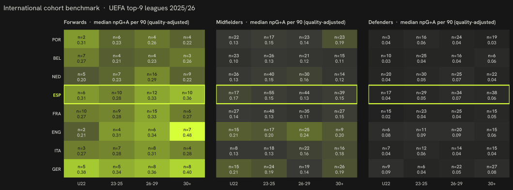
Median non-penalty goals + assists per 90 by country, position group and age cohort, 2025/26; the outlined row is Spain.
Observations
Per capita: rank 4 of 8 · The largest cohort gap: midfielders U22 · Trajectories 2024/25 → 2025/26: mostly stable
Per capita: rank 4 of 8
464 Spanish players on 2025/26 rosters of the nine strongest leagues give 9.54 per million inhabitants, rank 4 of 8. Portugal leads with 25.19, 2.6 times the Spanish density; Netherlands sits one place above with 20.69 from 372 players and a population 2.7 times smaller. Below Spain: France, England, Italy, Germany.
The largest cohort gap: midfielders U22
Counting 2025/26 top-9 players by position group and age cohort and comparing the Spanish count with the median of the other seven peers, the three largest shortfalls are midfielders U22 — 17 Spanish against a peer median of 22; forwards U22 — 6 Spanish against a peer median of 5; forwards 23-25 — 10 Spanish against a peer median of 6. The cohort tables above show the medians behind the counts.
Trajectories 2024/25 → 2025/26: mostly stable
167 Spanish-eligible players had at least 900 minutes in both 2024/25 and 2025/26: forwards 17 (3 up, 9 stable, 5 down); midfielders 85 (20 up, 38 stable, 27 down); defenders 65 (10 up, 48 stable, 7 down). A move counts as up or down when league-adjusted goals + assists per 90 changed by more than 0.05; 95 of 167 stayed within that band. These are season-over-season deltas, not projections.
Cluster archetypes
Cluster archetypes (style projection)
Clusters are fitted on the whole corpus of 2025/26 player-seasons and read here through their Spanish members, K chosen by silhouette score (Rousseeuw, 1987) with scikit-learn (Pedregosa et al., 2011). The label describes the cluster's median footprint; the count is Spanish members of the corpus cluster; names are the Spanish members with the most minutes.
Atlas of forwards 2025/26 in both projections: 46 Spanish-eligible players in colour against a corpus of 924. Bright rings mark the national-team pool (call-up 2024–26, 6 players).Atlas of midfielders 2025/26 in both projections: 178 Spanish-eligible players in colour against a corpus of 2648. Bright rings mark the national-team pool (call-up 2024–26, 24 players).Atlas of defenders 2025/26 in both projections: 129 Spanish-eligible players in colour against a corpus of 1947. Bright rings mark the national-team pool (call-up 2024–26, 14 players).
Forwards
High-assist forwards
1 Spanish of 112 · NT pool 1 · median born 1993
Corpus medians: 0.30 non-penalty goals and 0.21 assists per 90, 33 % of the club's minutes, age 25, 0.15 cards per 90.
Tactical readCreators from the front line — assist rate more than double the forward median on rotation minutes (38 %), scoring at median. Wide forwards and second strikers who feed the box rather than occupy it (Pérez).
Duel-heavy rotation forwards
6 Spanish of 144 · NT pool 1 · median born 2000
ALAdrián LisoBSBorja SainzIRIsaac RomeroOCÓscar Clemente
Corpus medians: 0.30 non-penalty goals and 0.10 assists per 90, 33 % of the club's minutes, age 24, 0.29 cards per 90.
Tactical readRotation forwards whose signature is physical engagement — card rate roughly three times the forward median, a third of minutes, output at median. Pressing and duel-heavy roles rather than finishing (Liso, Sainz, Romero).
High-minutes starting forwards
9 Spanish of 148 · NT pool 2 · median born 1998
NFNacho FerriTMToni MartínezMOMikel OyarzabalJDJorge de Frutos
Corpus medians: 0.30 non-penalty goals and 0.13 assists per 90, 76 % of the club's minutes, age 24, 0.14 cards per 90.
Tactical readEvery-week starters — three quarters of the season's minutes, assist rate about 1.5 times the forward median, scoring at median. Mostly a top-five-league footprint: the first-choice forward who links play as much as he finishes (Ferri, Martínez, Oyarzabal).
Older forwards with moderate playing time
13 Spanish of 142 · NT pool 1 · median born 1992
BIBorja IglesiasJFJorge FélixRMRafa MirKKiké
Corpus medians: 0.28 non-penalty goals and 0.08 assists per 90, 46 % of the club's minutes, age 32, 0.17 cards per 90.
Tactical readExperienced forwards on managed minutes — median age 31, about 40 % of minutes, output at median. The impact or target forward used in rotation (Iglesias, Félix, Mir).
Young low-minute forwards
9 Spanish of 255 · NT pool 0 · median born 2001
ACAntonio CortésPDPablo DuránHAHugo ÁlvarezBZBryan Zaragoza
Corpus medians: 0.27 non-penalty goals and 0.08 assists per 90, 29 % of the club's minutes, age 23, 0.13 cards per 90.
Tactical readThe development tier and the largest forward cluster — median age 23, under 30 % of minutes, output just below median. Where most of the home pool's young forwards sit (Cortés, Durán, Álvarez).
Primary scorers
8 Spanish of 123 · NT pool 1 · median born 2002
HDHugo DuroFTFerran TorresFJFerran Jutglà
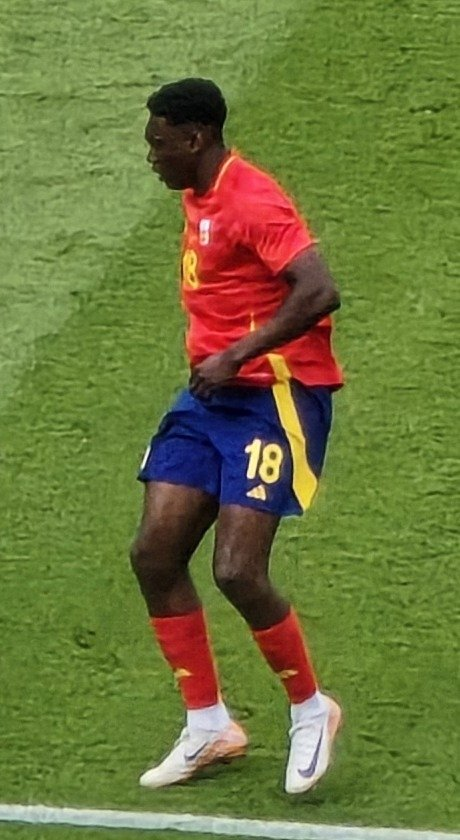
SOSamu Omorodion
Corpus medians: 0.50 non-penalty goals and 0.10 assists per 90, 51 % of the club's minutes, age 25, 0.16 cards per 90.
Tactical readPrimary scorers — non-penalty goal rate nearly double the forward median on starter minutes (56 %). The finishing forward of a first-choice line (Duro, Torres, Jutglà).
Midfielders
High-card-rate midfielders
39 Spanish of 387 · NT pool 4 · median born 2001
OGÓscar Gil
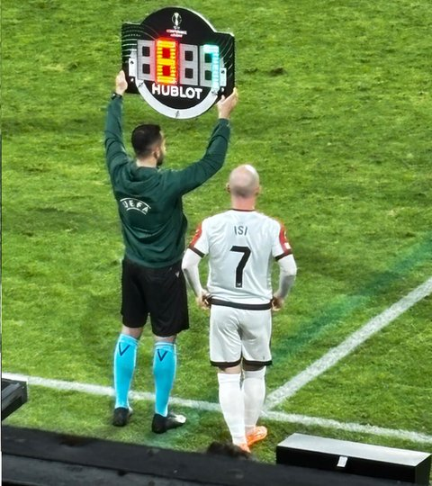
IPIsaac Palazón CamachoPLPol LozanoMMMario Martín
Corpus medians: 0.08 non-penalty goals and 0.08 assists per 90, 38 % of the club's minutes, age 24, 0.33 cards per 90.
Tactical readBall-winning, duel-heavy midfielders — the card rate (about 2.5 times the midfield median) is the defining feature, production at the floor of the group. The destroyer profile, often in a double pivot (Gil, Camacho, Lozano).
Older rotation midfielders
35 Spanish of 425 · NT pool 1 · median born 1994
LTLucas TorróBGBorja GalánRGRubén GarcíaKKoke
Corpus medians: 0.08 non-penalty goals and 0.10 assists per 90, 39 % of the club's minutes, age 30, 0.21 cards per 90.
Tactical readVeteran rotation midfielders — median age 30 on managed minutes (40 %), output at median, card rate above it. Experience kept in the squad rather than on the pitch every week (Torró, Galán, García).
Young low-minute midfielders
37 Spanish of 624 · NT pool 4 · median born 2003
CACarlos ÁlvarezJVJan VirgiliDLDiego LópezMJMateo Joseph
Corpus medians: 0.08 non-penalty goals and 0.09 assists per 90, 29 % of the club's minutes, age 22, 0.17 cards per 90.
Tactical readDevelopment midfielders — the home pool's largest midfield group: median age 22, under a third of minutes, output at median. The pipeline's waiting room (Álvarez, Virgili, López).
Everyday starting midfielders, low scoring output
35 Spanish of 600 · NT pool 5 · median born 1999
AFAleix FebasABAntonio Blanco
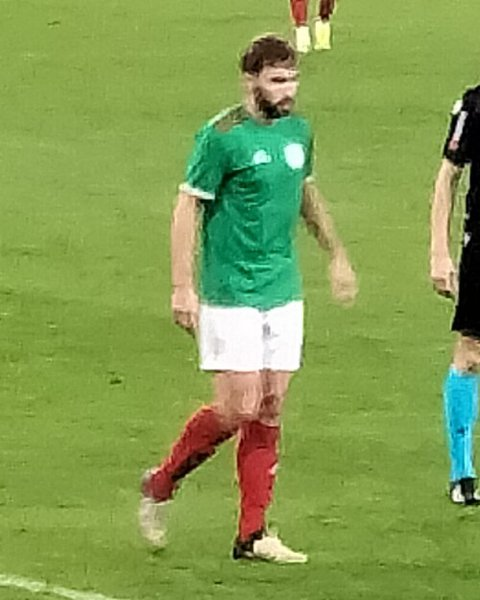
JMJon MoncayolaMZMartín Zubimendi
Corpus medians: 0.08 non-penalty goals and 0.09 assists per 90, 79 % of the club's minutes, age 25, 0.18 cards per 90.
Tactical readThe engine room — nearly 80 % of minutes with median output: holding and box-to-box midfielders whose value is continuity and structure, not numbers (Febas, Blanco, Moncayola).
High-scoring attacking midfielders
12 Spanish of 320 · NT pool 3 · median born 1999
PFPablo FornalsJIJesús ImazAMAlberto MoleiroFAFran Álvarez
Corpus medians: 0.25 non-penalty goals and 0.13 assists per 90, 54 % of the club's minutes, age 24, 0.17 cards per 90.
Tactical readGoal-scoring attacking midfielders — non-penalty goal rate three times the midfield median on starter minutes (56 %). The number 8/10 who arrives in the box (Fornals, Imaz, Moleiro).
High-minutes creative midfielders
20 Spanish of 290 · NT pool 7 · median born 2000
LMLuis MillaAGAleix GarcíaAGÁlex GrimaldoSCSanti Comesaña
Corpus medians: 0.14 non-penalty goals and 0.22 assists per 90, 59 % of the club's minutes, age 24, 0.17 cards per 90.
Tactical readStarting playmakers — assist rate three times the midfield median on 62 % of minutes, scoring nearly double. The creative hub of the middle third (Milla, García, Grimaldo).
Defenders
Everyday starting defenders
21 Spanish of 431 · NT pool 5 · median born 2000
IIglesiasCCatenaMSMujaid Sadick
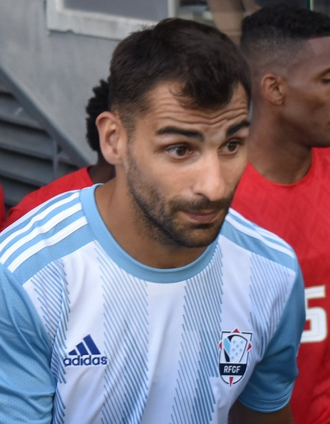
JCJonny Castro
Corpus medians: 0.03 non-penalty goals and 0.03 assists per 90, 84 % of the club's minutes, age 25, 0.18 cards per 90.
Tactical readThe defensive core — 85 % of minutes, output at the DF floor. Availability and continuity are the signal; production is not (Iglesias, Catena, Sadick).
High-card-rate defenders
26 Spanish of 284 · NT pool 1 · median born 2000
JRJacobo RamónPMPablo MaffeoCCarmonaDVDaniel Vivian
Corpus medians: 0.02 non-penalty goals and 0.02 assists per 90, 47 % of the club's minutes, age 24, 0.36 cards per 90.
Tactical readDuel-heavy defenders — card rate 2.5 times the DF median with rotation minutes (46 %). The physical stopper profile (Ramón, Maffeo, Carmona).
Young low-minute defenders
24 Spanish of 424 · NT pool 3 · median born 2003
Corpus medians: 0.02 non-penalty goals and 0.02 assists per 90, 34 % of the club's minutes, age 22, 0.18 cards per 90.
Tactical readDevelopment defenders — median age 22, about a third of minutes, output at the floor. The tier the 23–25 cohort draws from (Martin, Marín, Navarro).
Goal-scoring defenders
14 Spanish of 218 · NT pool 0 · median born 1999
CRCarlos RomeroJJuandeYGYarek GasiorowskiMHMario Hermoso
Corpus medians: 0.10 non-penalty goals and 0.04 assists per 90, 55 % of the club's minutes, age 25, 0.20 cards per 90.
Tactical readSet-piece threats — defenders scoring at five times the DF median on 60 % of minutes. Aerial presence in both boxes (Romero, Juande, Gasiorowski).
Older defenders
28 Spanish of 363 · NT pool 3 · median born 1993
MAMarcos AlonsoAMÁlex MorenoSGSergi GómezJLJosé Luis Gayà
Corpus medians: 0.02 non-penalty goals and 0.02 assists per 90, 44 % of the club's minutes, age 31, 0.20 cards per 90.
Tactical readExperienced defenders on managed minutes — median age 31, 44 % of minutes, output at the floor. Leadership and cover rather than a starting role (Alonso, Moreno, Gómez).
High-assist defenders with high playing time
16 Spanish of 226 · NT pool 2 · median born 1999
MCMarc CucurellaYBYuri BerchicheSGSergio GómezAMArnau Martinez
Corpus medians: 0.04 non-penalty goals and 0.12 assists per 90, 64 % of the club's minutes, age 25, 0.20 cards per 90.
Tactical readAttacking full-backs — assist rate seven times the DF median on starter minutes (65 %). The wide defender whose job ends in the final third (Cucurella, Berchiche, Gómez).
Trajectories
Trajectories 2024/25 → 2025/26 (Spanish-eligible, ≥ 900 minutes in both seasons)
Season-over-season change in goals + assists per 90, league-adjusted. A move counts as up or down beyond ± 0.05; everything inside that band is stable and not listed.
Forwards — 17 players: 3 up, 9 stable, 5 down
Moving up · G+A / 90 adj.
Player
League
Min 2024/25 / 2025/26
Change
FJFerran Jutglà
ESP-La Liga
1714 / 1652
+0.120
TMToni Martínez
ESP-La Liga
1012 / 2714
+0.106
MOMikel Oyarzabal
ESP-La Liga
2250 / 2710
+0.053
Moving down · G+A / 90 adj.
Player
League
Min 2024/25 / 2025/26
Change
APAyoze Pérez
ESP-La Liga
1970 / 1124
−0.189
FTFerran Torres
ESP-La Liga
1106 / 1965
−0.157
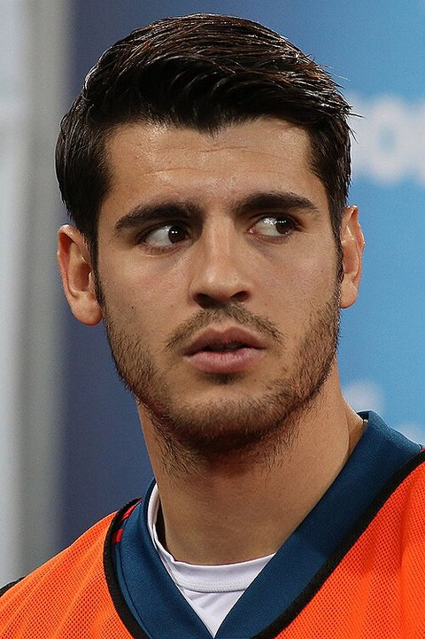
AMÁlvaro Morata
ITA-Serie A
1099 / 930
−0.151
PDPablo Durán
ESP-La Liga
1394 / 1425
−0.118
SOSamu Omorodion
POR-Primeira Liga
2263 / 1402
−0.069
Midfielders — 85 players: 20 up, 38 stable, 27 down
Moving up · G+A / 90 adj.
Player
League
Min 2024/25 / 2025/26
Change
JRJesus Rodríguez
ITA-Serie A
1111 / 1731
+0.227
PFPablo Fornals
ESP-La Liga
1827 / 2848
+0.220
RNRoberto Navarro
ESP-La Liga
1278 / 1307
+0.191
AMAlberto Moleiro
ESP-La Liga
2714 / 2478
+0.181
LYLamine Yamal
ESP-La Liga
2856 / 2262
+0.129
Moving down · G+A / 90 adj.
Player
League
Min 2024/25 / 2025/26
Change
OSOihan Sancet
ESP-La Liga
1620 / 1788
−0.329
ABÁlex Berenguer
ESP-La Liga
2339 / 2154
−0.174
ABÁlex Baena
ESP-La Liga
2595 / 1560
−0.172
JSJuanlu Sánchez
ESP-La Liga
1722 / 1990
−0.155
MRMarc Roca
ESP-La Liga
906 / 2026
−0.146
Defenders — 65 players: 10 up, 48 stable, 7 down
Moving up · G+A / 90 adj.
Player
League
Min 2024/25 / 2025/26
Change
AVÁlex Valle
ITA-Serie A
1030 / 2026
+0.139
AMAlberto Moreno
ITA-Serie A
1727 / 1233
+0.119
CRCarlos Romero
ESP-La Liga
2554 / 3191
+0.103
CCarmona
ESP-La Liga
2942 / 2565
+0.093
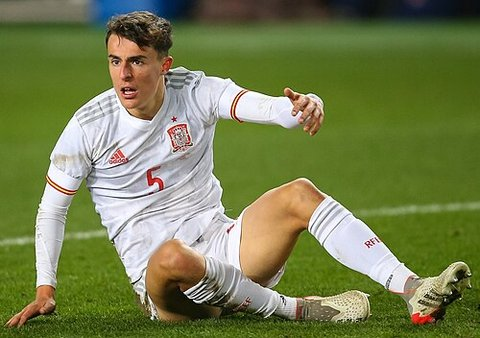
AFAlejandro Francés
ESP-La Liga
1173 / 1116
+0.087
Moving down · G+A / 90 adj.
Player
League
Min 2024/25 / 2025/26
Change
GMGerard Martín
ESP-La Liga
1038 / 2119
−0.144
PPPedro Porro
ENG-Premier League
2610 / 2796
−0.132
EGEric García
ESP-La Liga
1566 / 2721
−0.102
JRJavi Rodríguez
ESP-La Liga
2514 / 2558
−0.077
KSKike Salas
ESP-La Liga
2238 / 2203
−0.059
Why does the train leave?
Why does the train leave?
Four exhibits comparing Spain with 7 peer countries: youth exposure at home, export route, how exports fare, and who made it.
Exhibit A — youth exposure at home
Share of a domestic league's total minutes played by its own nationals aged 21 or under, 2025/26.
* Σ minutes of players with the league country's nationality and age ≤ 21 at the season's start ÷ Σ minutes of all players in the league, 2025/26. Under-23 shares: NED 24.2 %, FRA 14.4 %, BEL 16.4 %, GER 10.9 %, POR 9.1 %, ESP 16.9 %, ENG 6.4 %, ITA 7.3 %. A league without a bar is not covered by FBref.
Exhibit B — export route
For every peer-country player on a 2026/27 top-9 roster: the age at the first top-9 season (full roster, and recent entrants only) and, for recent entrants, the league of the season before it. Not informative for this nation: La Liga and every peer's own league are themselves top-9 leagues, so the domestic / top-9 split has no content here; the exhibit is kept for comparability with other nations.
Spanish exports: 368 players, median export age 22 (recent entrants 98, median 21.5), 0 % of the recent ones straight from the La Liga*.
Country
n
Recent
Export age (all)
Export age (recent)
Domestic
Stepping stone
Other top-9
Not covered
Censored
ESP Spain
368
98
22
21.5
0 %
0 %
0 %
100 %
33 %
FRA France
313
107
21
21
0 %
2 %
0 %
98 %
34 %
GER Germany
208
63
22.5
22
0 %
57 %
0 %
43 %
36 %
ITA Italy
144
36
21
22
0 %
0 %
0 %
100 %
32 %
ENG England
154
29
21
20
0 %
0 %
0 %
100 %
39 %
NED Netherlands
268
78
20
20.5
0 %
3 %
0 %
97 %
29 %
POR Portugal
176
40
20.5
20.5
0 %
5 %
0 %
95 %
36 %
BEL Belgium
208
55
20
20
0 %
0 %
0 %
100 %
32 %
* Export age = age at the first season in any headline league, history back to 2020/21; a first appearance already in 2020/21 is censored. Recent entrants: first top-9 season 2025/26 or 2026/27, the only ones whose previous season lies inside the fetched window (2024/25 onwards for peer domestic leagues). Stepping-stone leagues: NED-Eredivisie, BEL-Pro League, POR-Primeira Liga, TUR-Süper Lig, GER-2. Bundesliga. Not covered: no earlier row in the data.
Exhibit C — how the exports fare
Peer-country players at a top-9 club in 2025/26: median share of the club's minutes, and the club's strength within its league.
ESP
Spain n = 464
60 %
POR
Portugal n = 268
60 %
BEL
Belgium n = 253
59 %
ENG
England n = 208
55 %
GER
Germany n = 262
50 %
NED
Netherlands n = 372
48 %
FRA
France n = 395
47 %
ITA
Italy n = 201
45 %
* Minutes share = player minutes ÷ (club matches × 90), 2025/26, one row per player-season. Club strength proxy: goals-scored percentile within league — clubs ranked by the goals their own roster scored that season (ClubElo was unreachable at run time). Both are medians over the country's exports; n per country in the bars.
Exhibit D — profile of those who made it
Goals + assists per 90, league-adjusted, in 2025/26 by the tier of the player's own league: domestic, stepping stone, top-9, or another covered league. Spanish count and median against the median of the peer countries' values. Not informative for this nation: La Liga and every peer's own league are themselves top-9 leagues, so the domestic / top-9 split has no content here; the exhibit is kept for comparability with other nations.
Profile table by tier and position group
Tier
Group
ESP n
ESP median
Peer median n
Peer median
stepping-stone league
FW
0
—
2
0.22
stepping-stone league
MF
1
0.09
4
0.09
stepping-stone league
DF
1
0.08
1.5
0.03
top-9 league
FW
38
0.31
22
0.28
top-9 league
MF
153
0.14
82
0.15
top-9 league
DF
117
0.06
62
0.05
other covered league
FW
8
0.13
4.5
0.14
other covered league
MF
24
0.10
5
0.08
other covered league
DF
11
0.04
7
0.03
* Tier = the league of the player's own 2025/26 season. Peer median n and peer median are medians across the peer countries present in that tier and group; a tier a country has no player in is absent, not zero.
Exhibit E — where Spanish exports go
Of the 353 mapped Spanish players, 126 play outside the La Liga.
* Buckets by the league of the player's own 2025/26 season; a player is counted once per position group, like everywhere else on the page, so one with rows in two groups counts in each; the number in front of each bar is the player count, the median multiplier is the bucket's median league multiplier. Sideways: destination league multiplier <= the domestic league's multiplier.
F · The 2026 FIFA World Cup squad by league tier
Where the 26 players named to the 2026 FIFA World Cup squad played in 2025/26, next to Germany, France, England, Netherlands, Belgium, Portugal. Tier = the league of the player's most-minutes 2025/26 row.
Minutes, multipliers and age cohorts by country
Country
Median minutes
Median multiplier
U22
23–25
26–29
30+
ESP Spain
2181
0.807
3
8
7
8
GER Germany
2208.5
0.788
2
8
4
12
FRA France
2316
0.807
3
7
10
6
ENG England
2199
1.000
2
8
9
7
NED Netherlands
1903
1.000
1
7
11
7
BEL Belgium
2034
0.807
4
8
5
9
POR Portugal
2226
0.807
1
6
11
8
* 8 squad players have no 2025/26 row in the fetched leagues and are counted as unmatched.
Historical analogs
Historical analogs
For each showcase player the finder takes the nearest 5 player-seasons at the same age across the whole corpus of every fetched league — the 9 headline leagues back to 2020/21, the rest from 2024/25 — all nationalities. Distance is computed on three standardised features: npG+A/90 (quality-adjusted), minutes, league multiplier. For every analog the following seasons are shown as they happened. Description, not prediction: the reader sees the spread of paths; the method imposes none.
Target
Ferran Torres
FW · age 26 · ESP-La Liga 2025/26 · 1965 min · 0.57 npG+A/90 quality
Nearest 5 at the same age
5 nearest analogs and what followed
1Christopher NkunkuFRA
GER-Bundesliga 2022/23 · 1897 min · 0.56 npG+A/90 · d = 0.16
Followed by:
2024/25
ENG-Premier League · 921 min · 0.36
2025/26
ITA-Serie A · 1356 min · 0.29
2Georges MikautadzeGEO
ESP-La Liga 2025/26 · 2109 min · 0.56 npG+A/90 · d = 0.19
No later season in the corpus.
3Ademola LookmanNGA
ITA-Serie A 2022/23 · 1729 min · 0.57 npG+A/90 · d = 0.39
Followed by:
2023/24
ITA-Serie A · 1894 min · 0.60
2024/25
ITA-Serie A · 2247 min · 0.51
2025/26
ITA-Serie A · 1412 min · 0.30
4Nikola KrstovićMNE
ITA-Serie A 2025/26 · 1791 min · 0.53 npG+A/90 · d = 0.44
No later season in the corpus.
5Victor OsimhenNGA
ITA-Serie A 2023/24 · 1982 min · 0.50 npG+A/90 · d = 0.63
Followed by:
2024/25
TUR-Süper Lig · 2372 min · 0.40
2025/26
TUR-Süper Lig · 1707 min · 0.38
Target
Roberto Férnandez
FW · age 24 · ESP-La Liga 2025/26 · 2382 min · 0.30 npG+A/90 quality
Nearest 5 at the same age
5 nearest analogs and what followed
1Benedict HollerbachGER
GER-Bundesliga 2024/25 · 2540 min · 0.31 npG+A/90 · d = 0.25
Followed by:
2025/26
GER-Bundesliga · 872 min · 0.35
2Samuel ChukwuezeNGA
ESP-La Liga 2022/23 · 2339 min · 0.34 npG+A/90 · d = 0.37
Followed by:
2023/24
ITA-Serie A · 1017 min · 0.23
2024/25
ITA-Serie A · 925 min · 0.28
2025/26
ENG-Premier League · 1079 min · 0.42
3Lorenzo ColomboITA
ITA-Serie A 2025/26 · 2326 min · 0.25 npG+A/90 · d = 0.44
No later season in the corpus.
4Nikola KrstovićMNE
ITA-Serie A 2023/24 · 2373 min · 0.25 npG+A/90 · d = 0.45
Followed by:
2024/25
ITA-Serie A · 3057 min · 0.35
2025/26
ITA-Serie A · 1791 min · 0.53
5Nicolás GonzálezARG
ITA-Serie A 2021/22 · 2357 min · 0.34 npG+A/90 · d = 0.48
Followed by:
2022/23
ITA-Serie A · 1354 min · 0.29
2023/24
ITA-Serie A · 1913 min · 0.40
2024/25
ITA-Serie A · 1750 min · 0.19
2025/26
ESP-La Liga · 1448 min · 0.21
Target
Mikel Oyarzabal
FW · age 29 · ESP-La Liga 2025/26 · 2710 min · 0.33 npG+A/90 quality
Nearest 5 at the same age
5 nearest analogs and what followed
1Iñaki WilliamsGHA
ESP-La Liga 2022/23 · 2836 min · 0.31 npG+A/90 · d = 0.21
Followed by:
2023/24
ESP-La Liga · 2844 min · 0.32
2024/25
ESP-La Liga · 2652 min · 0.33
2025/26
ESP-La Liga · 2157 min · 0.23
2Tim KleindienstGER
GER-Bundesliga 2023/24 · 2869 min · 0.33 npG+A/90 · d = 0.23
Followed by:
2024/25
GER-Bundesliga · 2737 min · 0.52
3Ché AdamsSCO
ITA-Serie A 2024/25 · 2652 min · 0.35 npG+A/90 · d = 0.29
Followed by:
2025/26
ITA-Serie A · 1893 min · 0.32
4Vedat MuriqiKVX
ESP-La Liga 2022/23 · 2937 min · 0.34 npG+A/90 · d = 0.32
Followed by:
2023/24
ESP-La Liga · 2327 min · 0.28
2024/25
ESP-La Liga · 2058 min · 0.27
2025/26
ESP-La Liga · 3128 min · 0.42
5Jorge de FrutosESP
ESP-La Liga 2025/26 · 2463 min · 0.31 npG+A/90 · d = 0.36
No later season in the corpus.
Target
Borja Iglesias
FW · age 33 · ESP-La Liga 2025/26 · 1900 min · 0.42 npG+A/90 quality
Nearest 5 at the same age
5 nearest analogs and what followed
1Max KruseGER
GER-Bundesliga 2020/21 · 1629 min · 0.45 npG+A/90 · d = 0.41
Followed by:
2021/22
GER-Bundesliga · 1270 min · 0.32
2021/22
GER-Bundesliga · 1128 min · 0.28
2Marius BülterGER
GER-Bundesliga 2025/26 · 1597 min · 0.39 npG+A/90 · d = 0.50
No later season in the corpus.
3Ciro ImmobileITA
ITA-Serie A 2022/23 · 2219 min · 0.41 npG+A/90 · d = 0.51
Followed by:
2023/24
ITA-Serie A · 1652 min · 0.23
2024/25
TUR-Süper Lig · 2011 min · 0.24
2025/26
FRA-Ligue 1 · 705 min · 0.34
4Willian JoséBRA
ESP-La Liga 2023/24 · 1971 min · 0.49 npG+A/90 · d = 0.56
No later season in the corpus.
5Leonardo PavolettiITA
ITA-Serie A 2020/21 · 1584 min · 0.37 npG+A/90 · d = 0.66
Followed by:
2021/22
ITA-Serie A · 1518 min · 0.34
2023/24
ITA-Serie A · 628 min · 0.44
Target
Nacho Ferri
FW · age 22 · BEL-Pro League 2025/26 · 2891 min · 0.23 npG+A/90 quality
Nearest 5 at the same age
5 nearest analogs and what followed
1Thom van BergenNED
NED-Eredivisie 2025/26 · 2966 min · 0.20 npG+A/90 · d = 0.39
Followed by:
2026/27
NED-Eredivisie · 540 min · 0.27
2Hélio VarelaCPV
POR-Primeira Liga 2023/24 · 2743 min · 0.20 npG+A/90 · d = 0.40
No later season in the corpus.
3Matthis AblineFRA
FRA-Ligue 1 2024/25 · 2768 min · 0.25 npG+A/90 · d = 0.50
Followed by:
2025/26
FRA-Ligue 1 · 2494 min · 0.26
4Matija FriganCRO
BEL-Pro League 2024/25 · 2665 min · 0.28 npG+A/90 · d = 0.55
No later season in the corpus.
5DaniloBRA
NED-Eredivisie 2020/21 · 2644 min · 0.28 npG+A/90 · d = 0.60
Followed by:
2022/23
NED-Eredivisie · 1336 min · 0.35
Target
Lamine Yamal
MF · age 19 · ESP-La Liga 2025/26 · 2262 min · 0.59 npG+A/90 quality
Nearest 5 at the same age
5 nearest analogs and what followed
1Florian WirtzGER
GER-Bundesliga 2021/22 · 1851 min · 0.49 npG+A/90 · d = 1.01
Followed by:
2022/23
GER-Bundesliga · 1090 min · 0.43
2023/24
GER-Bundesliga · 2372 min · 0.51
2024/25
GER-Bundesliga · 2351 min · 0.48
2025/26
ENG-Premier League · 2378 min · 0.28
2Mathys TelFRA
GER-Bundesliga 2023/24 · 1050 min · 0.52 npG+A/90 · d = 1.72
Followed by:
2024/25
ENG-Premier League · 911 min · 0.33
2025/26
ENG-Premier League · 1349 min · 0.29
3Jamal MusialaGER
GER-Bundesliga 2021/22 · 1465 min · 0.36 npG+A/90 · d = 2.22
Followed by:
2022/23
GER-Bundesliga · 2198 min · 0.56
2023/24
GER-Bundesliga · 1755 min · 0.46
2024/25
GER-Bundesliga · 1798 min · 0.43
2025/26
GER-Bundesliga · 683 min · 0.37
4Julio EncisoPAR
ENG-Premier League 2022/23 · 806 min · 0.43 npG+A/90 · d = 2.57
Followed by:
2023/24
ENG-Premier League · 475 min · 0.27
2024/25
ENG-Premier League · 869 min · 0.37
2025/26
FRA-Ligue 1 · 1883 min · 0.21
5Gio ReynaUSA
GER-Bundesliga 2020/21 · 1976 min · 0.27 npG+A/90 · d = 2.76
Followed by:
2022/23
GER-Bundesliga · 625 min · 0.49
2025/26
GER-Bundesliga · 520 min · 0.16
Target
Martín Zubimendi
MF · age 27 · ENG-Premier League 2025/26 · 2992 min · 0.19 npG+A/90 quality
Nearest 5 at the same age
5 nearest analogs and what followed
1Tomáš SoučekCZE
ENG-Premier League 2021/22 · 3062 min · 0.18 npG+A/90 · d = 0.14
Followed by:
2022/23
ENG-Premier League · 2815 min · 0.17
2023/24
ENG-Premier League · 2870 min · 0.27
2024/25
ENG-Premier League · 2567 min · 0.32
2025/26
ENG-Premier League · 2200 min · 0.21
2Josh BrownhillENG
ENG-Premier League 2021/22 · 2955 min · 0.16 npG+A/90 · d = 0.27
Followed by:
2023/24
ENG-Premier League · 2252 min · 0.23
3RodriESP
ENG-Premier League 2022/23 · 2911 min · 0.24 npG+A/90 · d = 0.43
Followed by:
2023/24
ENG-Premier League · 2931 min · 0.45
2025/26
ENG-Premier League · 1511 min · 0.12
4John McGinnSCO
ENG-Premier League 2020/21 · 3330 min · 0.20 npG+A/90 · d = 0.46
Followed by:
2021/22
ENG-Premier League · 3090 min · 0.20
2022/23
ENG-Premier League · 2693 min · 0.15
2023/24
ENG-Premier League · 2999 min · 0.28
2024/25
ENG-Premier League · 2223 min · 0.21
5Declan RiceENG
ENG-Premier League 2025/26 · 3094 min · 0.25 npG+A/90 · d = 0.55
No later season in the corpus.
Target
Víctor Muñoz
MF · age 23 · ESP-La Liga 2025/26 · 2656 min · 0.20 npG+A/90 quality
Nearest 5 at the same age
5 nearest analogs and what followed
1Nathaniel BrownGER
GER-Bundesliga 2025/26 · 2656 min · 0.20 npG+A/90 · d = 0.10
No later season in the corpus.
2Ritsu DoanJPN
GER-Bundesliga 2020/21 · 2768 min · 0.17 npG+A/90 · d = 0.28
Followed by:
2021/22
NED-Eredivisie · 1510 min · 0.21
2022/23
GER-Bundesliga · 2424 min · 0.25
2023/24
GER-Bundesliga · 2246 min · 0.26
2024/25
GER-Bundesliga · 2862 min · 0.36
3Arthur AttaFRA
ITA-Serie A 2025/26 · 2557 min · 0.22 npG+A/90 · d = 0.30
No later season in the corpus.
4Máximo PerroneARG
ITA-Serie A 2025/26 · 2742 min · 0.18 npG+A/90 · d = 0.30
No later season in the corpus.
5PedriESP
ESP-La Liga 2024/25 · 2879 min · 0.21 npG+A/90 · d = 0.31
Followed by:
2025/26
ESP-La Liga · 2104 min · 0.31
Target
Luis Milla
MF · age 32 · ESP-La Liga 2025/26 · 3271 min · 0.22 npG+A/90 quality
Nearest 5 at the same age
5 nearest analogs and what followed
1Daniel ParejoESP
ESP-La Liga 2020/21 · 3112 min · 0.17 npG+A/90 · d = 0.48
Followed by:
2021/22
ESP-La Liga · 2704 min · 0.25
2022/23
ESP-La Liga · 3285 min · 0.12
2023/24
ESP-La Liga · 2580 min · 0.14
2024/25
ESP-La Liga · 2273 min · 0.16
2Sergi DarderESP
ESP-La Liga 2024/25 · 2744 min · 0.20 npG+A/90 · d = 0.73
Followed by:
2025/26
ESP-La Liga · 2680 min · 0.16
3Darko LazovićSRB
ITA-Serie A 2021/22 · 2766 min · 0.20 npG+A/90 · d = 0.73
Followed by:
2022/23
ITA-Serie A · 2242 min · 0.26
2023/24
ITA-Serie A · 1928 min · 0.16
2024/25
ITA-Serie A · 1459 min · 0.19
4Luis RiojaESP
ESP-La Liga 2024/25 · 2831 min · 0.16 npG+A/90 · d = 0.82
Followed by:
2025/26
ESP-La Liga · 2624 min · 0.22
5Rani KhediraTUN
GER-Bundesliga 2025/26 · 2830 min · 0.16 npG+A/90 · d = 0.82
No later season in the corpus.
Target
Aitor Ruibal
DF · age 30 · ESP-La Liga 2025/26 · 1808 min · 0.18 npG+A/90 quality
Nearest 5 at the same age
5 nearest analogs and what followed
1Lucas VázquezESP
ESP-La Liga 2020/21 · 1848 min · 0.19 npG+A/90 · d = 0.12
Followed by:
2021/22
ESP-La Liga · 1833 min · 0.09
2022/23
ESP-La Liga · 1144 min · 0.19
2023/24
ESP-La Liga · 1419 min · 0.31
2024/25
ESP-La Liga · 2189 min · 0.15
2Ramy BensebainiALG
GER-Bundesliga 2024/25 · 2022 min · 0.19 npG+A/90 · d = 0.30
Followed by:
2025/26
GER-Bundesliga · 1530 min · 0.17
3Alfonso PedrazaESP
ESP-La Liga 2025/26 · 1689 min · 0.13 npG+A/90 · d = 0.44
No later season in the corpus.
4Dani CarvajalESP
ESP-La Liga 2021/22 · 1551 min · 0.13 npG+A/90 · d = 0.54
Followed by:
2022/23
ESP-La Liga · 1784 min · 0.06
2023/24
ESP-La Liga · 2171 min · 0.18
2024/25
ESP-La Liga · 609 min · 0.06
2025/26
ESP-La Liga · 977 min · 0.07
5Jeremy ToljanGER
ITA-Serie A 2023/24 · 2083 min · 0.14 npG+A/90 · d = 0.56
Followed by:
2025/26
ESP-La Liga · 3164 min · 0.10
Target
Pau Cubarsí
DF · age 19 · ESP-La Liga 2025/26 · 2703 min · 0.03 npG+A/90 quality
Nearest 5 at the same age
5 nearest analogs and what followed
1Leny YoroFRA
FRA-Ligue 1 2023/24 · 2673 min · 0.04 npG+A/90 · d = 0.69
Followed by:
2024/25
ENG-Premier League · 1165 min · 0.03
2025/26
ENG-Premier League · 1740 min · 0.02
2Abdoul CoulibalyGER
GER-Bundesliga 2025/26 · 2120 min · 0.04 npG+A/90 · d = 0.78
No later season in the corpus.
3Luka VuškovićCRO
GER-Bundesliga 2025/26 · 2442 min · 0.12 npG+A/90 · d = 0.84
No later season in the corpus.
4Iván FresnedaESP
ESP-La Liga 2022/23 · 1743 min · 0.01 npG+A/90 · d = 1.29
Followed by:
2024/25
POR-Primeira Liga · 961 min · 0.14
2025/26
POR-Primeira Liga · 1596 min · 0.03
5Jorne SpileersBEL
BEL-Pro League 2023/24 · 2159 min · 0.03 npG+A/90 · d = 1.35
Followed by:
2024/25
BEL-Pro League · 503 min · 0.05
2025/26
BEL-Pro League · 1202 min · 0.04
Target
Pedro Porro
DF · age 27 · ENG-Premier League 2025/26 · 2796 min · 0.09 npG+A/90 quality
Nearest 5 at the same age
5 nearest analogs and what followed
1Trevoh ChalobahENG
ENG-Premier League 2025/26 · 2783 min · 0.09 npG+A/90 · d = 0.02
No later season in the corpus.
2Matt TargettENG
ENG-Premier League 2021/22 · 2871 min · 0.06 npG+A/90 · d = 0.23
Followed by:
2022/23
ENG-Premier League · 610 min · 0.01
3James JustinENG
ENG-Premier League 2024/25 · 2912 min · 0.11 npG+A/90 · d = 0.23
Followed by:
2025/26
ENG-Premier League · 1901 min · 0.12
4Victor LindelöfSWE
ENG-Premier League 2020/21 · 2585 min · 0.07 npG+A/90 · d = 0.32
Followed by:
2021/22
ENG-Premier League · 2355 min · 0.07
2022/23
ENG-Premier League · 1365 min · 0.01
2023/24
ENG-Premier League · 1328 min · 0.12
2024/25
ENG-Premier League · 704 min · 0.03
5Diogo DalotPOR
ENG-Premier League 2025/26 · 2614 min · 0.12 npG+A/90 · d = 0.35
No later season in the corpus.
Target
Eric García
DF · age 25 · ESP-La Liga 2025/26 · 2721 min · 0.05 npG+A/90 quality
Nearest 5 at the same age
5 nearest analogs and what followed
1Loïc BadeFRA
ESP-La Liga 2024/25 · 2686 min · 0.05 npG+A/90 · d = 0.08
Followed by:
2025/26
GER-Bundesliga · 1653 min · 0.02
2Sergi CardonaESP
ESP-La Liga 2023/24 · 2814 min · 0.07 npG+A/90 · d = 0.20
Followed by:
2024/25
ESP-La Liga · 2945 min · 0.16
2025/26
ESP-La Liga · 1970 min · 0.15
3Nico SchlotterbeckGER
GER-Bundesliga 2023/24 · 2859 min · 0.06 npG+A/90 · d = 0.22
Followed by:
2024/25
GER-Bundesliga · 1982 min · 0.12
2025/26
GER-Bundesliga · 2520 min · 0.14
4Moussa NiakhatéSEN
GER-Bundesliga 2020/21 · 2866 min · 0.06 npG+A/90 · d = 0.22
Followed by:
2021/22
GER-Bundesliga · 2567 min · 0.05
2022/23
ENG-Premier League · 1163 min · 0.01
2023/24
ENG-Premier League · 1460 min · 0.07
2024/25
FRA-Ligue 1 · 2726 min · 0.00
5TutaBRA
GER-Bundesliga 2023/24 · 2600 min · 0.07 npG+A/90 · d = 0.22
Followed by:
2024/25
GER-Bundesliga · 2274 min · 0.08
Target
Carlos Romero
DF · age 25 · ESP-La Liga 2025/26 · 3191 min · 0.17 npG+A/90 quality
Nearest 5 at the same age
5 nearest analogs and what followed
1Pau TorresESP
ESP-La Liga 2021/22 · 2855 min · 0.12 npG+A/90 · d = 0.61
Followed by:
2022/23
ESP-La Liga · 3054 min · 0.02
2023/24
ENG-Premier League · 2464 min · 0.08
2024/25
ENG-Premier League · 2020 min · 0.02
2025/26
ENG-Premier League · 1676 min · 0.02
2Nahuel MolinaARG
ESP-La Liga 2022/23 · 2867 min · 0.12 npG+A/90 · d = 0.61
Followed by:
2023/24
ESP-La Liga · 1852 min · 0.18
2024/25
ESP-La Liga · 1590 min · 0.10
2025/26
ESP-La Liga · 1331 min · 0.15
3Strahinja PavlovićSRB
ITA-Serie A 2025/26 · 2869 min · 0.13 npG+A/90 · d = 0.62
No later season in the corpus.
4Gianluca ManciniITA
ITA-Serie A 2020/21 · 2852 min · 0.13 npG+A/90 · d = 0.63
Followed by:
2021/22
ITA-Serie A · 2878 min · 0.01
2022/23
ITA-Serie A · 2858 min · 0.07
2023/24
ITA-Serie A · 2869 min · 0.11
2024/25
ITA-Serie A · 3143 min · 0.04
5Pablo MaffeoESP
ESP-La Liga 2021/22 · 2945 min · 0.10 npG+A/90 · d = 0.68
Followed by:
2022/23
ESP-La Liga · 2975 min · 0.12
2023/24
ESP-La Liga · 1454 min · 0.12
2024/25
ESP-La Liga · 2368 min · 0.05
2025/26
ESP-La Liga · 2662 min · 0.08
* Corpus: player-seasons with at least 450 minutes in any fetched league — headline leagues 2020/21 → 2026/27, the other leagues 2024/25 → 2026/27; the target's own seasons are excluded. A path that ends early means the player left the covered leagues, not that the career ended.
Player index
Player index
Every Spanish-eligible player with a complete 2025/26 season in a covered league — 353 players — with the numbers behind the atlases. Names with a card link to it.
* 2025/26 season, at least 450 minutes; the club is the one with the most minutes that season. NT = national-team call-up 2024–26.
How it is built, validated and where it stops
Data sources
FBref (via soccerdata): player season tables (standard, playing time) for the 9 headline leagues, the La Liga, the peer domestic leagues and the German second tier; the country page "Players from Spain" for pool discovery; the nationality column for peer counts
Wikipedia: national-team squad tables (2026 FIFA World Cup, UEFA Euro 2024, UEFA European Under-21 Championship 2025) for the call-up flag
Wikidata / Wikimedia Commons: player portraits (P18) matched on name, citizenship and date of birth; credits in the footer
UEFA association coefficients (via Wikipedia) as the league-strength source, ClubElo being unreachable at run time
Eurostat: population estimates, 2024
From raw tables to a feature vector
One 2025/26 player-season, traced from its raw FBref row to the five-number vector the rest of this chapter builds on: Luis Milla, the Spanish player with the most 2025/26 minutes among those who cleared the inclusion floor.
Luis Milla: raw row and feature row
Raw FBref row, 2025/26
Column
Value
league
ESP-La Liga
season
2025-2026
team
Getafe
player
Luis Milla
nation
ESP
pos
MF
born
1994
age
30
mp
37
min
3271
gls
1
ast
10
pk
0
crdy
5
crdr
1
Feature row after the pipeline
Feature
Raw
Shrunk
Quality-adjusted
Z-score
npg_p90
0.028
0.040
0.032
−0.68
ast_p90
0.275
0.237
0.191
2.39
min_share
0.956
0.956
0.956
1.86
age
30.000
30.000
30.000
1.18
cards_p90
0.193
0.200
0.200
−0.16
Six wrangling checks turn the raw rows above into the pool used everywhere else in this report, recomputed on every run:
Women's entries filtered: 0 entries.
Namesakes in the pool: 295 players.
Pool players without season tables: 2700 players.
Split-season rows collapsed: 441 rows.
Unmatched call-up names: 70 names.
Missing birth years: 0 rows.
Unjoined goalkeeper rows: 12 rows.
La Liga rows without a nationality: 3 rows.
The full log, with the recorded pipeline incidents, is in the data-quality log below.
Every position group shares the same five-number vector (spec §5): a raw column becomes a per-90 rate, shrunk toward its league-season median (Efron and Morris, 1975), then multiplied by the league quality projection.
npg_p90 — non-penalty goals per 90 minutes: penalties are shot quality, not open-play production, and inflate a taker's raw goal count for reasons that have nothing to do with how the player creates chances
ast_p90 — assists per 90 minutes: the direct creative complement to non-penalty goals, on the same basic table for every league in the corpus
min_share — minutes played ÷ (club matches × 90): the coach's own read of the player, sturdier than counting appearances (see below)
age — age at the season's start (start year − birth year): median production still shifts by age band in this corpus (see below), so it stays as its own axis rather than being folded into anything else
cards_p90 — yellow + 2 × red cards per 90 minutes: a discipline signal folded into one rate because red cards alone are too sparse a signal on their own (see below)
Five candidates considered for the 2025/26 vector and what the data said about each, corpus-wide (every fetched nationality, the same population the rest of this chapter describes):
Candidate
Statistic
Value
Decision
gls_p90
Correlation with npg_p90
0.973
Replaced by npg_p90
mp
Correlation with minutes played
0.844
Replaced by minutes share
crdr_p90
Share of player-seasons with zero red cards
0.854
Folded into cards
age
Spread of median goals + assists per 90 across age bands (max − min band)
0.028
Kept
born
Share of player-seasons missing a birth year
0.003
Kept — required for the player key
Despite the high correlation, goals and non-penalty goals diverge for the players who take penalties: Nabil Touaizi (POR-Primeira Liga, 100 %); Yohan Croizet (HUN-NB I, 100 %); Luca Zuffi (SUI-Super League, 100 %). Appearances (mp) correlate strongly with minutes but not perfectly — a substitute cameo counts the same as 90 minutes started, which is why minutes share, not appearances, measures playing time here. Median goals + assists per 90 by age band runs from 0.147 (30+) – 0.175 (23-25).
The picture behind league adjustment: the same raw rate reads very differently depending on the league it was earned in.
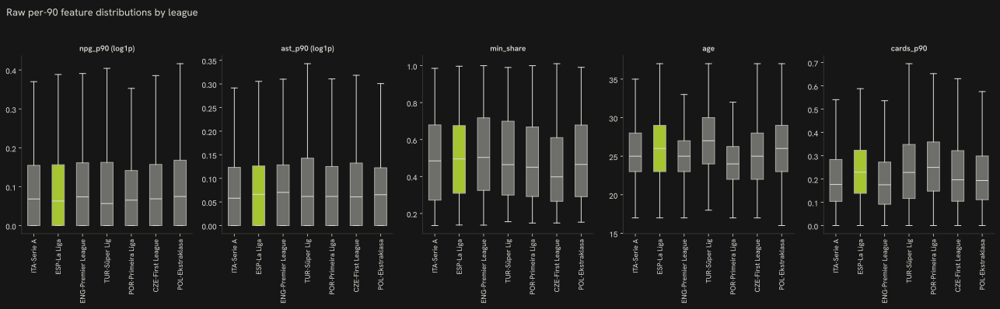
What shrinkage does to a low-minute player: at the inclusion floor the league median still carries most of the weight; Ansu Fati's rate moves the most of any Spanish-eligible player this season.
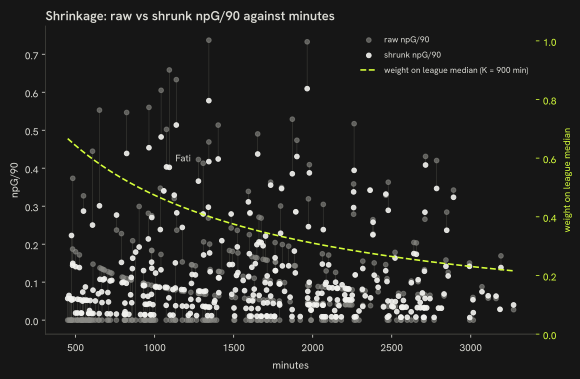
League multipliers (quality projection)
npG/90_quality = npG/90_shrunk × m_league
League
Multiplier
ENG-Premier League
1.000
ITA-Serie A
0.856
ESP-La Liga
0.807
GER-Bundesliga
0.788
FRA-Ligue 1
0.666
POR-Primeira Liga
0.630
BEL-Pro League
0.573
NED-Eredivisie
0.510
TUR-Süper Lig
0.484
GER-2. Bundesliga
0.473
POL-Ekstraklasa
0.438
CZE-First League
0.434
NOR-Eliteserien
0.374
DEN-Superliga
0.371
SUI-Super League
0.293
AUT-Bundesliga
0.268
HUN-NB I
0.265
CRO-HNL
0.249
SVK-Super Liga
0.217
Method: uefa_coefficient. ClubElo unavailable at run time (HTTP error); fell back to Wikipedia's UEFA men's association coefficient, current 5-year ranking (2022–23–2026–27 seasons). tier-1 multiplier = coef[country] / max(coef); tier-2 multiplier = 0.6 * tier-1 multiplier of the same country (stated assumption, not derived from data). Strongest tier-1 country = 1.00. The sensitivity analysis below shows the ranking's robustness to ±20 % on any one multiplier.
League strength: two estimates
A season in one league is not automatically worth the same as a season in another: goals and assists come easier in some competitions than others. This section works out an exchange rate between leagues by watching the same players before and after they change league, the way a manager judges a new signing by how his output changes at the new club.
Full method, figures and diagnostics
How much is a La Liga season worth in Premier League terms? The UEFA multiplier above answers that from countries' continental results; this model answers the same question from the players who actually changed leagues.
Movers — 2125 players observed in at least two leagues across 8108 qualifying player-seasons — anchor the model, since only a player's own before/after change of league separates their level from the league's scoring environment. A hierarchical Poisson model of non-penalty goals plus assists per 90 (Gelman et al., 2013) fits a league effect and a player effect together, sampled with NUTS (Hoffman and Gelman, 2014) in PyMC (Abril-Pla et al., 2023) and diagnosed with ArviZ (Kumar et al., 2019). Partial pooling keeps the league effects regularised while leaving player effects close to unpooled, the same within-subject logic behind plus-minus and RAPM ratings elsewhere in team sports (Kharrat, McHale and Peña, 2020; Hvattum, 2019).
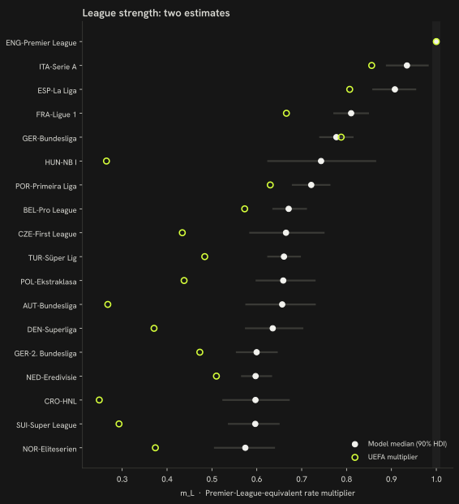
In these terms, a La Liga season converts to 0.91 of a Premier League one (90 % HDI 0.86–0.95).
League
m_L (median)
90 % HDI
Transitions
UEFA
ENG-Premier League
1.000
1.000–1.000
588
1.000
ITA-Serie A
0.935
0.890–0.981
569
0.856
ESP-La Liga
0.908
0.859–0.953
435
0.807
FRA-Ligue 1
0.810
0.772–0.848
672
0.666
GER-Bundesliga
0.777
0.741–0.814
588
0.788
HUN-NB I
0.743
0.625–0.864
35
0.265
POR-Primeira Liga
0.721
0.680–0.762
350
0.630
BEL-Pro League
0.671
0.637–0.710
474
0.573
CZE-First League
0.665
0.585–0.749
64
0.434
TUR-Süper Lig
0.660
0.625–0.696
472
0.484
POL-Ekstraklasa
0.659
0.599–0.729
131
0.438
AUT-Bundesliga
0.657
0.576–0.729
80
0.268
DEN-Superliga
0.635
0.576–0.702
117
0.371
GER-2. Bundesliga
0.600
0.555–0.645
230
0.473
NED-Eredivisie
0.597
0.567–0.632
387
0.510
CRO-HNL
0.597
0.525–0.671
64
0.249
SUI-Super League
0.597
0.538–0.649
128
0.293
NOR-Eliteserien
0.574
0.507–0.639
64
0.374
Refit on seasons before 2025/26, the model predicts each mover's first 2025/26 row after a league change — 863 such moves — against two baselines: the same rate as before, and that rate scaled by the ratio of UEFA multipliers. This is the same population CIES Football Observatory's expatriate-player reports track (Poli, Ravenel and Besson, 2024).
Method
Log predictive density
MAE (rate)
Same rate as before
−2.628
0.137
Rate × UEFA ratio
−2.734
0.151
Model
−2.174
0.127
Against 18 leagues in common, the model's medians and the UEFA multipliers correlate at Spearman's rho = 0.74.
HUN-NB I: model rank 6 vs UEFA rank 17 (m_L 0.74 vs multiplier 0.27).
NED-Eredivisie: model rank 15 vs UEFA rank 8 (m_L 0.60 vs multiplier 0.51).
NOR-Eliteserien: model rank 18 vs UEFA rank 13 (m_L 0.57 vs multiplier 0.37).
R-hat ≤ 1.003, minimum bulk ESS 1224, 0 divergent transitions across 8108 player-seasons from 2125 movers; fit in 209 s.
Posterior predictive check
Observed vs. replicated non-penalty goals plus assists per player-season (Vehtari, Gelman and Gabry, 2017): 15 % vs 14 % share of zeros, mean 4.45 vs 4.45, 90th percentile 11.00 vs 10.85.
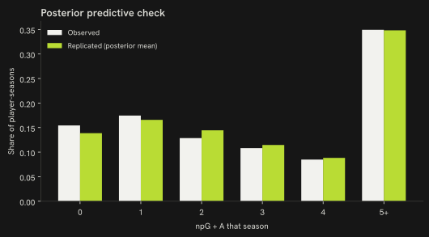
What the movers do not show: they are not a random sample — players tend to move up when they are good and down when they are older — so the within-player contrast describes the league difference for the kind of player who moves, and the age term absorbs only the part of that selection that is age. The interval is the model's uncertainty, not the selection's.
The report's rankings keep the UEFA-coefficient multiplier throughout; the model above is shown alongside it as a check on that multiplier's own assumption — that continental results track player-level strength — not as a replacement for it.
Three models, one task, five seasons
Here we ask a simple question of five different methods: given a player's numbers this season, how well can each one guess his numbers next season. Each method is tested only on seasons it has not already seen, the way a scout's judgement only really counts for what he predicts before a season starts, not after it has finished.
Full method, figures and diagnostics
What does a player's season tell us about the next one, given where he plays, how old he is and — for exports — at what age he moved? In model terms: predict a player's league-adjusted production next season (non-penalty goals plus assists per 90, quality-adjusted) from this season's numbers, for every player-season pair with at least 450 minutes in both seasons, every nationality in the corpus.
Evaluated by rolling-origin cross-validation (Hyndman and Athanasopoulos, 2021): for each of 5 target seasons in turn, every model trains only on pairs whose target season came earlier and is tested on that season's pairs — the same discipline a forecaster uses when the future is genuinely unknown at fit time, and what makes the per-season table below a real "performance over time" read rather than one blended number. Two baselines — persistence (next season = this season) and shrinkage to the league mean — sit alongside three fitted models sharing the same eight features: a hierarchical Bayesian regression (target ~ Normal(μ, σ), partial pooling on league and player, NUTS, 2 chains × 400 draws per origin (Gelman et al., 2013)), a gradient-boosted regressor and a small multilayer perceptron (scikit-learn (Pedregosa et al., 2011), hidden layers 64/32 — a small MLP, not an embedding model: PyTorch is not part of this pipeline). The Bayesian model's training rows are subsampled to at most 2500 per origin to keep five origins' worth of fits inside the runtime budget; the other four models train on the full split. The target is adjusted with the multiplier of the league the player is in next season; the features only know this season's league, so a move is a change the models cannot see coming — a limitation shared by all five.
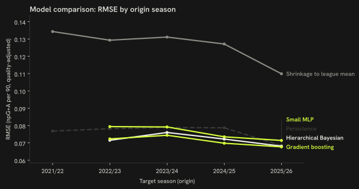
Model
2021/22
2022/23
2023/24
2024/25
2025/26
Pooled
Persistence
0.0768 (0.054)
0.0782 (0.056)
0.0789 (0.056)
0.0787 (0.057)
0.0684 (0.048)
0.0751 (0.053)
Shrinkage to league mean
0.1343 (0.104)
0.1293 (0.100)
0.1311 (0.098)
0.1271 (0.098)
0.1099 (0.089)
0.1225 (0.095)
Hierarchical Bayesian
—
0.0715 (0.053)
0.0760 (0.054)
0.0722 (0.053)
0.0681 (0.052)
0.0714 (0.053)
Gradient boosting
—
0.0723 (0.051)
0.0744 (0.051)
0.0698 (0.051)
0.0677 (0.051)
0.0706 (0.051)
Small MLP
—
0.0794 (0.059)
0.0792 (0.057)
0.0735 (0.054)
0.0714 (0.054)
0.0753 (0.056)
Each cell: RMSE (MAE), in league-adjusted npG+A per 90. The first origin's training set is empty by construction — the corpus's earliest feature season leaves no earlier target season to train on — so only the two baselines are reported there.
The Bayesian model's 90 % predictive interval covered the observed value 91 % of the time, pooled across the 4 origins it was fit for (2022/23: 90 %, 2023/24: 90 %, 2024/25: 91 %, 2025/26: 93 %).
By pooled RMSE, Gradient boosting wins (0.071 vs 0.075 for persistence, 6 % lower).
The clearest season-to-season move in the winner's own RMSE is between 2023/24 and 2024/25 (0.005) — the kind of drift this rolling-origin table exists to surface.
Dating the break and one forecast
This section finds the two seasons when the count of home-nation players in Europe's five biggest leagues changed level for good — the rise and the fall — and puts a probability on each being the true turning point rather than an ordinary dip. It also makes one forecast for next season, as a demonstration of the method, not a prediction about any player.
Full method, figures and diagnostics
The series is modelled as a local level in state space (Durbin and Koopman, 2012): the log of the season count follows a Gaussian random walk (σ ~ HalfNormal(0.2)), plus two ordered step changes δ₁, δ₂ in the level at unknown seasons τ₁ < τ₂ — on the series back to 1990/91 one step is misspecified, since the count rises through the 1990s and falls after the 2000s plateau, and a single step lands on whichever change buys more likelihood. NUTS only samples continuous parameters, so the τ pair is not sampled directly — every ordered pair of candidate seasons at least 3 seasons from either end and from each other is marginalised out of the model with a single log-sum-exp potential, and each break's own posterior is recovered afterwards from the continuous draws, the standard move for a marginalised discrete parameter (Gelman et al., 2013); the changepoint idea itself is due to (Adams and MacKay, 2007), applied here to a batch, two-break setting. The report's "break" is the step that lowers the level; the other is the rise. A rolling-origin backtest (Hyndman and Athanasopoulos, 2021) refits the same local level without the step at each of 15 origins, forecasting one season ahead and scoring against the naive "same as last season" baseline — the honest forecaster's read, since no real origin knows in advance which side of a break it sits on. The one forecast below, from the same change-point-free model fitted on the full series, is a demonstration of the method on a count of players, not a statement about any player.
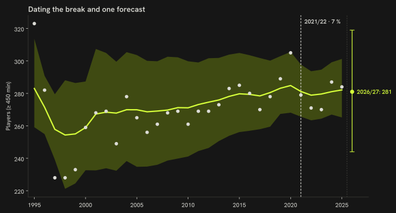
How to read it: the acid line is the observed count, the pale band the model’s fitted level; the dashed rules are the most probable rise and fall seasons with their posterior probabilities; past the divider on the right, the one-season forecast with its 90 % interval.
For Spain, the model finds no step change worth dating: the best candidate is 2001/02 at 2 % posterior with a ×1.02 (0.90–1.12) change in the level; the random walk's own innovation scale is σ = 0.031.
2021/22: 7 %
2019/20: 6 %
2014/15: 6 %
The same model, fit separately for the two contrast countries:
One-step-ahead rolling-origin backtest of the plain local level (no change point) against the naive "same as last season", 15 origins from 2010/11 to 2024/25:
Origin
Forecast season
Actual
Model median (90 % interval)
Naive
2010/11
2011/12
269
263 (221–309)
261
2011/12
2012/13
269
266 (225–312)
269
2012/13
2013/14
273
271 (225–313)
269
2013/14
2014/15
283
269 (231–317)
273
2014/15
2015/16
285
276 (238–326)
283
2015/16
2016/17
280
280 (243–325)
285
2016/17
2017/18
270
279 (243–322)
280
2017/18
2018/19
278
274 (235–315)
270
2018/19
2019/20
289
274 (236–315)
278
2019/20
2020/21
305
282 (244–324)
289
2020/21
2021/22
279
292 (255–337)
305
2021/22
2022/23
271
285 (246–325)
279
2022/23
2023/24
270
280 (243–317)
271
2023/24
2024/25
287
276 (241–314)
270
2024/25
2025/26
284
281 (246–317)
287
Pooled across 15 origins: MAE 9.07 for the model against 8.60 for the naive baseline, 100 % of the 90 % intervals covered the observed value.
The one forecast, for next season (2026/27), from the same change-point-free model fitted on the full series:
Country
Season
Median
90 % interval
Spain
2026/27
281
244–319
France
2026/27
210
182–242
Germany
2026/27
164
136–198
A demonstration of the method on a count of players, not a statement about any player.
This section asks whether the pattern from the funnel above — countries that give young players more minutes at home tend to have a deeper pool in the strongest leagues — holds up across every country in the comparison set, not only the two shown earlier. Two seasons and a handful of countries is a small sample, so the range around the estimate is wide.
Full method, figures and diagnostics
For each of the 8 peer countries, the 2024/25 → 2025/26 average U21 share of domestic-league minutes (x) against the 2024/25 → 2025/26 average top-9 players per million (y) — one row per country. A Bayesian simple regression, y ~ Normal(α + β·x, σ), weakly informative priors (4 chains × 1000 draws (Abril-Pla et al., 2023)), answers the between-country question slide 3 asks: does a country with a higher average U21 share also have a deeper pool, on average (Gelman et al., 2013). Cross-checked against a plain pooled least-squares slope on the full two-season panel (numpy polyfit, ignoring country structure entirely, 1000 percentile-bootstrap resamples — statsmodels is not a dependency here), which should agree in sign. Two seasons per country (previous and metrics; the current season is partial and left out); a peer whose top flight FBref does not track is absent from the panel, which is why n can be below the peer count.
β = +13.94 per 10 percentage points of U21 share (90 % HDI −4.93–33.09), R² = 0.22; OLS on the same 8 country means lands close by, at +14.17 (1.46–33.69), and the pooled-panel OLS slope agrees in sign at +13.57 (5.36–20.82). n = 8; the interval is wide because the panel is small.
A separate check: the same regression, but with a country random intercept fit on the full two-season panel instead of country means. Within-country changes across the two seasons carry no signal — β_within = +1.56 per 10 percentage points (90 % HDI −1.29–4.33), n = 16 country-seasons (R-hat ≤ 1.006, minimum bulk ESS 861, 0 divergent transitions; posterior-median country-intercept scale σ_country = 8.25). With only two seasons per country the intercept absorbs almost all of the between-country pattern the fit above isolates, leaving this estimate driven by season-to-season noise alone; reported here as a robustness check, not a second headline.
Descriptive only: a country's average U21 share and its average per-capita count are shown together because they are the numbers on hand, not because one is claimed to produce the other.
Panel rows (n = 16)
Country
Season
U21 share
Per million
POR
2024/25
6.2 %
27.35
BEL
2024/25
7.8 %
22.99
NED
2024/25
11.8 %
17.35
ESP
2024/25
7.8 %
9.38
FRA
2024/25
8.7 %
5.35
ENG
2024/25
3.9 %
4.00
ITA
2024/25
3.3 %
3.58
GER
2024/25
4.7 %
3.12
POR
2025/26
4.9 %
25.19
BEL
2025/26
8.7 %
21.46
NED
2025/26
13.6 %
20.69
ESP
2025/26
4.8 %
9.54
FRA
2025/26
8.8 %
5.79
ENG
2025/26
3.0 %
3.60
ITA
2025/26
2.7 %
3.41
GER
2025/26
6.2 %
3.13
What the gap is made of
The gap between the home nation and a comparison country, in players per million, can be split into pieces that line up with three things this report already measures: how much young players play at home, how strong the domestic league is, and how old players are when they move abroad. This does not say which of the three causes the gap, only how much of it moves together with each one — the way a manager might note that a poor season lines up with an injury crisis without claiming the injuries alone explain it.
Full method, figures and diagnostics
Ridge regression (α = 1.00, standardised channels, converted back to original units) of top-9 players per million on three channels — U21 share of domestic minutes, domestic league strength (M2's m_L where the country's top flight is in that model's fitted set, else the UEFA-coefficient multiplier (every country in this run used the model estimate)) and median export age (recent entrants, or the all-time median for a country with none recently) — over the 8 peer countries with data on all three channels, metrics season. For one contrast country at a time, the fitted model's own prediction splits the gap exactly into one term per channel — the linear-model form of the Blinder-Oaxaca wage decomposition (Oaxaca, 1973; Blinder, 1973), applied here to a per-capita player count. Three linear channels means this split is Shapley-equivalent: the Shapley value of an additive term in a linear model equals its own coefficient's contribution, so no permutation machinery is implemented. The residual is whatever the three channels do not carry.
How to read it: the whole bar is the gap in players per million between the comparison country and Spain. Each segment is how much of that gap goes with one measured channel — youth minutes, league strength, export age — under the decomposition; the hatched remainder is what the three channels do not carry. A segment can be negative when the channel works the other way.
Contrast
Channel
Contribution
Share of gap
90 % interval
France Gap (players per million): −3.75
U21 minutes
−2.33
62 %
−7.15 – +3.19
League strength
+4.99
−133 %
+1.05 – +7.03
Export age
+2.13
−57 %
+0.25 – +4.80
Residual
−8.53
—
—
Portugal Gap (players per million): +15.65
U21 minutes
−0.07
0 %
−0.21 – +0.09
League strength
+9.53
61 %
+1.53 – +13.49
Export age
+4.26
27 %
+0.45 – +9.57
Residual
+1.92
—
—
Bootstrap 90 % intervals on each channel's contribution, 1000 resamples of the panel's rows (the model refit on each resample; the home/contrast countries' own values held fixed); the residual itself is not bootstrapped — it is the two countries' own observed counts minus the fitted gap.
A decomposition of a correlation this panel happens to show, not a causal accounting; with n = 8 and three correlated national-level channels, the shares are indicative, not precise. A channel's share of the gap is only shown when the gap itself is at least 3 players per million — below that, a small denominator can send a share past 100 % in either direction; the contribution itself, in players per million, is always reported.
Age at export
Players who move abroad younger tend to end up producing more once they are there, but that is not necessarily because moving young helps a career: clubs are also more willing to take a chance on a player they already rate highly at a younger age. This section fits a curve to that pattern while trying to hold the strength of the player's original league fixed, but it cannot fully tell the two explanations apart.
Full method, figures and diagnostics
For every peer-nationality player (home nation included) whose first top-9-league season lies inside the fetched window and isn't censored (the same censoring rule as "Where do Spanish players go when they leave?", reused here) — 691 players, ages 16–36 — age at that season is modelled against league-adjusted production over the player's first one or two top-9 seasons. f(age) is a natural cubic spline with knots at 19, 21, 23 and 25 (a plain quadratic below n = 150; the natural cubic spline branch was used here), alongside origin-league strength (the transfer-graph model, § League strength), position and a partially pooled country effect (Gelman et al., 2013), sampled with NUTS (Hoffman and Gelman, 2014), 4 chains × 1000 draws; every design column and the outcome were standardised before fitting, the youth-minutes panel's own lesson about raw-scale priors on differently-scaled covariates.
How to read it: the horizontal axis is a player’s age in his first top-9 season; the vertical axis is his league-adjusted goals plus assists per 90 over the first two seasons there. The line is the model’s expected value at each age, the band its 90 % interval; a flat line means arriving later costs nothing measurable. Acid dots are Spanish exports — hover for the name.
Age
Expected G+A/90 (median)
90 % HDI
19
0.16
0.14 – 0.18
21
0.15
0.13 – 0.17
23
0.14
0.12 – 0.16
25
0.13
0.11 – 0.15
27
0.14
0.11 – 0.15
β, per one-unit increase in origin-league strength (m_L): +0.07 (0.02–0.12).
Spanish exports' own country effect: 0.00 (−0.02–0.02); Spanish exports arrive at a median age of 22.
The same model, fit again without origin-league strength: the country-effect scale (σ_n) is 0.282 with the league term in the model and 0.312 without it — what moves between the two is what the league term is absorbing.
Leave-one-nation-out: excluding Spain's own 133 exports (n = 558 remaining) and refitting, the 21-vs-24 difference is +0.02 (0.01–0.04), against +0.02 in the full fit.
Posterior predictive check
Observed vs. replicated y (mean league-adjusted G+A/90 over the first two top-9 seasons): mean 0.15 vs 0.15, sd 0.11 vs 0.11, 10th percentile 0.03 vs 0.02, 90th percentile 0.30 vs 0.29.
R-hat ≤ 1.004, minimum bulk ESS 1262, 0 divergent transitions across 691 players; fit in 20.3 s.
What this model does not separate: the corpus is not a random sample of players who could have left later. Players who leave earlier tend to be the ones judged ready earliest — a selection effect the age curve mixes with any genuine development effect of arriving young, and this report does not try to tell the two apart.
Bayesian shrinkage
Per-90 rates of players with few minutes are shrunk towards the median of their league and season (players with at least 900 minutes) using the empirical Bayes formula (Efron and Morris, 1975), with K = 10 phantom matches expressed as 900 minutes:
shrunk_rate = (events + K × league_median) / (minutes / 90 + K), K = 10
At 450 minutes (the inclusion floor) the league median carries 67 % of the weight; at 900 minutes the player's own rate and the median weigh the same. Minutes share and age are not shrunk.
Goalkeepers are counted the same way as outfield players throughout this report, with one difference: because a goalkeeper's save numbers swing around a lot from game to game, the model needs a bigger sample of shots faced before it trusts a keeper's own numbers over the league average.
Goalkeeper rates (chapter II's counter-example) use the same formula. GA/90 and saves/90 are shrunk toward their league-season median with the same K = 900 minutes, and GA/90 is then quality-adjusted by the league multiplier — a goal conceded in a stronger league counts less. Save percentage is shrunk the same way but against shots on target faced, not minutes: a single season's shot count sits far below K = 900, so save_pct_shrunk compresses hard toward the league median for almost every goalkeeper — a large gap in the raw, unshrunk save percentage is the more informative read there.
PCA loadings
One five-feature vector per position group (npg_p90, ast_p90, min_share, age, cards_p90), standardised, reduced to two components per projection. Style uses the shrunk rates; quality multiplies the rates by the league multiplier first.
Loadings table
Group
Projection
PC
% variance
npG/90
A/90
min share
age
cards/90
FW
style
PC1
25.2 %
0.533
0.215
0.651
0.430
−0.246
FW
style
PC2
23.6 %
−0.206
−0.271
−0.120
0.823
0.439
FW
quality
PC1
28.9 %
0.636
0.380
0.482
0.217
−0.415
FW
quality
PC2
24.9 %
−0.108
−0.114
0.133
0.910
0.361
MF
style
PC1
29.5 %
0.597
0.601
0.383
0.073
−0.361
MF
style
PC2
23.2 %
−0.245
−0.117
0.484
0.828
0.082
MF
quality
PC1
30.0 %
0.590
0.608
0.382
0.133
−0.344
MF
quality
PC2
24.2 %
−0.244
−0.199
0.490
0.809
0.087
DF
style
PC1
25.0 %
0.546
0.429
0.505
0.183
−0.480
DF
style
PC2
21.1 %
−0.343
−0.378
0.278
0.804
−0.128
DF
quality
PC1
25.8 %
0.432
0.356
0.578
0.327
−0.496
DF
quality
PC2
21.7 %
−0.462
−0.375
0.104
0.797
−0.023
Sensitivity analysis (±20 % multipliers)
For each scenario the quality-adjusted ranking of Spanish-eligible players within each position group was recomputed and compared with the baseline; "top-10" is the union of the 3 groups' own top tens (30 players at baseline). Of the 41 scenarios, 32 change nobody in that set; the largest churn is 6 (ESP-La Liga multiplier -20%, mean rank shift 3.08 in the top twenty)*.
Scenario table
Scenario
Description
Top-10 overlap
Top-10 churn
Mean Δ rank (top 20)
baseline
current multipliers from config/league_quality.yaml
30 / 30
0
0.00
ENG-Premier League_minus20
ENG-Premier League multiplier -20%
29 / 30
1
0.67
ENG-Premier League_plus20
ENG-Premier League multiplier +20%
29 / 30
1
0.45
ITA-Serie A_minus20
ITA-Serie A multiplier -20%
28 / 30
2
1.30
ITA-Serie A_plus20
ITA-Serie A multiplier +20%
28 / 30
2
0.68
ESP-La Liga_minus20
ESP-La Liga multiplier -20%
24 / 30
6
3.08
ESP-La Liga_plus20
ESP-La Liga multiplier +20%
27 / 30
3
2.52
GER-Bundesliga_minus20
GER-Bundesliga multiplier -20%
30 / 30
0
0.73
GER-Bundesliga_plus20
GER-Bundesliga multiplier +20%
28 / 30
2
0.73
FRA-Ligue 1_minus20
FRA-Ligue 1 multiplier -20%
30 / 30
0
0.38
FRA-Ligue 1_plus20
FRA-Ligue 1 multiplier +20%
29 / 30
1
0.10
NED-Eredivisie_minus20
NED-Eredivisie multiplier -20%
30 / 30
0
0.00
NED-Eredivisie_plus20
NED-Eredivisie multiplier +20%
30 / 30
0
0.00
POR-Primeira Liga_minus20
POR-Primeira Liga multiplier -20%
30 / 30
0
0.63
POR-Primeira Liga_plus20
POR-Primeira Liga multiplier +20%
27 / 30
3
1.05
BEL-Pro League_minus20
BEL-Pro League multiplier -20%
30 / 30
0
0.00
BEL-Pro League_plus20
BEL-Pro League multiplier +20%
30 / 30
0
0.00
TUR-Süper Lig_minus20
TUR-Süper Lig multiplier -20%
30 / 30
0
0.10
TUR-Süper Lig_plus20
TUR-Süper Lig multiplier +20%
30 / 30
0
0.10
CZE-First League_minus20
CZE-First League multiplier -20%
30 / 30
0
0.00
CZE-First League_plus20
CZE-First League multiplier +20%
30 / 30
0
0.00
SVK-Super Liga_minus20
SVK-Super Liga multiplier -20%
30 / 30
0
0.00
SVK-Super Liga_plus20
SVK-Super Liga multiplier +20%
30 / 30
0
0.00
AUT-Bundesliga_minus20
AUT-Bundesliga multiplier -20%
30 / 30
0
0.00
AUT-Bundesliga_plus20
AUT-Bundesliga multiplier +20%
30 / 30
0
0.00
HUN-NB I_minus20
HUN-NB I multiplier -20%
30 / 30
0
0.00
HUN-NB I_plus20
HUN-NB I multiplier +20%
30 / 30
0
0.00
POL-Ekstraklasa_minus20
POL-Ekstraklasa multiplier -20%
30 / 30
0
0.00
POL-Ekstraklasa_plus20
POL-Ekstraklasa multiplier +20%
30 / 30
0
0.05
CRO-HNL_minus20
CRO-HNL multiplier -20%
30 / 30
0
0.00
CRO-HNL_plus20
CRO-HNL multiplier +20%
30 / 30
0
0.00
DEN-Superliga_minus20
DEN-Superliga multiplier -20%
30 / 30
0
0.00
DEN-Superliga_plus20
DEN-Superliga multiplier +20%
30 / 30
0
0.00
SUI-Super League_minus20
SUI-Super League multiplier -20%
30 / 30
0
0.00
SUI-Super League_plus20
SUI-Super League multiplier +20%
30 / 30
0
0.00
NOR-Eliteserien_minus20
NOR-Eliteserien multiplier -20%
30 / 30
0
0.00
NOR-Eliteserien_plus20
NOR-Eliteserien multiplier +20%
30 / 30
0
0.00
GER-2. Bundesliga_minus20
GER-2. Bundesliga multiplier -20%
30 / 30
0
0.00
GER-2. Bundesliga_plus20
GER-2. Bundesliga multiplier +20%
30 / 30
0
0.00
all_minus20
every league multiplier -20%
30 / 30
0
0.00
all_plus20
every league multiplier +20%
30 / 30
0
0.00
* Churn = baseline top-10 members that leave the set under the scenario; mean Δ rank = mean absolute rank change over the baseline top-20 union. Scenarios: baseline, every league ±20 % on its own, and all leagues ±20 % at once.
The table above is fixed at the config multipliers; the panel below is the same Spanish-eligible top ten made interactive — drag any league's slider (0.5×–1.5× of its default) and the ranking recomputes in the browser.
#
Player
League
q
Vs. default
Sources This is the offline sensitivity table above (§ Sensitivity analysis) made interactive: q = (npG/90_shrunk + A/90_shrunk) × m_league, recomputed client-side from the shrunk rates of every Spanish-eligible metrics-season player, no server round-trip. The rank-change column compares each row's rank under the current sliders to its rank at the config defaults.
Data-quality log
8 recomputed checks · 6 recorded incidents
Every wrangling decision that changed a count, with the count. The first block is recomputed on every run; the second is the incident record (dates and counts as recorded at the time).
Check
Count
What it counts
Women's entries filtered
0 entries
FBref country-page entries dropped for a surname ending in -ová (see Limitations).
Namesakes in the pool
295 players
Active pool players sharing a normalised name (e.g. father and son), disambiguated by club.
Pool players without season tables
2700 players
Spanish professionals on FBref's country page who play in a league without season tables and carry no metrics.
Split-season rows collapsed
441 rows
Player-season-group rows merged into one after a mid-season transfer (minutes summed, rates minutes-weighted).
Unmatched call-up names
70 names
National-team squad-table names that match no Spanish-eligible row in the feature tables.
Missing birth years
0 rows
Season-table rows of nation ESP with no birth year, which cannot form a player_key.
Unjoined goalkeeper rows
12 rows
Keeper-page rows with no matching GK row in the season tables on (league, season, team, player_key); dropped from every goalkeeper exhibit.
La Liga rows without a nationality
3 rows
Season-table rows in the La Liga where FBref records no nationality — the highest rate of any league in this pipeline. Every “own nationals” share reads that column as its numerator while the denominator keeps the league’s full minutes, so those shares are floors, not point estimates.
2026-09-14 A stale FBref season index made soccerdata fetch the season-less URL, which FBref serves as the season in progress: nine leagues' 2025/26 tables were 2026/27 after four rounds. Fixed by checking the page's own heading against the requested season. (9 leagues, recorded)
2026-09-14 FBref intermittently served a squads-only page (no season table yet) for a season still in progress. Fixed by a single refetch, in the same page-heading guard.
2026-09-13 ClubElo's API answered 502 for the whole run; league multipliers fell back to UEFA association coefficients.
2026-09-13 The Wikidata portrait query matched on name, citizenship and birth date only; seven portraits belonged to namesakes in other sports until an occupation filter was added. (7 portraits, recorded)
2026-09-13 Slovakia's top flight is not on FBref at all; this report's Slovak exhibits rest entirely on players abroad.
2026-09-14 The first out-of-sample comparison of the league-strength model applied the UEFA-multiplier baseline in the wrong direction and started both baselines from a raw previous-season rate (a zero-goal season predicted zero); caught in review. Corrected: multiplier ratio m_prev / m_new, baselines from the shrunk rate. The model's margin over the baselines shrank from about 3 nats to 0.5 and is the figure reported.
Limitations of this analysis
Leagues without metrics
The pipeline fetches 19 competitions from FBref. 2700 of the 3747 Spanish professionals found on FBref's country page play in a league without season tables and carry no metrics; they are listed by name and club only. The Spanish second tier (Segunda División) is not fetched; a home player's first rung below the top flight is outside this pipeline's scope.
Free-tier feature set
The feature vector is five basic columns per 90 minutes: non-penalty goals, assists, minutes share, age and cards. No expected goals, no progressive passes, no tackles — the rule was one identical vector across every league in the corpus, and only the basic table is available for all of them. Defensive and creative contributions beyond assists are invisible to the map.
National-team flag source
The flag "called up 2024–26" is parsed from Wikipedia squad tables (2026 FIFA World Cup, UEFA Euro 2024, UEFA European Under-21 Championship 2025) and matched on normalised name plus birth year. 44 of the 353 mapped players carry it. A squad table edit or a name variant can drop a call-up; the flag is a tag, not a cap count.
Photo coverage
464 of the 3747 pool players have a Wikimedia Commons portrait (Wikidata P18, matched on name, citizenship and birth date, occupation filtered to association football player) used on the site. Players without a portrait on the site show initials.
Season split
The headline per-capita count and every metric use the complete 2025/26 season; trajectories run 2024/25 → 2025/26; the club on a card is the 2026/27 club (season in progress at build time).
League multipliers
ClubElo was unreachable at run time, so the multipliers are UEFA association coefficients scaled to the strongest league = 1.00, and second-tier leagues are set to 0.6 × the first tier of the same country by assumption. The club-strength proxy in chapter II is the club's goals-scored percentile within its league, not an Elo rating. The sensitivity table shows how far a ±20 % error in any one multiplier moves the Spanish ranking.
Export origins from recent entrants only
The origin league of an export is known only when the season before the first top-9 season was fetched: 2020/21 onwards for the headline leagues, 2024/25 onwards for the peer domestic leagues. Origin shares and the recent export age are therefore computed over players whose first top-9 season is 2025/26 or 2026/27; earlier entrants count towards the full export age but not the origin mix, and a first appearance already in 2020/21 is censored (the censored share is shown).
Player identity
FBref's season tables carry no player id, so players are joined on normalised name plus birth year across leagues and seasons; two players sharing both would collapse into one. A mid-season transfer produces two club rows that are collapsed into one minutes-weighted row before ranking.
Women's entries and the -ová heuristic
FBref's country page mixes men's and women's competitions. Entries whose surname ends in -ová were dropped from the pool; a woman with a different surname ending would survive the filter, and a man with that ending would not. The suffix is specific to Czech feminine surnames, so for a nation whose naming convention doesn't use it (English, for one) the filter catches close to none of the contamination it targets; the "Women's entries filtered" count in the data-quality log below says how many it caught this run.
No market values, no scouting
Transfer fees, market values, video and scouting reports are outside the public sources used here. The map describes statistical footprints and counts; selection and development decisions require the federation's own data and expertise, which this method does not have.
No event or tracking data
Every feature here is a season aggregate from free FBref tables. The author's tracking work lives elsewhere: tactical-cz (broadcast-video player tracking for Czech football) and the hockey video PoC linked from hockey.datasimply.eu. New columns enter in src/features.py::per90 and the feature list in config/feature_definitions.yaml.
Validation & robustness
Each model in this pipeline carries its own validation next to where it is described; this section collects one headline diagnostic from each as it lands. So far:
Season-to-season model comparison (M1): rolling-origin evaluation over 5 seasons, pooled RMSE favours Gradient boosting (0.071 vs 0.075 for persistence), the Bayesian model's 90 % interval covered 91 % of observed values.
League strength (M2): R-hat ≤ 1.003, 0 divergent transitions, out-of-sample log predictive density favours "Model" (−2.174), Spearman rho = 0.74 against the UEFA multipliers.
The break and forecast (M4): the break dates to 2001/02 (2 % posterior) for Spain, a ×1.02 level change; the plain local level does not beat the naive baseline on MAE (9.07 vs 8.60) with 100 % of the 90 % intervals covering the observed value over 15 rolling-origin backtests.
The youth-minutes panel (M3): across 8 countries (country means, n = 8), the between-country slope is +13.94 per 10 percentage points of U21 share (−4.93–33.09), R² = 0.22; a plain pooled OLS slope agrees in sign at +13.57 (5.36–20.82) — the interval is wide because the panel is small. A within-country check (country-random-intercept fit on the full two-season panel) finds no signal: β_within = +1.56.
The gap decomposition (M5): ridge fit (α = 1.00) on n = 8 peer countries; for France, the residual is −8.53 of a −3.75 gap — a decomposition of a correlation, not a causal accounting.
Age at export (M1 proper): R-hat ≤ 1.004, 0 divergent transitions across 691 players; β on origin-league strength is +0.07; leaving out 133 Spanish exports and refitting shifts the 21-vs-24 difference by +0.0032.
Reproducibility
The full pipeline is public: github.com/sandovabarbora/czefootball-player-pool-atlas. MIT licence. From a clean clone, uv sync && make restore-snapshot && make render renders this report from the committed data snapshot and make pages builds the site; make all refetches everything and runs the whole pipeline. Random seed 42 for every stochastic step (KMeans). Fetchers cache raw pages and are idempotent; the render step never touches the network.
The processed tables also load into BigQuery unchanged: infra/bigquery/ has generated schemas, a bq load script and a key/unit contract for the model-output JSONs the tables don't cover. Run infra/bigquery/load.sh -n <dataset> <nation> to see the load commands without running them.
The report was produced with an agentic workflow: a written design spec, an implementation plan of small tasks, a fresh coding agent per task, a spec-compliance and code-quality review after each, a whole-branch review at the end. Every decision the controller made without the author is a dated ruling in a ledger — 25 across this edition and the last. The author wrote the framing, the cluster reads and the rulings; the agents wrote the code under 317 tests.
Implementers and reviewers: sonnet · controller: opus.
Reviews are two-stage per task — spec compliance, then code quality — and every review's findings are written into the ledger, not just its verdict: 40 lines mentioning a review across the 36 tasks of this edition and the last.
Everything above is built from season tables, because that is what exists for every league in the benchmark. The next layer of data — every player’s position ten times a second — exists for none of them publicly. So here is one match of it, from a different league, to show concretely what it answers that a season table cannot: not how many goals a player scored, but how he moves when he does not have the ball.
How to read it: the pitch is drawn with both teams attacking left to right; every arrow is one off-ball run, from where it started to where it ended, coloured by the kind of run SkillCorner’s model labelled it. Bright arrows were passed to; thick ones were received. Pick a team, switch run types on and off, hover an arrow for the player and what came of it. Data: (SkillCorner, 2025), one A-League match, MIT licence; none of it enters any number in this report.
For a federation this is the layer that turns “how many minutes” into “what kind of minutes”: whether a young winger’s runs are the runs the first team needs, whether an export’s physical output matches his new league, whether a squad presses as one. The atlas cannot see it and does not pretend to; the pipeline is built so that a tracking feed, when a federation has one, becomes another table beside the season tables rather than a different project.
Related methods and what was taken from them
The methods below shaped this report's design. Each entry states what the method is, what this report took from it, and what was left out and why.
One pairing here has no single citation behind it: the transfer-graph league-strength model (§ League strength) and the age-at-export curve (§ Age at export) are fit independently and joined only through origin-league strength as a covariate — a within-player league-identification model feeding a spline-in-age production curve is, to the author's knowledge, this report's own combination, not drawn whole from any one method below.
Empirical-Bayes shrinkage of a sparse per-unit rate toward a group mean (Efron and Morris, 1975) · taken: per-90 rates are shrunk toward the league-season median with a K = 10 phantom-match prior before the quality projection (§ Bayesian shrinkage) · left out: the fully hierarchical variance-component estimate the original method also supports, since one shared K fits this corpus's minutes floor well enough for a descriptive report.
Multilevel (partial-pooling) regression and posterior predictive checking as a model-diagnosis routine (Gelman et al., 2013) · taken: the league-strength and youth-panel models pool leagues and countries partially rather than fitting each alone or merging them into one, and the league-strength posterior predictive check (§ League strength) compares simulated to observed production · left out: model comparison by WAIC/LOO, since every model here is instead scored on seasons it never trained on (rolling-origin backtests), a stronger check for this report's purpose.
The No-U-Turn Sampler, the gradient-based MCMC method PyMC uses by default (Hoffman and Gelman, 2014) · taken: every Bayesian model in this report — league strength, model comparison, the change-point series, the youth panel — is fit with it and diagnosed on R-hat and divergences · left out: variational inference as a faster approximate alternative, since none of the four models is slow enough to need it.
Plus-minus and regularised adjusted plus-minus ratings, which isolate a player's contribution from teammates' and opponents' by regression (Kharrat, McHale and Peña, 2020; Hvattum, 2019) · taken: the league-strength model's within-player logic — only a mover's own before/after change of league separates their level from the league's scoring environment — follows the same identification idea, applied to leagues rather than teammates · left out: an actual RAPM fit over lineup data, which this corpus's season-level tables (no lineups, no possession data) cannot support.
Bayesian online change-point detection, a sequential method for locating a shift in a data-generating process (Adams and MacKay, 2007) · taken: a single unknown break season with a marginalised discrete location parameter, applied here to a short batch series rather than sequentially · left out: the online/sequential setting and multiple change points, since the series in question (one country's Big-5 count per season) is short, fixed, and plausibly has at most one structural shift.
The local-level model — a random walk plus noise for a slowly drifting series — in the state-space tradition (Durbin and Koopman, 2012) · taken: the change-point model (§ Dating the break) is exactly this local level in log space, with one added step change at the break · left out: a local linear trend or seasonal component, since the series is annual and too short for a trend term to be identifiable.
Rolling-origin (time-series) cross-validation: refit on data up to each origin, score only on what came after it (Hyndman and Athanasopoulos, 2021) · taken: both the model-comparison exercise (§ Three models, one task) and the change-point backtest (§ Dating the break) are scored this way, never on a random split that could leak future seasons into training · left out: expanding-vs-sliding-window variants beyond the single expanding-window scheme, since the corpus's five metrics seasons leave little room to compare schemes.
The Oaxaca–Blinder decomposition, splitting a gap between two groups' means into an explained and an unexplained part via a linear model (Oaxaca, 1973; Blinder, 1973) · taken: the gap-decomposition exhibit (§ What the gap is made of) splits the per-capita gap into the three measured channels plus a residual the same way · left out: the detailed, coefficient-level decomposition of the explained share, since three channels are few enough to read directly off the coefficients themselves.
The silhouette coefficient, a per-point measure of how well a clustering separates its groups (Rousseeuw, 1987) · taken: used to sanity-check the PCA cluster counts per position group and projection before they were fixed (§ Cluster archetypes) · left out: a silhouette sweep reported in the text, since the chosen cluster counts are stable across position groups and projections.
Gradient-boosted trees and a small multilayer perceptron, two non-Bayesian machine-learning baselines standard in this kind of comparison (Pedregosa et al., 2011) · taken: both sit alongside the persistence, shrinkage and Bayesian models in § Three models, one task, on the same eight features and the same rolling-origin split · left out: hyperparameter search beyond scikit-learn's defaults (plus the MLP's 64/32 hidden layers), since the comparison's point is model family, not a tuned leaderboard.
CIES Football Observatory's periodic counts of footballers playing outside their home association (Poli, Ravenel and Besson, 2024) · taken: the out-of-sample league-strength check (§ League strength) tracks the same population — players who changed league — though it does not reuse CIES's own counts · left out: CIES's expatriate-share figures as a number quoted in this report, since the per-capita and pathways exhibits already answer the same question from this report's own fetched player tables.
Next steps not attempted
Player-season embeddings and graph methods over the transfer network — clubs and moves as a graph, players as nodes with learned representations — are natural next tools (graph neural networks, specifically) for a pool this size, but were not attempted here.
Event- and tracking-derived features (pressing intensity, progressive carries, expected threat) would sharpen the style axis beyond the five box-score numbers used here, but no tracking data source was available for this corpus.
Glossary
Ten terms used in the sections above, each in one plain sentence with a football example.
Per 90
A rate scaled to a full match: a player with three goals in five matches, each played the full ninety minutes, has a rate of 0.6 goals per 90 — it lets a player who came on as a substitute be compared fairly with one who started every match.
Minutes share
How much of a club's available playing time a player actually got, out of every minute the club's matches could have offered that season; a player who played every minute of every match has a minutes share of 100 percent.
Shrinkage
A way of not trusting a small sample too much: a player with only a handful of matches has his numbers pulled part of the way toward the league's typical number, the way a manager waits for more than one good game before trusting that a young player's form is real.
League multiplier / league strength
A number saying how much a goal, an assist or a minute is worth in one league compared with another; a striker's goal in a weaker league counts for less once it is adjusted by that league's own multiplier — the same idea as judging a transfer by the level the player is coming from.
Quality-adjusted
A player's raw numbers after they have been multiplied by the league multiplier above, so a rate earned in a strong league and one earned in a weaker league can be compared on the same footing.
Interval (90 percent)
A range around a number that shows how sure the model is, not a single guess; a ninety percent interval means the model thinks the true value falls inside that range about nine times out of ten.
Posterior
What the model believes about a number after it has seen the data, expressed as a range of plausible values rather than one single figure; the probability attached to a break season in this report is a posterior probability.
Out-of-sample
Checking a method only on matches, players or seasons it was not shown while it was being built — the way a manager judges a scouting report by what actually happens once the player signs, not by how well the report described what had already happened.
Cluster
A group of players whose season numbers look similar to each other and different from other groups, found automatically from the data rather than assigned by hand; a cluster is a style label such as "high-volume scorers", not a formal position.
Change point
The point in a series of seasons where the level genuinely shifts to a new one and stays there, rather than just one unusually high or low season on its own; this report finds one for the count of home-nation players in Europe's biggest leagues.
A federation does not need another opinion about its pool. It needs the same measured questions asked every summer, answered the same way, with the uncertainty on the page — and a name for every player the staff ask about.
This is one country, built from public data in the open. The pipeline takes a nationality code and a peer set; the same code produced the other editions linked below, and the comparison across them. With a federation’s own data — tracking, academy, medical — the tables get deeper and the questions stay the same.